대전전민초등학교교과 융합 프로젝트 수업
2026학년도 2학기
교과 융합 프로젝트
수업사례집
초등학교 1–6학년
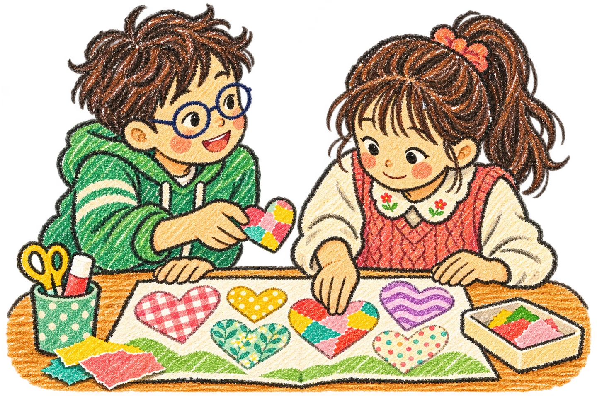
대전전민초등학교
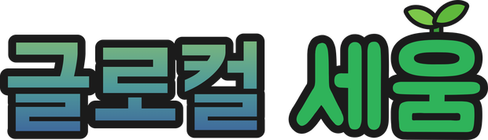
책장으로교과 융합 프로젝트
초등학교 1–6학년

대전전민초등학교
 글로컬 세움(돋움, 채움, 틔움) 프로그램의 역할
글로컬 세움(돋움, 채움, 틔움) 프로그램의 역할서부다문화 클러스터에서는 이주배경학생과 비이주배경학생이 함께 배우도록 교과 수업을 설계했습니다. 한 차시에 어떤 배움을 돕고 싶은지에 따라 중점 프로그램을 정하였습니다.
학생이 자기 문화를 존중받고, 필요한 지원을 활용하며, 자신이 가진 강점으로 친구들과 협력하는 경험이 쌓일 때 주도적 적응력이 자라납니다.

마음 돋움은 이주배경학생과 비이주배경학생이 일상의 수업에서 서로의 문화를 접하며 다문화 감수성을 기르는 프로그램입니다. 학생들은 같은 주제를 두고 생각이 다른 까닭을 서로의 생활 경험에 비추어 이해합니다.
프로젝트에서는 각자의 경험을 탐구의 출발점으로 삼습니다. 친구의 이야기에서 자신이 미처 생각하지 못한 점을 발견하고, 서로의 궁금증을 모아 함께 탐구할 질문을 정합니다. 이 과정에서 문화적 차이를 열린 태도로 받아들입니다.
연결되는 역량: 
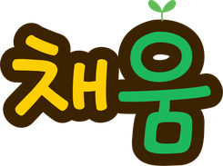
실력 채움은 이주배경학생의 한국어 수준과 학습 경험에 맞추어 교과 학습에 참여할 기회를 보장하는 프로그램입니다. 교사는 학생이 교과 개념을 이해하고 자신의 생각을 표현할 수 있도록 수업에 쓰는 말과 자료, 참여 방법을 조정합니다.
학생은 자신의 생활과 이어지는 탐구 과제에서 목표를 세우고, 자신에게 알맞은 자료와 방법을 선택합니다. 탐구 과정과 결과를 돌아보며 더 필요한 도움을 살피고 다음 배움을 스스로 계획합니다.
연결되는 역량:
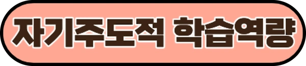
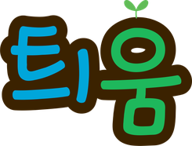
강점 틔움은 이주배경학생의 이중언어 역량과 문화적 경험을 공동의 학습 자원으로 살리는 프로그램입니다. 학생은 친구들과 나눌 경험과 이를 표현할 방법을 스스로 선택하고, 공동의 과제에서 자신이 맡을 역할을 정합니다.
학생들은 서로의 생각을 발전시키고, 다양한 언어와 관점이 드러나는 결과물을 함께 만듭니다. 자신의 문화적 정체성을 살려 학급의 배움에 기여하는 경험은 지역과 세계 공동체에 관심을 갖고 참여하는 바탕이 됩니다.
연결되는 역량:
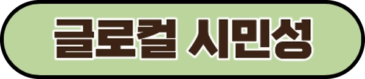
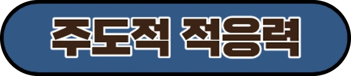
수업을 이끄는 네 단계S.E.U.M.은 교과 융합 프로젝트를 설계할 때 사용하는 네 단계입니다.
학생의 처음 생각이 탐구할 질문이 되고, 친구와 함께 만든 결과가 다시 자신의 배움을 돌아보는 자료가 됩니다.
 et준비하기
et준비하기학생들은 주제에 관해 이미 알고 있는 것과 더 알고 싶은 것을 나눕니다. 서로 다른 경험에서 나온 궁금증을 모아 함께 탐구할 질문으로 다듬습니다. 이 질문을 중심으로 배움의 목표를 정하고, 무엇을 어떤 순서로 알아볼지 계획합니다.

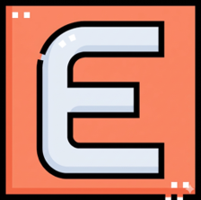
xplore탐구하기탐구 질문에 맞는 방법으로 자료를 모으고, 여러 교과에서 배운 개념을 연결하여 그 의미를 해석합니다. 처음의 생각이 자료에서 찾은 근거와 맞는지 살펴보고, 새롭게 알게 된 점을 바탕으로 자신의 설명을 다듬습니다.
각자 알아낸 내용과 그 근거를 나누며 서로 다른 관점을 살펴봅니다. 의견이 다를 때에는 공동의 목표에 비추어 판단할 기준을 정합니다. 이를 바탕으로 실천할 방법을 선택하고, 각자의 강점을 살려 역할을 나누어 실행합니다.
 ake표현하기
ake표현하기전하려는 대상과 목적에 맞게 탐구 과정과 결과를 정리하여 나눕니다. 처음의 질문으로 돌아가 새롭게 알게 된 점과 달라진 생각을 살펴봅니다. 서로 주고받은 의견을 바탕으로 배운 내용을 생활 속 실천이나 다음 탐구로 이어 갑니다.
| 차시 | 교과 | 본시 학습 주제 | 교과 역량 | 다문화 주도성 요소 |
|---|---|---|---|---|
| 1 | 통합(바생) | 그림책을 읽고, 지구 이웃에게 응원의 말하기 | 지금-여기-우리 삶을 살아가는 힘 | |
| 2 | 통합(슬생) | 우리 생활에서 물을 아껴 쓰는 방법 알아보기 | 지금-여기-우리 삶을 살아가는 힘 | |
| 3 | 통합(슬생) | 에너지를 절약하는 방법 알아보기 | 지금-여기-우리 삶을 살아가는 힘 | |
| 4 | 통합(바생) | 바다 동물들에게 어떤 일이 일어나고 있는지 알아보고, 우리가 할 수 있는 일 생각해보기 | 지금-여기-우리 삶을 살아가는 힘 | |
| 5 | 통합(슬생) | 지구에서 사라져 가는 생명을 구하는 방법을 찾아 실천하기 | 지금-여기-우리 삶을 살아가는 힘 | |
| 6 | 통합(바생) | 음식물을 남기지 않는 습관 기르기 | 지금-여기-우리 삶을 살아가는 힘 | |
| 7 | 통합(바생) | 일회용품 사용을 줄이는 방법 알아보기 | 지금-여기-우리 삶을 살아가는 힘 | |
| 8 | 통합(바생) | 지구를 지킬 수 있는 약속 나무 만들기 | 지금-여기-우리 삶을 살아가는 힘 |
| 차시 | 교과 | 본시 학습 주제 | 교과 역량 | 다문화 주도성 요소 |
|---|---|---|---|---|
| 1 | 통합(바생) | 나에게 영향을 준 인물에 대해 발표하기 | 지금-여기-우리 삶을 살아가는 힘 | |
| 2 | 통합(바생) | 우리 반을 멋지게 만드는 친구 찾아보기 | 지금-여기-우리 삶을 살아가는 힘 | |
| 3 | 통합(슬생) | 한글을 살펴보고 순우리말로 이어갈 미래 표현해 보기 | 지금-여기-우리 삶을 살아가는 힘 | |
| 4 | 통합(슬생) | 인물의 과거 물건으로 미래의 삶 상상해 보기 | 지금-여기-우리 삶을 살아가는 힘 | |
| 5 | 통합(바생) | 인물이 한 말을 알고, 나의 명언 표현해 보기 | 지금-여기-우리 삶을 살아가는 힘 | |
| 6 | 국어 | 인물의 말을 실감 나게 표현하며 목소리 연극 해보기 | 의사소통 역량 | |
| 7 | 국어 | 고마운 마음과 나의 다짐을 담은 편지 써 보기 | 의사소통 역량 | |
| 8 | 창체, 통합(바생) | 나의 꿈 발표하기 | 문제해결 역량 | |
| 차시 | 교과 | 본시 학습 주제 | 교과 역량 | 다문화 주도성 요소 |
|---|---|---|---|---|
| 1 | 국어 | 낱말의 종류 알아보기 | 의사소통 역량 | |
| 2 | 사회 | 서로 다른 문화의 좋은 점을 찾아 칭찬하기 | 문제해결 역량 | |
| 3 | 도덕 | 사람마다 느끼는 감정이 다름을 이해하고, 타인의 감정에 공감하기 | 의사소통 역량 | |
| 4 | 국어 | 세계의 직업을 살펴보고 나의 꿈 발표하기 | 협력적 소통 역량 · 문화 향유 역량 | |
| 5 | 도덕 | 착한 마법 물건 소개하기 | 공동체·대인 관계 역량 | |
| 6 | 도덕 | 다양한 문화 배경을 가진 친구에게 도움이 되는 인공지능 로봇 설계하기 | 공동체 역량 | |
| 7 | 사회 | 누구나 편리하게 사용할 수 있는 물건으로 바꾸어 보기 | 문제해결력 및 의사결정력, 창의적 사고력 | |
| 8 | 도덕 | 다른 문화적 배경을 가진 사람의 마음을 생각하고, 공감하기 위한 실천 약속 발표해 보기 | 공동체 역량 | |
| 차시 | 교과 | 본시 학습 주제 | 교과 역량 | 다문화 주도성 요소 |
|---|---|---|---|---|
| 1 | 국어 | 다문화 프로젝트 발표를 위한 준비하기 | 문제해결 역량 | |
| 2 | 사회 | 우리 지역과 세계의 자랑거리를 알고 분류해 보기 | 정보 활용 능력 | |
| 3 | 과학 | 세계 여러 나라의 기후변화 현상 알아보기 | 문제해결 역량 | |
| 4 | 수학 | 여행하고 싶은 나라의 기온을 조사하여 꺾은선그래프로 나타내기 | 정보처리 역량 | |
| 5 | 체육 | 배쉬 타쉬 놀이의 방법을 알고, 우리나라의 공기놀이와 비교하며 놀이하기 | 신체활동 문화 향유 역량 | |
| 6 | 국어 | 세계 여러 나라 축제를 조사하여 발표하기 | 디지털·미디어 역량 | |
| 7 | 음악 | 여러 나라의 음식을 주제로 노랫말을 바꾸어 불러 보기 | 창의성 역량 | |
| 8 | 미술 | 세계 미술가 탐험대가 되어 도슨트 활동하기 | 심미적 감성 역량 | |
| 차시 | 교과 | 본시 학습 주제 | 교과 역량 | 다문화 주도성 요소 |
|---|---|---|---|---|
| 1 | 실과 | 내 능력으로 글로벌 환경 문제에 어떤 도움을 줄 수 있을지 발표해 보기 | 자기 성찰·계발 역량 | |
| 2 | 국어 | 토의를 통해 세계의 환경문제를 해결해 보기 | 공동체·대인 관계 역량 | |
| 3 | 수학 | 평균을 이용하여 자연재해의 원인 알아보기 | 정보처리 역량 | |
| 4 | 과학 | 물 부족 문제 해결을 위한 장치 고안하기 | 과학적 탐구 능력 | |
| 5 | 실과 | 세계의 환경문제 해결을 위한 구조물 디자인해 보기 | 실천적 문제해결 역량 | |
| 6 | 미술 | 글로벌 환경 문제 해결을 주제로 온라인 전시회 만들어 참여하기 | 심미적 감성 역량 |
| 차시 | 교과 | 본시 학습 주제 | 교과 역량 | 다문화 주도성 요소 |
|---|---|---|---|---|
| 1~2 | 실과·사회 | 지구촌을 위협하는 다양한 문제 알아보기 | 비판적 사고력 | |
| 3 | 사회 | 지구촌 문제와 해결 방안 정리하기 | 의사소통 및 협업 능력 | |
| 4~5 | 실과·사회 | 지속 가능한 미래를 위한 SDGs 실천 과제 알아보기 | 문제 해결력 및 의사결정력 | |
| 6 | 사회 | 지속 가능한 미래를 위해 우리가 할 수 있는 일 알아보기 | 의사소통 및 협업 능력 | |
교과 융합 프로젝트 수업
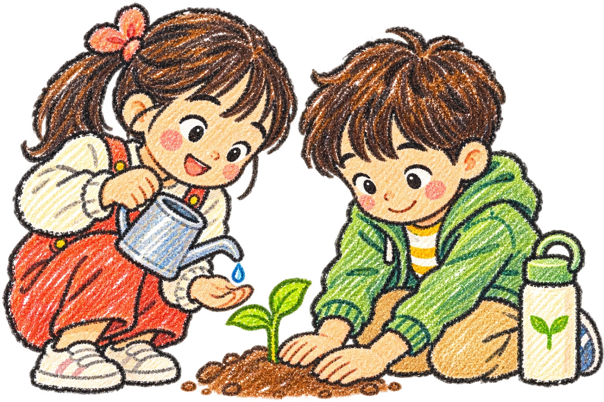
| 차시 | 교과 | 학습 주제 | 교과 역량 |
|---|---|---|---|
| 1 | 통합(바생) | 그림책을 읽고, 지구 이웃에게 응원의 말하기 | 지금-여기-우리 삶을 살아가는 힘 |
| 2 | 통합(슬생) | 우리 생활에서 물을 아껴 쓰는 방법 알아보기 | 지금-여기-우리 삶을 살아가는 힘 |
| 3 | 통합(슬생) | 에너지를 절약하는 방법 알아보기 | 지금-여기-우리 삶을 살아가는 힘 |
| 4 | 통합(바생) | 바다 동물들에게 어떤 일이 일어나고 있는지 알아보고, 우리가 할 수 있는 일 생각해보기 | 지금-여기-우리 삶을 살아가는 힘 |
| 5 | 통합(슬생) | 지구에서 사라져 가는 생명을 구하는 방법을 찾아 실천하기 | 지금-여기-우리 삶을 살아가는 힘 |
| 6 | 통합(바생) | 음식물을 남기지 않는 습관 기르기 | 지금-여기-우리 삶을 살아가는 힘 |
| 7 | 통합(바생) | 일회용품 사용을 줄이는 방법 알아보기 | 지금-여기-우리 삶을 살아가는 힘 |
| 8 | 통합(바생) | 지구를 지킬 수 있는 약속 나무 만들기 | 지금-여기-우리 삶을 살아가는 힘 |
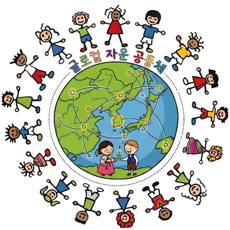
교과 융합 프로젝트 수업대전전민초 · 1학년설계 의도본 프로젝트는 다문화적 배경을 품은 교실 공간(Glocal)과 생태환경이라는 지구적 주제(Global)가 만나, 아이들의 일상적 실천(Local)으로 완성되는 세계시민교육을 구현하고자 한다. 편견과 차별을 넘어 다름과 다양성을 인정하고, 환경 문제 해결을 위해 지구를 함께 살아가는 나의 삶에 주는 의미를 찾아보는 데 목적이 있다. 나의 가치를 발견하고 생명을 존중하는 태도를 바탕으로 일상 속 자원과 동물들의 이야기에 공감하며, 세계시민으로서 스스로 어떤 가치를 지니고 살아갈 것인지 성찰해 본다. 이를 바탕으로 지구를 지키기 위한 다짐과 약속을 실천하고, 세계시민으로서 주체적으로 살아가는 힘을 기르고자 한다.
| 통합(슬생) 약속 | [2슬03-04] 우리의 생활과 관련된 지속 가능성의 다양한 사례를 찾고 탐색한다. |
|---|---|
| 통합(바생) 약속 | [2바03-04] 공동체 속에서 지속 가능성을 위한 삶의 방식을 찾아 실천한다. |
| 통합(즐생) 약속 | [2즐03-04] 안전과 안녕을 위한 아동의 권리가 있음을 알고 누린다. |
| 국어 3. 그림일기를 써요 | [2국01-04] 자신의 경험이나 생각을 바른 자세로 발표한다. |
| [2국06-02] 일상의 경험과 생각을 글과 그림으로 표현한다. |
| 단계 · 프로그램 | 차시 | 주요 학습 내용 | 관련 교과 | 학습 자료 |
|---|---|---|---|---|
| et준비하기 |
1 |
| 통합(바생) 국어 | 그림책 프레젠테이션 |
| xplore탐구하기 | 2 |
| 통합(슬생) 통합(바생) | 동영상 프레젠테이션 |
| 3 |
| 통합(슬생) 통합(바생) | 프레젠테이션 활동지 | |
| 4 |
| 통합(바생) 국어 | 그림책 동영상 | |
| 5 |
| 통합(슬생) 국어 | 그림책 사진 | |
| nite협력하기 | 6 |
| 통합(바생) 통합(슬생) | 동영상 프레젠테이션 |
| 7 |
| 통합(바생) 국어 | 실물자료 동영상 | |
| ake표현하기 |
8 |
| 통합(바생) 통합(즐생) | 그림책 프레젠테이션 |
et①ake⑧| 평가내용 | 평가방법 | 매우 잘함 | 잘함 | 보통 | 노력 요함 |
|---|---|---|---|---|---|
| ①지구 이웃에게 응원 전하기[2바03-04] | 관찰법 | 지구 이웃의 마음을 헤아려 구체적으로 응원함 | 환경 문제에 알맞은 응원의 말을 전함 | 친구의 도움을 받아 응원의 말을 전함 | 교사의 도움을 받아 응원 활동에 참여함 |
| ②물 낭비와 절약 방법 찾기[2슬03-04] | 구술 | 여러 낭비 상황에 맞는 물 절약법을 설명함 | 생활 속 물 절약법을 두 가지 이상 말함 | 도움을 받아 절약법을 한두 가지 말함 | 안내에 따라 물 절약 그림 카드를 선택함 |
| ③에너지 절약 방법 찾기[2슬03-04] | 구술 | 여러 낭비 상황에 맞는 에너지 절약법을 설명함 | 생활 속 에너지 절약법을 두 가지 이상 말함 | 도움을 받아 낭비 상황과 절약법을 말함 | 안내에 따라 에너지 절약 그림 카드를 선택함 |
| ④바다 동물의 피해와 보호 방법[2바03-04] | 관찰법 | 바다 동물의 피해와 보호법을 구체적으로 설명함 | 바다 동물의 피해와 보호 방법을 표현함 | 피해를 일부 알고 도움을 받아 보호법을 표현함 | 안내를 받아 피해와 바다 보호 방법을 탐색함 |
| ⑤사라지는 동물 보호하기[2슬03-04] | 관찰법 | 동물이 사라지는 이유와 보호법을 경험에 연결함 | 동물이 사라지는 이유와 보호 방법을 설명함 | 도움을 받아 사라지는 이유와 보호법을 말함 | 동물이 사라지는 이유와 보호법을 찾기 어려워함 |
| ⑥음식물 쓰레기 줄이기[2바03-04] | 구술 관찰법 | 원인을 상세히 알고 줄이는 법을 꾸준히 실천함 | 발생 원인을 알고 줄이는 방법을 꾸준히 실천함 | 원인을 일부 알고 쓰레기를 줄이려고 노력함 | 원인을 일부 알지만 실천에는 격려가 필요함 |
| ⑦일회용품 줄이기[2바03-04] | 구술 관찰법 | 문제를 자세히 설명하고 사용 줄이기를 실천함 | 종류와 사용 문제를 설명하고 줄이기를 실천함 | 종류와 문제를 일부 알고 줄이기를 실천함 | 종류를 알지만 사용을 줄이는 데 격려가 필요함 |
| ⑧약속 나무에 실천 방법 담기[2바03-04] | 관찰법 | 숲을 지킬 새롭고 구체적인 실천 약속을 제안함 | 생활 속 약속을 떠올려 약속 나무를 완성함 | 제시된 예를 참고하여 약속 나무를 완성함 | 교사의 도움을 받아 약속 나무 만들기에 참여함 |
| 이주배경학생 평가 시 유의점 | |||||
①그림책을 보며 학생이 아는 나라의 환경 이야기를 나눈다. |
②말하기가 어려우면 물 절약 그림 카드를 고르게 한다. |
||||
③북극곰의 편지를 읽고 에너지 절약 약속을 카드에 담게 한다. |
④한국과 미국의 해양 생물 보호 사례를 함께 살펴본다. |
||||
⑤여러 나라의 멸종 위기 동물을 사진으로 살펴보게 한다. |
⑥급식 후 음식물을 남겼는지 실천 카드에 표시하게 한다. |
||||
⑦한국과 학생이 아는 나라의 일회용품 줄이기 사례를 비교한다. |
⑧한글 쓰기가 어려우면 약속을 단어나 그림으로 표현하게 한다. |
||||
융합과목 | 바생, 국어 | 대 상 | 1학년 | 프로젝트 단계 | et (준비하기) | |||||||
|---|---|---|---|---|---|---|---|---|---|---|---|---|
프로젝트 | 지구를 지키는 초록빛 약속(1/8) | 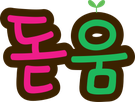 | ||||||||||
성취기준 | [2바03-04] 공동체 속에서 지속 가능성을 위한 사람의 방식을 찾아 실천한다. | |||||||||||
학습목표 | 그림책을 읽고, 지구 이웃에게 응원의 말을 할 수 있다. | |||||||||||
수업전략 | 수업모형 | 이야기 모형 | 교과 역량 | 지금-여기-우리 삶을 살아가는 힘 | ||||||||
다문화 주도성 |
| |||||||||||
☑ | ☑ | ☐ | ☐ | |||||||||
| 단계(시간) | 학습요소 | 교수·학습 활동 | 자료(▶) 및 유의점(☞) |
|---|---|---|---|
| 이야기 열기 (5′) | 동기유발 | ▣ 학습동기 유발 ◦ 버려진 마음 상상하기 ∙ 교실의 학용품이 나누는 대화를 보고, 어떤 마음일지 이야기 해 봅시다. ∙ 우리가 쉽게 버린 것들은 또 무엇이 있을까요? | ▶ 프레젠테이션 ☞ 교실의 분실물을 소재로 활용하여 우리의 삶과 연결시키도록 한다. |
| 공부할 문제 파악 | ▣ 공부할 문제 확인 ♣ 그림책을 읽고, 지구 이웃에게 응원의 말을 해봅시다. | ||
| 이야기 하기 (30′) | 인물의 마음 이해하기 | ▣ 【활동1】 그림책 만나기 ◦ 「브로콜리지만, 사랑받고 싶어」 그림책 읽기 ∙ 브로콜리의 고민은 무엇인가요? ∙ 브로콜리는 사랑받기 위해 어떤 노력을 했나요? ◦ 브로콜리의 마음 변화 살피기 ∙ 브로콜리가 어떻게 자신의 특별함을 찾았나요? | ▶ 그림책 ☞ 이주배경학생의 나라에 대한 인식과 이해를 이끌어낼 수 있도록 발문한다. |
| 지구 환경 요소와 연결하기 | ▣ 【활동2】 응원의 말 전하기 ◦ 버려지거나 아픈 것들의 마음 느껴보기 ∙ 우리가 남겨서 버려지는 음식이나, 함부로 사용하는 물과 전기는 어떤 마음일까요? ∙ 쓰레기를 먹은 고래, 집이 사라진 북극곰, 멸종위기 동물들이 우리에게 하고 싶은 말은 무엇일까요? ◦ 지구 이웃에게 응원의 말 전하기 ∙ 사랑받고 싶은 지구 이웃에게 응원 메시지를 적어 봅시다. | ▶ 응원 활동지 ☞ 그림책의 주제를 환경적 요소로 확장하여 우리가 아껴주고 함께 살아가야 할 대상으로 인식하여 자연스럽게 받아들이도록 한다. | |
| 프로젝트 계획하기 | ▣ 【활동3】 초록빛 약속 통장 만들기 ◦ 모둠별로 질문 만들기 ∙ ‘아껴 쓰는 초록빛 약속’과 관련해서 질문을 만들어 봅시다. ∙ ‘함께 사는 초록빛 약속’과 관련해서 질문을 만들어 봅시다. ∙ ‘줄여가는 초록빛 약속’과 관련해서 질문을 만들어 봅시다. ◦ 초록빛 약속 통장 만들기 ∙ 질문과 관련해서 하고 싶은 활동을 정해 약속 통장을 만들어 봅시다. | ▶ 약속통장 활동지 ☞ 이주배경학생이 어려워할 때는 교사의 도움을 받아 문제를 해결할 수 있도록 한다. | |
| 이야기 맺기 (5‘) | 학습정리 및 프로젝트 안내하기 | ▣ 학습내용 정리 ◦ 배운 내용과 느낀 점 이야기하기 ∙ 오늘 공부하면서 알게 된 점이나 느낀 점을 말해 봅시다. ◦ 지구를 지키는 초록빛 약속 프로젝트 안내하기 ∙ 지구를 위해 우리가 실천할 수 있는 약속을 알아봅시다. | |
▣ 차시 예고 ♣ 물을 위한 초록빛 약속을 알아봅시다. |
대상 | 1학년 | 교과서 | 약속 24~25쪽 | |||||||||||
|---|---|---|---|---|---|---|---|---|---|---|---|---|---|---|
프로젝트 | 너랑 나랑 손잡고, 초록빛 약속(2/8) | 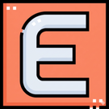 xplore (탐구하기) | 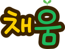 | |||||||||||
본시 성취기준 | [2슬03-04] 우리의 생활과 관련된 지속 가능성의 다양한 사례를 찾고 탐색한다. | 본시 관련교과 | 통합(슬생) 통합(바생) | |||||||||||
학습목표 | 우리 생활에서 물을 아껴 쓰는 방법을 알 수 있다. | |||||||||||||
수업 모형 | 이야기 모형 | 교과 역량 | 지금-여기-우리 삶을 살아가는 힘 | |||||||||||
수업전략 | 수업 의도 | - 물이 부족해 어려움을 겪는 사람들의 모습을 먼저 살펴본 뒤, 내가 오늘 물을 흘려보낸 장면을 찾아 물 절약을 위한 방법과 다짐을 교실 밖 가정 생활까지 이어지게 한다. - 사는 곳이 달라도 물을 아껴 써야 하는 것은 그 어느 곳이나 같다는 것을 학생들이 인지하도록 하며 우리 생활의 작은 부분을 바꾸면 물 사용량을 줄일 수 있으며 꾸준한 물 절약 습관을 기를 수 있도록 한다. | ||||||||||||
다문화 주도성 |
| |||||||||||||
☑ | ☑ | ☑ | ☐ | |||||||||||
이주배경학생 지도계획 | - 한글 읽기, 쓰기가 또래보다 느리고 말하기가 다소 어색하므로, 한글 읽기, 쓰기의 정확성과 말하기의 유창성이 아닌 물을 아껴 쓰는 방법을 골라 방법을 표현할 수 있도록 하며 상황에 따라서는 그림 그리기, 스티커 붙이기, 그림 카드 고르기로 참여할 수 있게 한다. | |||||||||||||
| 단계(시간) | 학습요소 | 교수·학습 활동 | 자료(▶) 및 유의점(☞) |
|---|---|---|---|
| 이야기 열기 (5′) | 동기유발 | ▣ 학습동기 유발 ◦ 물 부족으로 어려움을 겪는 상황 살펴보기 ∙ 물이 부족해서 어떤 일이 생겼는지 말해 봅시다. - 물을 찾아 몇 시간 걸었습니다. - 물이 깨끗하지 않았습니다. ∙ 물이 부족하거나 없으면 어떤 일이 일어날까요? - 물을 마실 수 없고, 씻지도 못합니다. | ▶ 동영상 ☞ 세계 여러 나라에서 물 부족으로 겪는 어려움을 공감한다. |
| 공부할 문제 파악 | ▣ 공부할 문제 확인 ♣ 우리 생활에서 물을 아껴 쓰는 방법을 알아봅시다. | ||
| 학습활동 안내 | ▣ 학습활동 안내 【활동1】 물 절약의 필요성 알기 【활동2】 물 절약 방법 알기 【활동3】 지구를 살리는 부루마블 | ||
| 이야기 하기 (30′) | 물 절약의 필요성 | ▣ 【활동1】 물 절약의 필요성 알기 ◦ 물이 낭비되는 상황 살피기 ∙ 물이 낭비되는 상황에 대해 말해 봅시다. - 양치하고 손 씻을 때 세면대 물을 틀어놓고 있습니다. - 물장난을 하느라 화장실 물을 계속 틀어놨습니다. ∙ 내가 물을 함부로 사용했던 경험을 말해 봅시다. - 샤워할 때 물을 계속 틀어둔 적이 있습니다. - 양치할 때 양치 컵을 사용하지 않았습니다. ∙ 우리나라의 물 사용량을 살펴봅시다. - 다른 나라보다 물을 많이 사용하고 있습니다. - 물을 많이 사용해서 물이 부족한 나라입니다. | ▶ 프레젠테이션 ☞ 학생들이 평소 생활에서 물을 낭비한 경험을 자연스럽게 말하도록 한다. ▶ 동영상 ☞ 학생들의 눈높이에 맞게 설명한다. |
| 단계(시간) | 학습요소 | 교수·학습 활동 | 자료(▶) 및 유의점(☞) |
|---|---|---|---|
| 물 절약 방법 | ▣ 【활동2】 물 절약 방법 알아보기 ◦ 물을 절약하는 방법 이야기 나누기 ∙ 물 절약을 위해 내가 할 수 있는 일에 대해 말해 봅시다. - 양치할 때 양치 컵을 사용합니다. - 물장난을 치지 않아야 합니다. - 몸에 비누칠할 때 샤워기를 잠급니다. ∙ 물을 절약하기 위해 가정에서 할 수 있는 일을 말해 봅시다. - 설거지통을 사용합니다. - 샤워 시간을 줄입니다. ◦ 물 발자국 알아보기 ∙ 제품별 물 발자국을 알아봅시다. - 우리가 먹는 음식에 많은 물이 필요합니다. - 물건을 아껴 사용해야 합니다. | ▶ 프레젠테이션 ☞ 학생들이 쉽게 접근하여 평소 실천하는 것들을 말해 보도록 한다. ▶ 프레젠테이션 ☞ 학생들의 수준에 맞게 설명한다. | |
| 놀이 활동을 통해 물 절약 실천 다짐하기 | ▣ 【활동3】 지구를 살리는 부루마블 ◦ 지구를 살리는 부루마블 하기 ∙ 가정이나 학교에서 나와 우리 가족이 물 절약을 실천할 수 있는 방법을 말하며 놀이를 해 봅시다. - 해당하는 칸에 도착하여 물 절약을 실천할 수 있는 방법을 말하며 게임에 참여한다. | ▶ 활동지, 주사위, 개인말 ☞ 경쟁과 단순한 흥미가 아닌 게임을 통해 물 절약 실천 방법을 다시 한번 기억하도록 한다. | |
| 이야기 맺기 (5′) | 학습내용 정리 | ▣ 학습내용 정리 ◦ 물 절약과 관련한 수업에서 느낀 점 이야기하기 ∙ 오늘 수업을 통해 물 절약과 관련한 부분에 대해 말해 봅시다. - 물이 없어 힘든 나라 사람들을 기억하며 아껴 쓰겠습니다. - 다른 물건도 아껴 사용해야겠습니다. | |
| 차시 예고 | ▣ 차시 예고 ♣ 에너지를 절약하는 방법을 알아봅시다. |
판서 | 너랑 나랑 손잡고, 초록빛 약속 | ||
|---|---|---|---|
♣ 우리 생활에서 물을 아껴쓰는 방법을 알아봅시다. | <물 절약 방법>
|
| |
【활동1】 물 절약의 필요성 【활동2】 물 절약 방법 【활동3】 지구를 살리는 부루마블 |
평가 계획 | 평가내용 | 척도 | 채점 기준 | 평가방법 |
|---|---|---|---|---|
물을 낭비하는 상황을 찾고 물 절약을 위한 방법을 알고 있는가? | 매우 잘함 | 물이 낭비되는 상황을 여러 가지 찾고, 상황별 물을 아껴 쓰는 방법을 잘 알고 있다. | 구술 | |
잘함 | 물이 낭비되는 상황을 찾고, 물을 아끼는 방법을 생활 속에서 찾아 2가지 이상 이야기할 수 있다. | |||
보통 | 도움을 받아 물이 낭비되는 상황을 찾고, 물을 아껴 쓰는 방법을 1~2가지 말한다. | |||
노력 요함 | 안내에 따라 물을 아껴 쓰는 방법을 그림 카드에서 고른다. | |||
이주배경학생 평가 시 유의점 | 한글 읽기·쓰기의 정확성이 아니라 물을 아껴 쓰는 방법을 상황에 맞게 표현하는지 평가한다. 그림 그리기, 스티커 붙이기, 동작으로 보여주기, 영어로 말하기도 같은 수준의 표현도 인정한다. | |||
2차시 학생 활동지 · xplore 탐구하기 · 실력 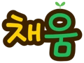
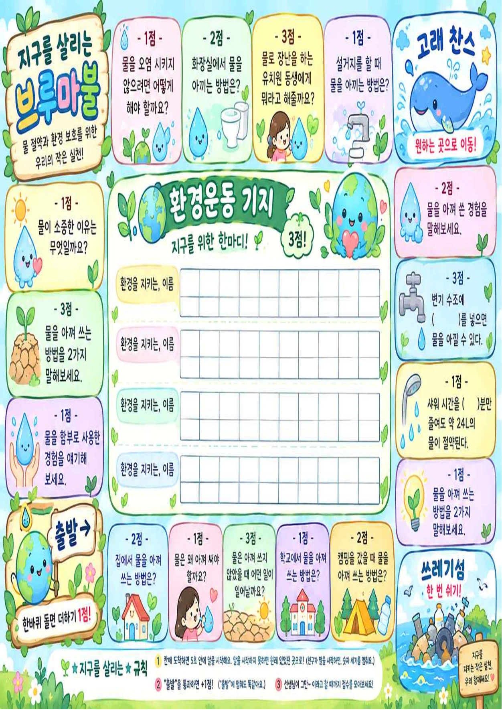
융합과목 | 슬생, 바생 | 대 상 | 1학년 | 프로젝트 단계 | xplore (탐구하기) | |||||||
|---|---|---|---|---|---|---|---|---|---|---|---|---|
프로젝트 | 지구를 지키는 초록빛 약속(3/8) | |||||||||||
성취기준 | [2슬03-04]우리의 생활과 관련된 지속 가능성의 다양한 사례를 찾고 탐색한다. | |||||||||||
학습목표 | 에너지를 절약하는 방법을 알 수 있다. | |||||||||||
수업전략 | 수업모형 | 이야기 모형 | 교과 역량 | 지금-여기-우리 삶을 살아가는 힘 | ||||||||
다문화 주도성 |
| |||||||||||
☑ | ☑ | ☐ | ☑ | |||||||||
| 단계(시간) | 학습요소 | 교수·학습 활동 | 자료(▶) 및 유의점(☞) |
|---|---|---|---|
| 이야기 열기 (5′) | 동기유발 | ▣ 학습동기 유발 ◦ 에너지가 절약의 필요성 알아보기 ∙ 북극곰의 편지를 살펴봅시다. ∙ 북극곰이 힘든 이유를 말해 봅시다. ∙ 북극 말고 다른 곳에서는 어떤 어려움을 겪고 있는지 말해 봅시다. | ▶ 프레젠테이션 ☞ 북극곰의 편지를 통해 북극곰뿐만 아니라 지구 여러 곳에서 온난화의 영향을 받고 있음을 안다. |
| 공부할 문제 파악 | ▣ 공부할 문제 확인 ♣ 에너지를 절약하는 방법을 알아봅시다. | ||
| 이야기 하기 (30′) | 에너지의 뜻과 필요성 알기 | ▣ 【활동1】 에너지 뜻과 필요 상황 알기 ◦ 에너지의 뜻 알아보기 ∙ 전기는 에너지이며 에너지는 일을 할 수 있는 힘입니다. ∙ 우리는 언제 에너지를 사용할까요? ◦ 에너지가 낭비되고 있는 상황 알아보기 ∙ 에너지가 낭비되고 있는 곳을 말해 봅시다. | ▶ 프레젠테이션 ☞ 학생들의 눈높이에 맞게 설명한다. |
| 에너지 절약 방법 알기 | ▣ 【활동2】 에너지 절약 방법 알기 ◦ 에너지 절약 필요성 알기 ∙ 에너지 절약 필요성에 대해 이야기 해 봅시다. ◦ 에너지 절약 방법에 대해 이야기하기 ∙ 내가 꾸준히 실천할 수 있는 에너지 절약 방법과 우리 집에서 가족들이 함께 실천할 수 있는 에너지 절약 방법을 떠 올려 봅시다. | ▶ 프레젠테이션 | |
| 약속 카드 만들기 | ▣ 【활동3】 약속 카드 만들기 ◦ 북극곰과 함께 약속 카드 만들기 ∙ 자신이 실천할 수 있는 에너지 절약 방법을 정해봅시다. ∙ 정한 방법에 어울리는 문구를 써 봅시다. ∙ 완성한 작품을 친구에게 소개해 봅시다. | ▶ 활동지 ☞ 작품에 사용하는 종이는 이면지를 사용하여 환경 보호에 대한 실천 의지를 높인다. | |
| 이야기 맺기 (5′) | 학습내용 정리하기 | ▣ 학습내용 정리 ◦ 배운 내용과 느낀 점 이야기하기 ∙ 에너지 절약과 관련한 수업에서 느낀 점을 말해 봅시다. ∙ 자신의 다짐을 다 같이 말해 봅시다. | |
▣ 차시 예고 ♣ 바다를 위해 할 수 있는 일을 알아봅시다. |
대상 | 1학년 | 교과서 | 약속 28~29쪽 | |||||||||||
|---|---|---|---|---|---|---|---|---|---|---|---|---|---|---|
프로젝트 | 너랑 나랑 손잡고, 초록빛 약속(4/8) | xplore (탐구하기) | ||||||||||||
본시 성취기준 | [2바03-04] 공동체 속에서 지속 가능성을 위한 삶의 방식을 찾아 실천한다. | 본시 관련교과 | 통합(바생) 통합(슬생) | |||||||||||
학습목표 | 바다 동물들이 겪는 환경 문제를 알고, 바다를 지키기 위한 마음을 가질 수 있다. | |||||||||||||
수업 모형 | 이야기 모형 | 교과 역량 | 지금-여기-우리 삶을 살아가는 힘 | |||||||||||
수업전략 | 수업 의도 | - 바다 환경 오염으로 인해 위험에 처한 해양 생물의 모습을 살펴보며 생명의 소중함을 이해하고, 환경 문제를 자신의 삶과 연결하여 생각해 볼 수 있게 한다. - 바다는 특정 국가만의 공간이 아닌 세계가 함께 지켜야 할 공동의 자원임을 이해하고, 다양한 문화와 배경을 가진 사람들이 환경 보호를 위해 함께 실천해야 함을 인식하도록 하여 글로컬 시민성을 함양하고자 한다. | ||||||||||||
다문화 주도성 |
| |||||||||||||
☑ | ☐ | ☑ | ☐ | |||||||||||
이주배경학생 지도계획 | - 미국과 한국의 해양 생물 보호 사례를 함께 살펴보며, 우리나라 뿐만 아니라 세계 여러 나라에서 환경 보호를 위해 노력하고 있음을 이해할 수 있도록 돕는다. - 다양한 문화와 배경을 가진 사람들이 환경 보호를 위해 함께 실천해야 함을 인식하도록 하여 글로컬 시민성을 함양할 수 있도록 지도한다. | |||||||||||||
| 단계(시간) | 학습요소 | 교수·학습 활동 | 자료(▶) 및 유의점(☞) |
|---|---|---|---|
| 이야기 열기 (5′) | 동기유발 | ▣ 학습동기 유발 ◦ 그림책 ‘플라스틱 섬’ 읽기 ∙ 바다에 어떤 일이 일어나고 있나요? - 바다가 쓰레기로 더러워지고 있어요. ∙ 바다 동물들은 어떤 기분일까요? - 사람들이 쓰레기를 버려서 속상할 것 같아요. - 숨쉬기가 어려울 것 같아요. | ▶ ‘플라스틱 섬’ 그림책 |
| 공부할 문제 파악 | ▣ 공부할 문제 확인 ♣ 바다 동물들에게 어떤 일이 일어나고 있는지 알아보고, 우리가 할 수 있는 일을 생각해 봅시다. | ||
| 학습활동 안내 | ▣ 학습활동 안내 【활동1】 바다 동물에게 무슨 일이? 【활동2】 바다를 아프게 하는 것들 【활동3】 바다를 지켜요 | ||
| 이야기 하기 (30′) | 피해 사례 알아보기 | ▣ 【활동1】 바다 동물에게 무슨 일이? ◦ 실제 사례 살펴보기 ∙ 동물들에게 어떤 일이 생겼나요? - 바다표범이 그물에 걸려 움직일 수 없게 되었습니다. - 바다거북 코에 빨대가 끼어 숨쉬기가 어려워졌습니다. ∙ 왜 이런 일이 일어났을까요? - 사람들이 쓰레기를 함부로 버려서입니다. - 사람들이 플라스틱을 많이 사용해서입니다. | ▶ 바다 동물 영상자료 ☞ 저학년에 적절한 자료를 선정하여 보여준다. ☞ 다양한 나라의 사례를 보여줌으로써 우리나라 뿐만 아니라 전 세계적으로 함께 고민하고 해결해야 할 문제임을 알게 한다. |
| 단계(시간) | 학습요소 | 교수·학습 활동 | 자료(▶) 및 유의점(☞) |
|---|---|---|---|
| 쓰레기가 바다에 미치는 영향 알아보기 | ▣ 【활동2】 바다를 아프게 하는 것들 ◦ 오래 남는 쓰레기 살펴보기 ∙ 내가 어른이 될 때까지 사라지지 않는 쓰레기는 무엇일까요? - 스티로폼 상자, 유리병(썩지 않음) - 비닐봉투(20~100년), 일회용 기저귀(100년), 캔(100년), 그물(500년), 플라스틱 병(500년) 등 ∙ 이 쓰레기들이 바다로 가면 어떤 일이 일어날까요? - 100년 동안 떠다니며 동물을 아프게 할 것 같아요. - 점점 많아져서 커다란 섬이 될 것 같아요. | ▶ 교과서 붙임자료 ☞ 구체적인 숫자보다 ‘오랫동안 남는다’는 것을 이해할 수 있도록 한다. | |
| 동물의 입장에서 생각하기 | ▣ 【활동3】 바다를 지켜요 ◦ 그림책 장면 감상하기 ∙ 용궁의 모습은 어땠나요? - 용궁에 있는 동물들이 많이 아파 보였어요. ∙ 바다 동물들은 어떤 피해를 입고 있었나요? - 용왕 거북이 코에 플라스틱 빨대가 박혀 있었어요. - 물고기들이 쓰레기를 먹어서 아파했어요. ◦ 바다 동물의 입장이 되어 이야기 나누기 ∙ 내가 바다 동물이라면 사람들에게 어떤 말을 해주고 싶을까요? - 저는 00입니다. 저를 위해 00해 주세요. | ▶ 활동지 ▶ ‘할머니의 용궁 여행’ 그림책 ☞ 학생들이 그림책을 통해 바다 환경 오염의 심각성을 깨닫고 바다 동물의 입장에서 이야기 해 볼 수 있도록 한다. | |
| 이야기 맺기 (5′) | 학습내용 정리 | ▣ 학습내용 정리 ◦ 바다를 부탁해 노랫말 감상하기 ∙ 바다를 위해 할 수 있는 일을 생각하며 ‘바다를 부탁해’ 노래를 배워 봅시다. ∙ 오늘 알게 된 점을 이야기해 봅시다. - 앞으로 플라스틱 사용을 줄여야겠다고 생각했습니다. | ☞ 노랫말을 배우며 생활 속 실천 다짐으로 연결 시킬 수 있게 한다. |
| 차시 예고 | ▣ 차시 예고 ♣ 사라져 가는 생명을 구하는 방법을 찾고 실천해 봅시다. |
판서 | 너랑 나랑 손잡고, 초록빛 약속 | ||
|---|---|---|---|
♣ 바다 동물들에게 어떤 일이 일어나고 있는지 알아보고, 우리가 할 수 있는 일을 생각해 봅시다. | <함께 지켜요>
|
| |
【활동1】 바다동물에게 무슨일이? 【활동2】 바다를 아프게 하는 것들 【활동3】 바다를 지켜요 |
평가 계획 | 평가내용 | 척도 | 채점 기준 | 평가방법 |
|---|---|---|---|---|
바다 동물들이 겪는 피해를 이해하고 바다를 보호하려는 마음과 실천 의지를 표현할 수 있는가? | 매우 잘함 | 바다 동물들이 겪는 피해를 구체적으로 이해하고 설명할 수 있으며, 바다를 보호하기 위한 실천 방법을 구체적으로 설명할 수 있다. | 관찰법 | |
잘함 | 바다 동물들이 겪는 피해를 이해하고 설명할 수 있으며, 바다를 보호하기 위한 실천 방법을 표현할 수 있다. | |||
보통 | 바다 동물들이 겪는 피해를 부분적으로 이해하며, 교사의 도움을 받아 바다를 보호하기 위한 생각을 표현할 수 있다. | |||
노력 요함 | 바다 동물들이 겪는 피해를 이해하는 데 어려움이 있으며, 바다를 보호하기 위한 생각이나 실천 의지를 표현하는 데 도움이 필요하다. | |||
이주배경학생 평가 시 유의점 | 시각 자료와 그림책을 활용하여 학습 내용을 충분히 이해할 수 있도록 지원하며, 언어 표현의 정확성보다 바다 동물의 피해에 대한 이해와 실천 의지 표현 과정에 중점을 두어 평가한다. | |||
4차시 학생 활동지 · xplore 탐구하기 · 실력
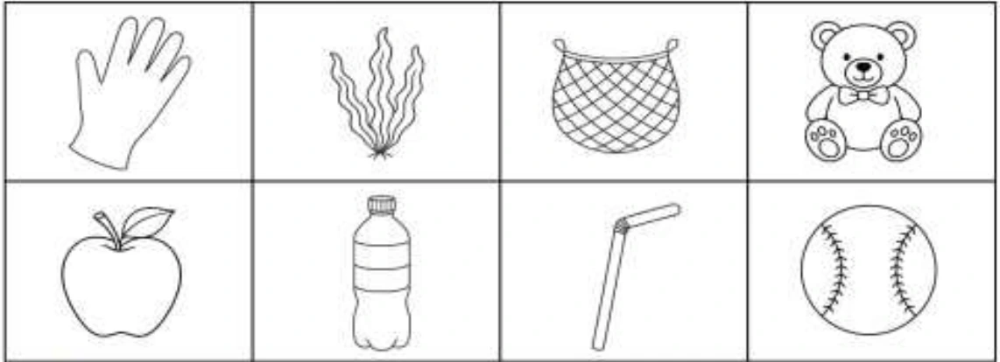
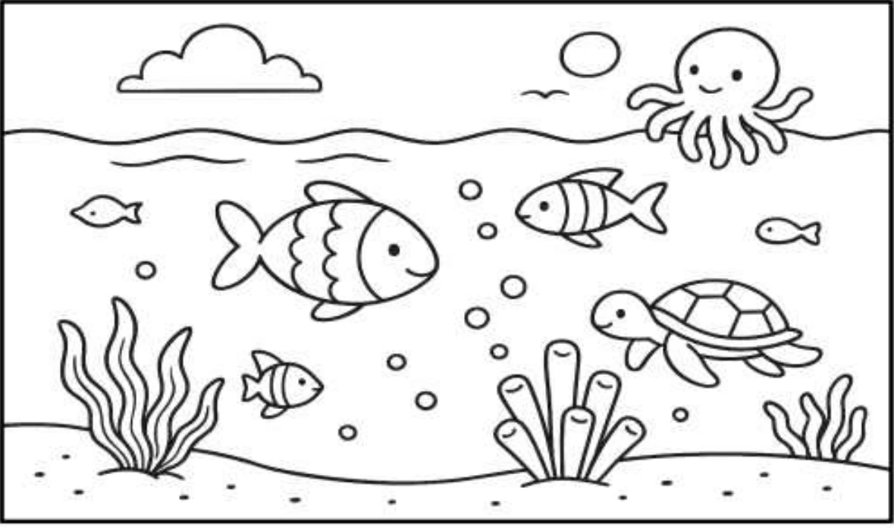
융합과목 | 슬생, 국어 | 대 상 | 1학년 | 프로젝트 단계 | xplore (탐구하기) | |||||||
|---|---|---|---|---|---|---|---|---|---|---|---|---|
프로젝트 | 지구를 지키는 초록빛 약속(5/8) | |||||||||||
성취기준 | [2슬03-04] 우리의 생활과 관련된 지속 가능성의 다양한 사례를 찾고 탐색한다. | |||||||||||
학습목표 | 지구에서 사라져 가는 생명을 구하는 방법을 찾고 실천할 수 있다. | |||||||||||
수업전략 | 수업모형 | 문제해결 학습 모형 | 교과 역량 | 문제해결 역량 | ||||||||
다문화 주도성 |
| |||||||||||
☑ | ☐ | ☑ | ☐ | |||||||||
| 단계(시간) | 학습요소 | 교수·학습 활동 | 자료(▶) 및 유의점(☞) |
|---|---|---|---|
| 문제 인식 (5′) | 동기유발 | ▣ 학습동기 유발 ◦ 그림책 ‘사라지는 동물 친구들’ 읽기 ∙ 동물들에게 무슨 일이 생기고 있을까요? ∙ 왜 사라지고 있을까요? | ▶ ‘사라지는 동물친구들’ 그림책 |
| 공부할 문제 파악 | ▣ 공부할 문제 확인 ♣ 지구에서 사라져 가는 생명을 구하는 방법을 찾고 실천해 봅시다. | ||
| 가치 탐색 (10′) | 멸종위기 동물 사례 알아보기 | ▣ 【활동1】 누가 사라지고 있을까? ◦ 각 나라별 사라져 가는 동물들 알아보기 ∙ 우리나라: 수달, 산양 ∙ 중국: 자이언트 판다 ∙ 호주: 코알라 ∙ 북극: 북극곰 | ▶ 멸종동물 사진 ☞ 각 나라별 멸종동물의 사례를 살펴봄으로써 우리나라 뿐 아니라 전 세계적 문제임을 인식한다. |
| 가치 판단 (10′) | 동물들이 사라지는 이유 알아보기 | ▣ 【활동2】 왜 사라지고 있을까? ◦ 동물들이 사라지는 이유 알아보기 ∙ 동물들이 살던 곳에 어떤 변화가 생겼나요? ∙ 사람들의 행동이 동물들에게 어떤 영향을 주고 있나요? | |
| 가치 내면화 (10′) | 동물의 입장에서 생각하기 | ▣ 【활동3】 내가 사라진다면? ◦ 동물의 입장에서 이야기하기 ∙ 내가 이 동물이라면 어떤 기분이 들 것 같나요? ∙ 동물들이 우리에게 가장 하고 싶은 말은 무엇일까요? | |
| 정리 (5′) | 학습내용 정리하기 | ▣ 학습내용 정리 ◦ 배운 내용과 느낀 점 이야기하기 ∙ 동물들이 계속 살아갈 수 있도록 나는 어떤 일을 실천할 수 있을지 말해 봅시다. | ☞ 내가 할 수 있는 일은 꾸준히 실천할 수 있도록 다짐한다. |
▣ 차시 예고 ♣ 음식물을 남기지 않는 습관을 길러 봅시다. |
융합과목 | 바생, 슬생 | 대 상 | 1학년 | 프로젝트 단계 | nite (협력하기) | |||||||
|---|---|---|---|---|---|---|---|---|---|---|---|---|
프로젝트 | 지구를 지키는 초록빛 약속 (6/8) | 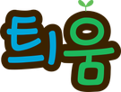 | ||||||||||
성취기준 | [2바03-04]공동체 속에서 지속 가능성을 위한 삶의 방식을 찾아 실천한다. | |||||||||||
학습목표 | 음식물을 남기지 않는 습관을 실천할 수 있다. | |||||||||||
수업전략 | 수업모형 | 이야기 모형 | 교과 역량 | 지금-여기-우리 삶을 살아가는 힘 | ||||||||
다문화 주도성 |
| |||||||||||
☑ | ☑ | ☐ | ☑ | |||||||||
| 단계(시간) | 학습요소 | 교수·학습 활동 | 자료(▶) 및 유의점(☞) |
|---|---|---|---|
| 이야기 열기 (5′) | 동기유발 | ▣ 학습동기 유발 ◦ 영상 보고 이야기 나누기 ∙ 무엇을 보았나요? ∙ 왜 그런 일이 생길까요? | ▶ 동영상 ☞ 버려지는 음식 쓰레기 실태를 보도록 한다. |
| 공부할 문제 파악 | ▣ 공부할 문제 확인 ♣ 음식물을 남기지 않는 습관을 길러 봅시다. | ||
| 이야기 하기 (30′) | 이야기 듣기 | ▣ 【활동1】 음식들의 이야기 듣기 ◦ 남겨진 음식들이 울고 있는 이유 알아보기 ∙ 음식들의 표정이 어떠한가요? ∙ 음식들은 왜 울고 있나요? ∙ 빈 말풍선에 남겨진 음식들이 무슨 말을 하고 싶을까요? ◦ 음식들이 하고 싶은 말 발표하기 | ▶ 프레젠테이션 ☞ 그림을 살펴보고 빈 말주머니에 생각을 써 보게 한다. |
| 문제점 알아보기 | ▣ 【활동2】 음식물 쓰레기 문제점 알기 ◦ 음식물 쓰레기 문제점 알아보기 ∙ 아름이가 음식물 쓰레기를 버리러 가면서 어떤 행동을 했 나요? ∙ 음식물 괴물이 운 이유는 무엇인가요? ∙ 음식 쓰레기 때문에 어떤 일이 생겼나요? | ▶ 동영상 (세상에서 가장 슬픈 괴물) | |
| 실천다짐하기 | ▣ 【활동3】 음식 남기지 않기 실천하기 ◦ 음식을 남기지 않기 실천하기 ∙ 우리나라와 다른 나라 여러 음식 중 잘 먹는 음식 표시하기 ∙ 음식을 남기지 않도록 다짐해 보고 실천카드를 잘 보이는 곳에 붙여 두고 실천 결과를 표시해 봅시다. ◦ 급식에 나오는 음식을 보고 다 먹을 수 있는 음식 체크해 보고 실천하기 | ▶ 동영상 (다른 나라 음식물 쓰레기 관련 영상) ▶ 실천카드 ▶ 오늘의 급식 메뉴판 ☞ 점심 식사 후 급식 먹은 결과를 표시하게 한다. | |
| 이야기 맺기 (5‘) | 학습내용 정리하기 | ▣ 학습내용 정리 ◦ 배운 내용과 느낀 점 이야기하기 ∙ 오늘 공부하면서 알게 된 점을 말해 봅시다. | |
▣ 차시 예고 ♣ 일회용품 사용 줄이는 행동을 실천해 봅시다. |
대상 | 1학년 | 교과서 | 약속 30~31쪽 | |||||||||||
|---|---|---|---|---|---|---|---|---|---|---|---|---|---|---|
프로젝트 | 너랑 나랑 손잡고, 초록빛 약속(7/8) | nite (협력하기) | ||||||||||||
본시 성취기준 | [2바03-04] 공동체 속에서 지속 가능성을 위한 삶의 방식을 찾아 실천한다. | 본시 관련교과 | 통합(바생) 국어 | |||||||||||
학습목표 | 일회용품 사용을 줄이는 방법을 알 수 있다. | |||||||||||||
수업 모형 | 이야기 모형 | 교과 역량 | 지금-여기-우리 삶을 살아가는 힘 | |||||||||||
수업전략 | 수업 의도 | - 기후 변화와 생태계 파괴가 전 세계적인 문제로 등장하면서 우리나라도 일회용품 사용을 줄이는 대책을 시행하고 있는데 이 수업에서는 일상생활에서 자주 사용하는 일회용품을 알아보고 대체할 수 있는 방법을 알아본다. - 일회용품 사용과 관련된 다른 나라 사례를 살펴보고 이주배경학생이 우리나라에서 시행하는 일회용품 사용 줄이기 위한 다양한 노력과 비교하여 차이점이 있는지 알아보고 함께 실천할 수 있도록 한다. | ||||||||||||
다문화 주도성 |
| |||||||||||||
☑ | ☑ | ☑ | ☑ | |||||||||||
이주배경학생 지도계획 | - 우리나라의 일회용품 사용과 일회용품 줄이기 위한 다양한 노력을 함께 공부하며 이주배경학생의 나라에서 하는 활동과 비교하여 살펴보도록 한다. | |||||||||||||
| 단계(시간) | 학습요소 | 교수·학습 활동 | 자료(▶) 및 유의점(☞) |
|---|---|---|---|
| 이야기 열기 (5′) | 동기유발 | ▣ 학습동기 유발 ◦ 무슨 물건인지 알아보기 ∙ 바구니에서 꺼낸 물건을 보고 무엇인지 말해 본다. - 빨대, 컵, 비닐봉지입니다. ∙ 이런 물건을 사용한 경험을 이야기해 봅시다. - 음료수 먹을 때 빨대를 사용해요. 등 | ▶ 실물 자료 ☞ 우리가 사용하는 일회용품 여러 가지를 제시하고 서로 이야기 나눈다. |
| 공부할 문제 파악 | ▣ 공부할 문제 확인 ♣ 일회용품 사용을 줄이는 방법을 알아봅시다. | ||
| 학습활동 안내 | ▣ 학습활동 안내 【활동1】 일회용품 종류 알아보기 【활동2】 일회용품 사용 줄이는 방법 【활동3】 고고 챌린지 | ||
| 이야기 하기 (30′) | 일회용품 사용 문제 인식하기 | ▣ 【활동1】 일회용품 종류 알아보기 ◦ 일회용품이 무엇인지 알아보기 ∙ 영상을 보며 일회용품에 대해 자세히 알아본다. ◦ 교과서 살펴보기 ∙ 어떤 장면인지 어떤 물건들이 있는지 말해 볼까요? - 현장체험학습에서 점심 도시락을 먹고 있어요. ∙ 점심 도시락을 다 먹은 후에 어떤 일이 생길까요? - 일회용품 쓰레기를 버릴 곳을 찾을 것 같아요. ∙ 일회용품을 사용했던 경험을 말해 볼까요? ∙ 일회용품을 많이 사용하면 어떤 문제가 생길까요? - 쓰레기가 많아져요. - 함부로 버리면 썩지 않아 환경오염이 생겨요. | ▶ 동영상 ☞ 일회용품 관련 영상을 보며 문제성을 인식하도록 한다. |
| 단계(시간) | 학습요소 | 교수·학습 활동 | 자료(▶) 및 유의점(☞) |
|---|---|---|---|
| 다양한 문제 탐색 하기 | ▣ 【활동2】 일회용품 사용 줄이는 방법 ◦ 일회용품 대신 쓸 수 있는 물건으로 교체하기 ◦ 일회용품 사용을 줄이기 위해 할 수 있는 일 알아보기 ∙ 일회용품 사용을 줄이기 위해 나와 가족이 할 수 있는 일은 무엇인가요? - 개인용 물병 가지고 다니기, 빨대 사용 줄이기 - 장보기 할 때 장바구니 가지고 다니기 등 ◦ 다른 나라의 일회용품 사용을 줄이기 위한 일 알아보기 - 캐나다, 독일, 프랑스, 케냐 | ▶ 동영상 (플라스틱 없는 마트) ▶ 동영상 ☞ 캐나다와 케냐의 노력을 살펴본다. | |
| 일회용품 줄이기 놀이하기 | ▣ 【활동3】 고고 챌린지 ◦ 일회용품 줄이는 방법 찾기 놀이하기 ∙ 거절하고! 사용하고! 놀이 활동하기 - 그림 카드를 ‘거절하고!’ 또는 ‘사용하고!’ 칸에 붙이기 ◦ 지구를 위해 함께 해요 ∙ 우리 반 일회용품 안 쓰는 날 정하기 ∙ 우리는 초록지구 지킴이 활동가 되어보기 | ▶ 그림(사진) 자료 ☞ 일회용품 관련 그림을 선택하고 해당하는 부분에 붙이도록 한다. ▶ 지구 지킴이 목걸이 | |
| 이야기 맺기 (5′) | 학습내용 정리 | ▣ 학습내용 정리 ◦ 배운 내용 정리하기 ∙ 오늘 배운 내용을 생각해 보고 소감을 말해 봅시다. - 일회용품을 줄이기 위해 노력해야겠다고 생각했습니다. ◦ 과제 제시하기 ∙ 일회용품 사용 줄인 경험을 그림일기 쓰기 - 일회용품을 줄인 경험을 일기로 써오기 | ☞ 가정과 연계하여 일회용품 안 쓰는 날 실천 경험 일기 쓰기 과제로 제시한다. |
| 차시 예고 | ▣ 차시 예고 ♣ 지나친 상품의 포장을 줄이는 방법을 알아봅시다. |
판서 | 너랑 나랑 손잡고, 초록빛 약속 | ||
|---|---|---|---|
♣ 일회용품 사용을 줄이는 방법을 알아봅시다. | <우리가 사용하는 일회용품> 빨대나무젓가락일회용 컵 스티로폼 포장 용기비닐봉투 |
| |
【활동1】 일회용품 종류 알아보기 【활동2】 일회용품 사용 줄이는 방법 【활동3】 고고 챌린지 |
평가 계획 | 평가내용 | 척도 | 채점 기준 | 평가방법 |
|---|---|---|---|---|
일회용품의 종류와 일회용품 사용의 문제점을 알고 있으며 생활 속에서 사용을 줄이기 위해 실천하는가? | 매우 잘함 | 일회용품의 종류를 알고 일회용품을 많이 사용하면 벌어지는 일에 대해 자세히 설명할 수 있으며 일회용품 사용을 줄이기 위한 행동을 실천한다. | 구술, 관찰법 | |
잘함 | 일회용품의 종류를 알고 일회용품을 많이 사용하면 벌어지는 일에 대해 설명할 수 있으며 일회용품 사용을 줄이기 위한 행동을 실천한다. | |||
보통 | 일회용품의 종류를 알고 일회용품을 많이 사용하면 벌어지는 일에 대해 조금 알고 있으며 일회용품 사용을 줄이기 위한 행동을 실천한다. | |||
노력 요함 | 일회용품의 종류를 알고 있으나 일회용품을 줄이기 위한 행동에 관심이 없다. | |||
이주배경학생 평가 시 유의점 | 이주배경학생이 우리나라의 일회용품 사용 실태와 노력하는 점을 알고 가정과 연계하여 실천할 수 있는 방법을 찾아보도록 한다. | |||
7차시 학생 활동지 · nite 협력하기 · 강점 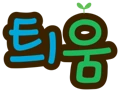
대상 | 1학년 | 교과서 | 약속 54~55쪽 | |||||||||||
|---|---|---|---|---|---|---|---|---|---|---|---|---|---|---|
프로젝트 | 너랑 나랑 손잡고, 초록빛 약속(8/8) | ake(표현하기) | ||||||||||||
본시 성취기준 | [2바03-04] 공동체 속에서 지속 가능성을 위한 삶의 방식을 찾아 실천한다. | 본시 관련교과 | 통합(바생) 통합(즐생) | |||||||||||
학습목표 | 지구를 지킬 수 있는 약속 나무를 만들 수 있다. | |||||||||||||
수업 모형 | 이야기 모형 | 교과 역량 | 지금-여기-우리 삶을 살아가는 힘 | |||||||||||
수업전략 | 수업 의도 | - 그림책을 활용하여 지구 반대편의 환경파괴가 우리 모두의 문제임을 공감하는 생태적 감수성을 키우고자 한다. - 환경을 다시 살리고, 지킬 수 있는 것도 사람임을 깨닫고, 일상생활에서 환경을 지키는 작은 실천을 다짐하며 책임감 있는 세계시민으로 성장하는 태도를 기르고자 한다. | ||||||||||||
다문화 주도성 |
| |||||||||||||
☐ | ☐ | ☑ | ☑ | |||||||||||
이주배경학생 지도계획 | - 이주배경학생의 한글해득 수준을 고려하여 단어나 그림 등으로 표현하도록 안내한다. - 그림책이라는 시각적인 자료와 재활용 나무 만들기 등의 조작 활동으로 언어 장벽 없이 수업에 온전히 참여할 수 있도록 한다. | |||||||||||||
| 단계(시간) | 학습요소 | 교수·학습 활동 | 자료(▶) 및 유의점(☞) |
|---|---|---|---|
| 이야기 열기 (5′) | 동기유발 | ▣ 학습동기 유발 ◦ 선생님이 들려주는 이야기 듣기 ∙ 인형의 고민은 무엇입니까? - 위험에 처한 친구를 도와주려고 찾고 있습니다. ∙ 힌트를 듣고 친구가 있는 장소를 찾아봅시다. - 숲입니다. | ▶ 인형, 프레젠테이션 ☞ 이주배경학생의 나라에 대한 인식과 이해를 이끌어낼 수 있도록 한다. |
| 공부할 문제 파악 | ▣ 공부할 문제 확인 ♣ 지구를 지킬 수 있는 약속 나무를 만들어 봅시다. | ||
| 학습활동 안내 | ▣ 학습활동 안내 【활동1】 그림책 만나기 【활동2】 초록빛 약속 찾기 【활동3】 약속 나무 만들기 | ||
| 이야기 하기 (25′) | 그림책 읽고 생각 나누기 | ▣ 【활동1】 그림책 만나기 ◦ 그림책 「나무늘보가 사는 숲에서」 읽기 ∙ 숲 속에는 누가 누가 살고 있었나요? - 나무늘보, 개미핥기, 큰부리새, 나무 등 ∙ 숲에는 무슨 일이 벌어졌나요? - 포크레인이 나타나 나무를 모두 뽑아갔어요. ◦ 그림책 「나무늘보가 사는 숲에서」 생각 나누기 ∙ 나무늘보는 왜 피하지 못했을까요? - 행동이 너무 느려서 도망가지 못했어요. ∙ 사라진 숲을 봤을 때 친구들은 어떤 마음이 드나요? - 나무늘보와 동물들이 살 곳을 잃어서 속상해요. - 숲을 없애버린 사람들이 미워요. ∙ 모두가 사라진 땅에 씨앗을 뿌린 것은 누구였나요? - 노래하던 새와 서로 사랑하던 동물과 나뭇잎 사이로 살랑 거리던 바람을 그리워하던 한 사람입니다. | ▶ 그림책 ☞ 숲은 사람의 필요만 채워주는 것이 아니라 다양한 동식물의 보금자리임을 인식시킨다. ☞ 숲을 파괴하는 건 사람이지만, 파괴된 숲을 되살릴 수 있는 것도 사람임을 생각해 볼 수 있도록 한다. |
| 단계(시간) | 학습요소 | 교수·학습 활동 | 자료(▶) 및 유의점(☞) |
|---|---|---|---|
| 나의 생활과 연결하여 실천 방법 찾기 | ▣ 【활동2】 초록빛 약속 찾기 ◦ 지구를 위해 우리가 할 수 있는 일 생각하기 ∙ 지구를 지키기 위해 우리가 생활 속에서 실천할 수 있는 일은 무엇이 있을까요? - 휴지나 종이를 아껴 씁니다. ◦ 초록빛 약속 만들기 ∙ 짝꿍과 함께 내가 할 수 있는 약속을 정해 봅시다. ∙ 마음에 드는 약속을 골라서 나뭇잎에 쓰고, 발표해 봅시다. - 화장실에서 휴지로 장난하지 않아요. | ▶ 활동지 ☞ 프로젝트 학습을 하면서 차시별로 다짐했던 약속을 상기시키도록 한다. ☞ 이주배경학생이 글로 쓰기 어려운 경우 그림으로 그리게 하거나 교사나 친구의 도움을 받아 해결할 수 있도록 한다. | |
| 약속 나무로 우리 반 숲 만들기 | ▣ 【활동3】 약속 나무 만들기 ◦ 재활용 나무 만들기 ∙ 종이에 원하는 모양의 나무를 그리고 휴지심 나무 기둥에 붙여봅시다. ∙ 약속 나뭇잎을 붙여서 나만의 약속 나무를 만들어 봅시다. ◦ 사라진 숲 만들기 ∙ 약속 나무를 모아서 우리 반 숲을 만들어 봅시다. ∙ 친구들이 만든 나무와 초록빛 약속을 감상해 봅시다. | ▶ 휴지심, 색종이 ☞ 프로젝트가 진행되는 동안 가정에서도 실천할 수 있도록 휴지심을 준비하도록 한다. ☞ 사라진 숲을 우리가 다시 만들어 본다는 것에 의미를 두고 활동을 진행한다. | |
| 이야기 맺기 (10′) | 프로젝트 정리하기 배움 성찰 | ▣ 학습내용 정리 ◦ 배운 내용 정리하기 ∙ 프로젝트 활동 작품들을 보며 배운 내용을 되돌아봅시다. - 멸종위기 동물, 플라스틱 쓰레기, 지구온난화가 있습니다. ◦ 소감 나누기 ∙ 프로젝트 수업에서 가장 기억에 남는 것은 무엇인가요? - 우리의 손으로 만든 숲처럼 우리의 실천으로 지구가 더 건강해졌으면 좋겠어요. ∙ 지구를 위해 우리는 앞으로 어떻게 해야 할까요? - 약속의 날을 정해서 일주일에 한 번은 꼭 실천해요. | ☞ 프로젝트 전체를 되돌아보며 느낀 점을 자유롭게 표현하고, 나눌 수 있는 시간을 갖는다. ☞ 지속 가능성을 구체적으로 경험할 수 있도록 세계시민으로서 약속을 꾸준히 실천하고 관심을 가질 수 있도록 한다. |
| 차시 예고 | ▣ 차시 예고 ♣ ‘상상’과 관련하여 공부하고 싶은 주제를 정해 봅시다. |
판서 | 너랑 나랑 손잡고, 초록빛 약속 | ||
|---|---|---|---|
♣ 지구를 지킬 수 있는 약속 나무를 만들어 봅시다. | <초록빛 약속 만들기> 양치 컵을 사용해요. 손수건을 사용해요. 먹을 만큼 받고 남기지 않아요. |
| |
【활동1】 그림책 만나기 【활동2】 초록빛 약속 찾기 【활동3】 약속 나무 만들기 |
평가 계획 | 평가내용 | 척도 | 채점 기준 | 평가방법 |
|---|---|---|---|---|
지구를 지키기 위한 나만의 실천 방법을 약속 나무로 표현할 수 있는가? | 매우 잘함 | 숲의 소중함을 이해하고, 지구를 지키기 위한 구체적이고 창의적인 실천 방법을 제안하여 약속 나무를 만든다. | 관찰법 | |
잘함 | 숲의 고마움을 알고, 일상생활에서 실천할 수 있는 약속을 적절하게 떠올려 약속 나무를 만든다. | |||
보통 | 지구를 보호해야 한다는 내용을 알고 있으며, 제시된 내용을 참고하여 약속 나무를 만든다. | |||
노력 요함 | 환경을 생각하는 마음을 교사의 도움을 받아 약속 나무를 만든다. | |||
이주배경학생 평가 시 유의점 | 이주배경학생이 학습 내용을 이해하도록 시각적 자료로 이해를 돕고, 표현의 과정에서 위축되거나 소외되지 않도록 활동을 구성하고 즐겁게 참여하는 태도에 중점을 두어 평가한다. | |||
8차시 학생 활동지 · ake 표현하기 · 강점
예시 양치 컵을 사용해요. 먹을 만큼만 받고, 남기지 않아요. 손수건을 사용해요.
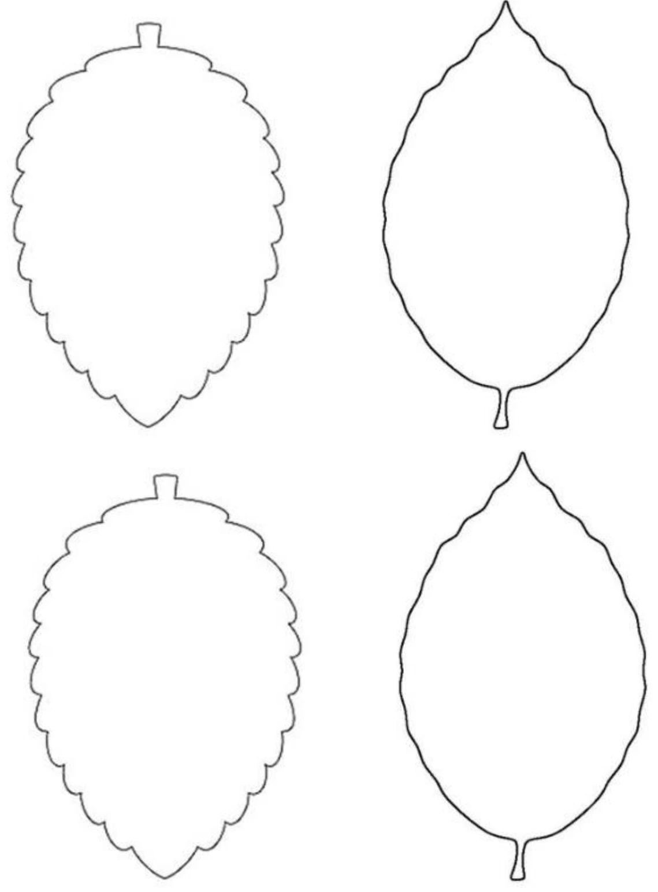
재활용 나무에 붙여 약속 나무를 완성해 봅시다.
교과 융합 프로젝트 수업
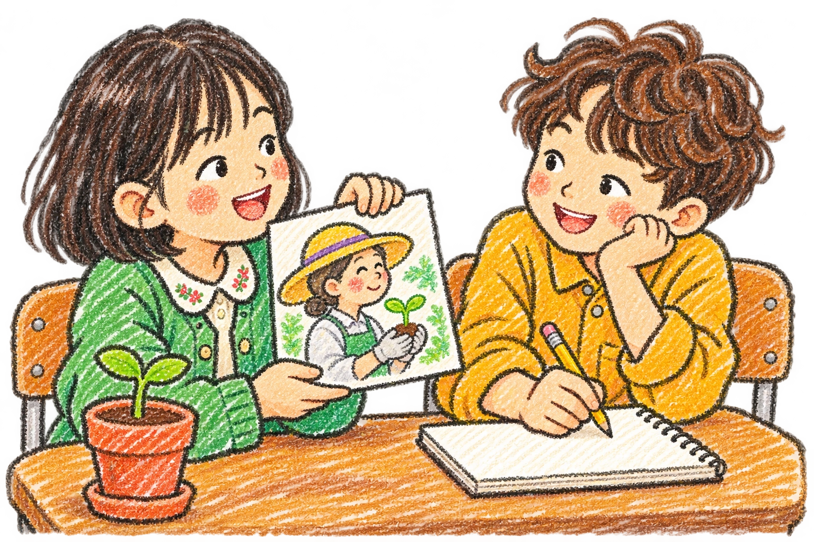
| 차시 | 교과 | 학습 주제 | 교과 역량 |
|---|---|---|---|
| 1 | 통합(바생) | 나에게 영향을 준 인물에 대해 발표하기 | 지금-여기-우리 삶을 살아가는 힘 |
| 2 | 통합(바생) | 우리 반을 멋지게 만드는 친구 찾아보기 | 지금-여기-우리 삶을 살아가는 힘 |
| 3 | 통합(슬생) | 한글을 살펴보고 순우리말로 이어갈 미래 표현해 보기 | 지금-여기-우리 삶을 살아가는 힘 |
| 4 | 통합(슬생) | 인물의 과거 물건으로 미래의 삶 상상해 보기 | 지금-여기-우리 삶을 살아가는 힘 |
| 5 | 통합(바생) | 인물이 한 말을 알고, 나의 명언 표현해 보기 | 지금-여기-우리 삶을 살아가는 힘 |
| 6 | 국어 | 인물의 말을 실감 나게 표현하며 목소리 연극 해보기 | 의사소통 역량 |
| 7 | 국어 | 고마운 마음과 나의 다짐을 담은 편지 써 보기 | 의사소통 역량 |
| 8 | 창체, 통합(바생) | 나의 꿈 발표하기 | 문제해결 역량 |
설계 의도 공동체를 위해 노력한 인물의 삶을 탐구하고, 그 이야기가 지금, 여기를 살아가는 나의 삶에 주는 의미를 찾아보는 데 목적이 있다. 나와 다른 사람을 이해하고 화합하고자 했던 역사적 인물의 태도를 통해 존중과 배려를 배우고, 스스로 어떤 가치를 지니고 살아갈 것인지 성찰해 본다. 이를 바탕으로 우리 공동체 속에서 선한 영향력을 발휘하며, 자신의 꿈과 미래를 주체적으로 설계하는 힘을 기르고자 한다.
| 통합(슬생) 인물 | [2슬03-03] 관심 있는 대상의 과거와 현재를 살펴보고 미래를 상상한다. |
|---|---|
| 통합(바생) 인물 | [2바03-03] 여러 인물의 삶을 통해 공동체성을 기른다. |
| 통합(즐생) 인물 | [2즐03-03] 전통문화를 새롭게 표현한다. |
| 국어 4. 마음을 전해요 | [2국05-03] 작품 속 인물의 모습, 행동, 마음을 상상하여 시, 노래, 이야기, 그림 등으로 표현한다. |
| [2국01-04] 자신의 경험이나 생각을 바른 자세로 발표한다. |
| 단계 · 프로그램 | 차시 | 주요 학습 내용 | 관련 교과 | 학습 자료 |
|---|---|---|---|---|
| et준비하기 |
1 |
|
통합(바생) 국어 | 프레젠테이션 활동지 |
| 2 |
|
통합(바생) | 프레젠테이션 활동지 | |
| xplore탐구하기 | 3 |
|
통합(슬생) 국어 | 프레젠테이션 부메랑 |
| 4 |
|
통합(슬생) | 프레젠테이션 활동지 | |
| nite협력하기 | 5 |
|
통합(즐생) 국어 | 프레젠테이션 활동지 |
| 6 |
|
국어 통합(슬생) | 활동지 역할이름표 | |
| ake표현하기 |
7 |
|
국어 통합(슬생) | 프레젠테이션 활동지 |
| 8 |
|
창·체(진로) 통합(바생) | 프레젠테이션 활동지 |
et①②ake⑦⑧| 평가내용 | 평가방법 | 매우 잘함 | 잘함 | 보통 | 노력 요함 |
|---|---|---|---|---|---|
| ①나에게 영향을 준 인물 발표[2바03-03] [2국01-04] | 구술 | 받은 영향과 변화를 구체적이고 설득력 있게 발표함 | 받은 영향과 내 생각을 명확하게 발표함 | 받은 영향이나 생각을 단순하게 발표함 | 인물을 고르거나 받은 영향을 발표할 때 도움이 필요함 |
| ②친구의 멋진 모습을 담은 탐정 보고서[2바03-03] | 프로젝트 | 구체적인 행동을 옛 인물과 연결해 보고서를 쓰고 자신 있게 발표함 | 옛 인물과 연결해 보고서를 쓰고 발표함 | 친구의 멋진 모습을 적고 간단히 발표함 | 친구의 멋진 점 찾기나 보고서 작성·발표에 도움이 필요함 |
| ③순우리말로 내 생각 표현하기[2슬03-03] | 관찰법 | 한글과 순우리말의 뜻·가치를 알고 알맞은 문장으로 생각을 표현함 | 한글과 순우리말의 뜻을 알고 뜻에 맞는 문장을 만듦 | 뜻을 일부 이해하고 도움을 받아 문장을 만듦 | 뜻을 이해하거나 순우리말로 표현할 때 도움이 필요함 |
| ④옛 물건으로 인물의 미래 상상하기[2슬03-03] | 구술 | 물건에 담긴 가치를 정확히 찾고 미래를 구체적이고 창의적으로 표현함 | 물건에 담긴 가치를 이해하고 미래를 상상해 표현함 | 가치를 일부 이해하고 미래를 간단히 표현함 | 가치를 찾거나 미래 모습을 표현할 때 도움이 필요함 |
| ⑤인물이 남긴 말로 글자 꾸미기[2바03-03] [2즐03-03] | 프로젝트 | 조사한 말로 글자를 예쁘게 꾸미고 그 뜻을 이해함 | 조사한 말로 글자를 잘 꾸밈 | 조사한 말로 글자를 어느 정도 꾸밈 | 인물이 남긴 말이 있음을 앎 |
| ⑥인물의 마음을 담은 목소리 연극[2국05-03] | 관찰법 | 마음과 상황에 맞게 목소리의 크기·높낮이·빠르기를 실감 나게 조절함 | 대사의 느낌을 살려 알맞은 목소리로 표현함 | 마음에 맞는 목소리와 표정으로 표현하려 함 | 인물의 마음을 드러내지 못하고 글자만 읽음 |
| ⑦세종대왕에게 쓰는 고마움과 다짐의 편지[2국05-03] | 논술 | 백성을 위해 한 일을 떠올리며 고마움과 나의 다짐을 담아 씀 | 백성을 위해 한 일을 떠올리며 고마움을 담아 씀 | 하고 싶은 말은 쓰나 고마운 이유나 생각을 쓰기 어려워함 | 하고 싶은 말을 편지로 쓸 때 교사의 도움이 필요함 |
| ⑧친구들 앞에서 나의 꿈 발표[2바01-02] | 구술· | 알맞은 발성과 자세로 꿈을 매우 잘 발표함 | 알맞은 발성과 자세로 꿈을 잘 발표함 | 친구들 앞에서 꿈을 발표함 | 나의 꿈을 그림으로 잘 표현함 |
| 이주배경학생 평가 시 유의점 | |||||
①한국어가 서툴러도 인물에 대한 고마움과 자기 생각이 드러나는지 살핀다. |
②친구의 발표를 듣고 더 알고 싶은 점을 질문하게 한다. |
||||
③그림·낱말 카드·또래의 도움을 활용해 뜻 이해와 참여, 표현 과정을 살핀다. |
④옛 물건은 변해도 이어지는 인물의 가치를 생각해 보게 한다. |
||||
⑤자료 찾기는 교사·친구가 돕고, 모국의 지식을 나누는 기여를 평가에 반영한다. |
⑥인물의 마음에 어울리면 대사를 바꾸어 표현할 수 있다. |
||||
⑦쓰기가 어려우면 맞춤법 부담을 덜고 인물의 마음을 헤아려 쓴 내용을 살핀다. |
⑧잘하거나 좋아하는 일을 자유롭게 말하도록 격려한다. |
||||
| 대상 | 2학년 | 교과서 | 인물 18~19쪽 | |
|---|---|---|---|---|
| 프로젝트 | 마음 싹, 꿈 싹! 세상을 바꾸는 이야기(1/8) et (준비하기) | |||
| 본시 성취기준 | [2바03-03] 여러 인물의 삶을 통해 공동체성을 기른다. [2국01-04] 자신의 경험이나 생각을 바른 자세로 발표한다. | 본시 관련교과 | 통합(바생) 국어 | |
| 학습목표 | 나에게 영향을 준 인물에 대해 발표할 수 있다. | |||
| 수업 모형 | 이야기 모형 | 교과 역량 | 지금-여기-우리 삶을 살아가는 힘 | |
| 수업전략 | 수업 의도 | - 가까운 주변과 책과 미디어로부터 알게 된 인물을 중심으로 ‘덕분에’라는 긍정의 관점에서 나에게 영향을 준 인물을 탐구하고 관계 중요성에 대해 생각하도록 한다. - 수업 과정에서 열린 질문과 닫힌 질문에 대한 질문을 모델링하고 스스로 질문을 만들어 볼 수 있도록 한다. | ||
| 다문화 주도성 | ☑☑☐☑ | |||
| 이주배경학생 지도계획 | - 문화적·국가적 차이에 초점을 두기보다 인류 보편의 가치(돌봄, 사랑, 상호 관계 등)를 중심으로 접근하여, 이주배경학생과 비이주배경학생 모두가 편견 없이 공감하고 어우러질 수 있는 삶의 경험을 수업 소재로 다룬다. | |||
| 단계(시간) | 학습요소 | 교수·학습 활동 | 자료(▶) 및 유의점(☞) |
|---|---|---|---|
| 이야기 열기 (5′) | 동기유발 | ▣ 학습동기 유발 ◦ 자료를 살펴보며 학습할 내용 생각해 보기 ∙손흥민에게 아버지는 어떤 사람인가요? - 아버지는 무서우면서 고마운 사람입니다. ∙김연아에게 어머니는 어떤 사람인가요? - 어머니는 엄격하면서 감사한 사람입니다. ∙손흥민과 김연아의 성공은 부모님 때문인가요? 덕분인가요? - 부모님 ‘덕분에~’ 라고 생각합니다. ∙일론 머스크의 어머니는 어떤 분이셨을까요? ∙독일 또는 여러 다른 나라에서는 비슷한 사례가 있을까요? | ▶프레젠테이션 ☞(질문) 열린 질문으로 학생들의 사고를 열고 닫힌 질문으로 학습의 목표로 나아가게 돕는다. ☞학습자의 삶에 가장 밀접한 인물인 부모님을 탐색의 시작으로 학습자의 실제 삶과 연결해 깊이 있는 배움으로 이끈다. |
| 공부할 문제 파악 | ▣ 공부할 문제 확인 ♣ 나에게 영향을 준 인물에 대해 발표해 봅시다. | ||
| 학습활동 안내 | ▣ 학습활동 안내 【활동1】 인물이 주는 영향 알아보기 【활동2】 영향을 준 인물 찾아보기 【활동3】 영향을 준 인물 표현하기 | ||
| 이야기 하기 (30′) | 인물이 주는 영향 알아보기 | ▣ 【활동1】 인물이 주는 영향 알아보기 ◦ 스무고개 게임으로 고마운 인물에 대해 알아보기 ∙이 인물은 누구일까요? ‘덕분에~’ 단어를 넣어서 ‘네’와 ‘아니오’로 답할 수 있는 질문을 만들어 AI와 나누어 주세요. ∙‘그 인물 덕분에 제가 태어난 건가요?’처럼 그 인물을 구체적으로 추측할 수 있는 질문을 해 봅시다. - 그 인물 덕분에 지금 제가 과학을 좋아하는 걸까요? - 그 인물 덕분에 제가 편식하지 않고 건강히 크는 걸까요? - 그 인물 덕분에 과거에 일본으로부터 우리나라를 지킬 수 있었나요? ∙우리는 많은 인물의 감사한 영향을 받아 자랍니다. | ▶AI 역할 대화 (교사 주도, 디지털 윤리 준수) ☞(질문) 구체적인 닫힌 질문으로 범위를 좁혀, 사용자가 문제해결에 전략적 질문 구성을 자연스럽게 체득하도록 돕는다. ☞주변 인물로 시작하여 해외와 역사 인물 등으로 반경을 넓힐 수 있게 인물을 설정한다. |
| 단계(시간) | 학습요소 | 교수·학습 활동 | 자료(▶) 및 유의점(☞) |
|---|---|---|---|
| 영향을 준 인물 찾아보기 | ▣ 【활동2】 영향을 준 인물 찾아보기 ◦ 나에게 영향을 준 인물 찾아보기 ∙나에게 영향을 준 인물과 그 영향에 대해 브레인스토밍을 해 봅시다. ∙어떤 인물이 떠오르나요? 그 인물에게 무슨 영향을 받았나요? - 나에게 큰 영향을 준 인물은 의사입니다. 내 아픈 곳을 싹 낫게 해주었고 세상에 많은 아픈 사람을 돕습니다. ∙AI가 생각한 인물과 그 영향에 대해서 어떻게 생각하나요? | ▶AI와 협력적 브레인스토밍 (교사 주도, 디지털 윤리 준수) ☞나에게 영향을 준 인물을 찾아보는 과정에서 AI와 협력적 브레인 스토밍의 결과들은 학생들에게 마중물이 되어 더 다양한 인물과 그 영향을 떠올리는데 도움이 될 수 있다. | |
| 영향을 준 인물 표현하기 | ▣ 【활동3】 영향을 준 인물 표현하기 ◦ 나에게 영향을 준 인물 표현하기 ∙나에게 영향을 준 인물과 그 영향에 대해 학습지를 작성하고 발표해 봅시다. ∙학습지의 내용은 모두 작성하는 것이 아니라 스스로 가장 잘 작성할 수 있는 부분을 선택하여 작성합니다. - 나에게 가장 큰 영향을 준 인물은 부모님입니다. 맛있는 밥과 따뜻한 돌봄으로 진정한 사랑과 배려가 무엇인지를 알 수 있습니다. | ▶학습지 ☞학습지는 보편적 학습설계(UDL) 원리를 적용한 것으로, 학생이 선호하는 표현 방식을 직접 선택하게 함으로써 개별 맞춤형의 능동적인 배움 참여를 이끌어낸다. | |
| 이야기 맺기 (5′) | 학습내용 정리 | ▣ 학습내용 정리 ◦ 배운 내용 정리하기 ∙학습지의 내용으로 만든 AI 노래를 들어봅시다. ∙서로 다른 나라일지라도 깊은 부모님의 사랑은 조금도 다르지 않습니다. 많은 사람들은 서로 영향을 주고 받습니다. 우리가 이를 ‘덕분에’라는 긍정으로 받아들이며 감사를 표현하는 삶을 산다면 우리의 삶은 어떠할까요? - 세상이 아름답고 따뜻해질 것 같습니다. | ▶AI 노래 생성 ☞배움이 인지적 학습에 머무르지 않고 정의적 영역에 영향을 줄 수 있도록 노래라는 정서적 매체를 활용하여 학습 내용을 정리 및 전달한다. |
| 차시 예고 | ▣ 차시 예고 ♣ 우리 반을 멋지게 만드는 친구를 찾아봅시다. |
판서 | 1. 이 인물 덕분에 | ||
|---|---|---|---|
♣ 나에게 영향을 준 인물에 대해 발표해 봅시다. | 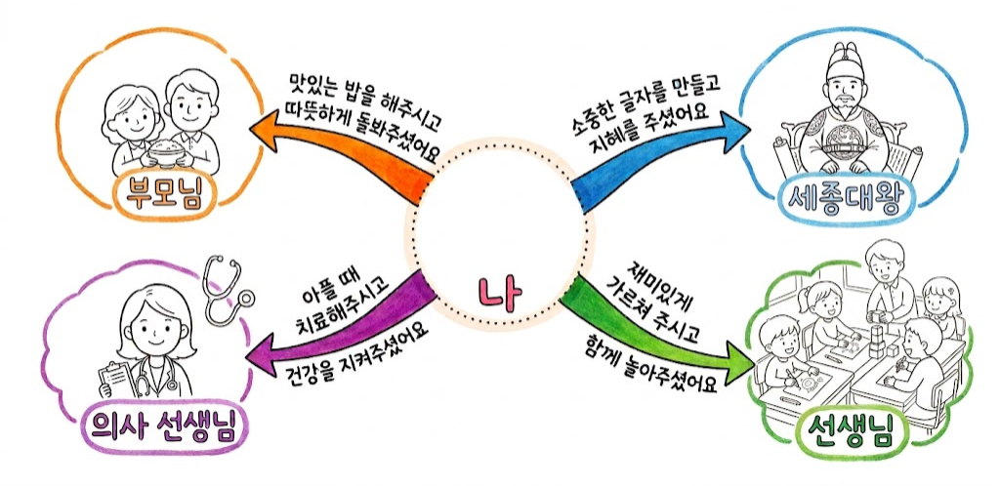 |
| |
【활동1】 인물이 주는 영향 알아보기 【활동2】 영향을 준 인물 찾아보기 【활동3】 영향을 준 인물 표현하기 |
평가 계획 | 평가내용 | 척도 | 채점 기준 | 평가방법 |
|---|---|---|---|---|
나에게 영향을 준 인물을 찾아, 그 인물과 영향을 표현하여 발표할 수 있는가? | 매우 잘함 | 영향을 준 인물을 명확히 제시하고, 그 인물이 자신에게 미친 구체적인 영향과 그로 인한 자신의 변화 및 생각을 매우 논리적으로 표현하여 조리 있고 설득력 있게 발표한다. | 구술 | |
잘함 | 영향을 준 인물을 선정하여 그 인물로부터 받은 영향과 자신의 생각을 명확하게 표현하여 정확히 발표한다. | |||
보통 | 영향을 준 인물을 선정하였으나, 받은 영향이나 자신의 생각을 다소 단순하게 표현하여 피상적으로 발표한다. | |||
노력 요함 | 영향을 준 인물을 선정하거나, 받은 영향을 표현하고 발표하는 데 도움이 필요하다. | |||
이주배경학생 평가 시 유의점 | 한국어 어휘나 문장 구성이 다소 미숙하더라도 인물에 대한 고마움, 감사 등 전달하고자 하는 내용과 생각이 드러난다면 내용의 진정성을 중심으로 긍정적으로 평가한다. | |||
1차시 학생 활동지 · et 준비하기 · 마음
어떤 사람이 떠오르나요? 그 사람 덕분에 달라진 내 모습을 생각해 보세요.
아래에서 표현하기 좋은 방법을 골라 보세요.
가운데에는 사람을, 양옆에는 그 사람에게서 받은 영향을 써 보세요.
빈 곳에 내 이야기를 넣어 보세요.
기억나는 모습을 그림으로 그리거나 노래 가사로 적어 보세요.
발표해요내가 고른 인물은 누구이며, 그 사람 덕분에 무엇이 달라졌나요?
2학년 프로젝트 교수·학습 과정안 | ||||||||||||
|---|---|---|---|---|---|---|---|---|---|---|---|---|
융합과목 | 통합(바생) | 대 상 | 2학년 | 프로젝트 단계 | et (준비하기) | |||||||
프로젝트 | 마음을 잇는 인물 탐구, 세상을 잇는 나의 미래(2/8) | |||||||||||
성취기준 | [2바03-03] 여러 인물의 삶을 통해 공동체성을 기른다. | |||||||||||
학습목표 | 우리 반을 멋지게 만드는 친구를 찾을 수 있다. | |||||||||||
수업전략 | 수업모형 | 이야기 모형 | 교과 역량 | 지금-여기-우리 삶을 살아가는 힘 | ||||||||
다문화 주도성 |
| |||||||||||
☐ | ☑ | ☑ | ☑ | |||||||||
| 단계(시간) | 학습요소 | 교수·학습 활동 | 자료(▶) 및 유의점(☞) |
|---|---|---|---|
| 이야기 열기 (5′) | 동기유발 | ▣ 학습동기 유발 ◦ ‘쫌 이상한 사람들’을 읽고, 학습할 내용 생각해 보기 ∙ 어떤 이상한 사람들이 있었습니까? ∙ 작가가 쫌 이상한 사람이 있어서 다행이라고 말한 까닭은무엇일까요? ∙ 이번 시간에 무엇을 공부할 것 같습니까? | ▶ 프레젠테이션 ☞ 학생들이 생각을 자유롭게 표현할 수 있도록 정답을 요구하기보다 이유를 질문한다. |
| 공부할 문제 파악하기 | ▣ 공부할 문제 확인 ♣ 우리 반을 멋지게 만드는 친구를 찾아봅시다. | ||
| 이야기 하기 (20′) | 옛 인물이 지닌 가치 찾기 | ▣ 【활동1】 멋진 사람들의 비밀 ◦ 옛 인물의 모습 속에서 멋진 행동 알아보기 ∙ 옛 인물들의 행동을 살펴보고, 어떤 멋진 모습을 발견할 수 있었나요? ∙ 짝과 함께 인물 카드를 살펴보고, 인물의 멋진 점을 찾아 봅시다. | ▶ 인물 사진 ☞ 인물의 멋진 점을 찾는 데 그치지 않고, 질문을 통해 인물의 행동을 근거로 생각하도록 한다. |
| 탐정 보고서 작성 및 발표하기 | ▣ 【활동2】 멋진 사람 탐정단 ◦ 친구의 멋진 모습 찾기 ∙ 옛 인물의 멋진 모습과 닮은 친구의 모습을 찾아봅시다. ∙ 일주일동안 관찰한 친구의 행동을 떠올리며, 탐정보고서를 작성해 봅시다. ∙ 탐정보고서를 발표하고, 친구에게 전달해 봅시다. | ▶ 활동지 ☞ 친구의 발표를 들으며 궁금한 점이나 더 알고 싶은 점을 질문하여 생각이 이어지도록 한다. | |
| 이야기 맺기 (5′) | 실천 약속 다짐하기 | ▣ 【활동3】 우리 반의 멋진 약속 ◦ 우리 반에 필요한 멋진 약속 정하기 ∙ 우리 반에 더 많아졌으면 하는 멋진 모습에는 어떤 것들이 있습니까? ∙ 내가 우리 반을 위해 실천할 수 있는 멋진 약속을 정하고, 발표해 봅시다. | ☞ 학생의 생각을 이끌어 내기 위해 개방형 질문을 활용하고, 생각을 구체화·확장하도록 한다. |
| 학습내용 정리하기 | ▣ 학습내용 정리 ◦ 배운 내용과 느낀 점 이야기하기 ∙ 오늘 공부하면서 알게된 점을 말해 봅시다. | ||
▣ 차시 예고 ♣ 내 주변 인물을 칭찬해 봅시다. |
대상 | 2학년 | 교과서 | 인물 40~41쪽 | |||||||||||
|---|---|---|---|---|---|---|---|---|---|---|---|---|---|---|
프로젝트 | 마음 싹, 꿈 싹! 세상을 바꾸는 이야기(3/8) | xplore (탐구하기) | ||||||||||||
본시 성취기준 | [2슬03-03] 관심 있는 대상의 과거와 현재를 살펴보고 미래를 상상한다. | 본시 관련교과 | 통합(슬생) 국어 | |||||||||||
학습목표 | 한글을 살펴보고 우리 말로 이어갈 미래를 표현할 수 있다. | |||||||||||||
수업 모형 | 이야기 모형 | 교과 역량 | 지금-여기-우리 삶을 살아가는 힘 | |||||||||||
수업전략 | 수업 의도 | - 한글이 사용되는 모습을 살피며 생활 속 한글을 살펴보고 ‘왜 한글을 사용할까?’와 같은 질문을 통해 한글의 가치에 대해 생각해 보도록 하였다. 또한 생활 속 순우리말의 뜻과 쓰임을 알아보며, 우리말의 가치를 자연스럽게 경험하도록 하였다. - 순우리말의 의미를 친구들과 함께 탐색하고, 마음에 드는 우리말을 선택하여 자신의 삶과 연결해 표현하고자 한다. 나아가 “미래에는 어떤 말이 사람과 세상을 이어 줄까?”를 생각하며, 우리말로 이어갈 미래를 꿈꾸도록 하였다. | ||||||||||||
다문화 주도성 |
| |||||||||||||
☑ | ☑ | ☑ | ☑ | |||||||||||
이주배경학생 지도계획 | - 한글을 살펴보는 과정에서 그림과 사진 등 다양한 시각 자료를 활용해 이주배경학생이 한글의 쓰임과 가치를 쉽게 이해할 수 있도록 한다. - 순우리말을 부메랑에 표현하고 친구와 의미를 나눌 때 또래 선생님을 활용하여 우리말을 자연스럽게 익히고, 서로 다른 언어와 문화가 마음을 이어 주는 경험을 할 수 있도록 한다. | |||||||||||||
| 단계(시간) | 학습요소 | 교수·학습 활동 | 자료(▶) 및 유의점(☞) |
|---|---|---|---|
| 이야기 열기 (5′) | 동기유발 | ▣ 학습동기 유발 ◦ 사진을 살펴보며 학습할 내용 생각해 보기 ∙ 한글이 어떻게 사용되고 있나요? - 외국인들이 한글을 배우고 있어요 - 한글 표지판이 사람이 지나는 길을 표시해주고 있습니다. ∙ 사진에서 어떤 점이 눈에 띄나요? - 한글로 써도 될 것 같은데 외국어로 되어 있어요. ∙ 우리가 한글을 지키기 위해 할 수 있는 일은 무엇일까요? | ▶ 프레젠테이션 ☞ 학생들이 사진에서 발견한 내용을 자유롭게 말하도록 하고, ‘왜 그렇게 생각했나요?’, ‘어떤 점을 보고 그렇게 생각했나요?’ 등의 질문으로 자신의 생각을 구체화하도록 한다. |
| 공부할 문제 파악 | ▣ 공부할 문제 확인 ♣ 한글을 살펴보고 순우리말로 이어갈 미래를 표현해 봅시다. | ||
| 학습활동 안내 | ▣ 학습활동 안내 【활동1】 한글을 잇Go! 【활동2】 우리말을 잇Go! 【활동3】 마음을 잇Go! | ||
| 이야기하기 (30′) | 생활 속 한글과 순우리말 찾아보기 | ▣ 【활동1】 한글을 잇Go! ◦ 생활 속 한글과 순우리말 찾아보기 ∙ 우리 주변의 어디에서 한글을 발견하였습니까? - 책 속에서 한글을 발견하였습니다. - 길을 걷다가 간판에서 한글을 발견하였습니다. ∙ 이 중 우리 고유의 말인 순우리말도 있을까요? - 온누리는 아주 옛날부터 사용한 우리 말입니다. ∙ 한글을 또 어떻게 사용해 볼 수 있을지 상상해 봅시다. - 한글로 목걸이나 장식품을 만들어 보고 싶습니다. | ▶ 프레젠테이션 ☞ 학생들이 생활 속 한글과 순우리말을 관찰하고, ‘왜 그렇게 생각했나요?’, ‘어떤 점에서 알 수 있나요?’ 등의 질문을 통해 자신의 생각을 구체화하도록 한다. |
| 단계(시간) | 학습요소 | 교수·학습 활동 | 자료(▶) 및 유의점(☞) |
|---|---|---|---|
| 순우리말 낱말 짝찾기 | ▣ 【활동2】 우리말을 잇Go! ◦ 순우리말로 된 낱말 짝 찾기 ∙ 순우리말 낱말 카드와 뜻 카드를 받아, 친구들과 서로의 카드를 확인하며 짝꿍을 찾아봅시다. ① 친구를 만나 서로의 카드를 확인합니다. ② 카드의 낱말과 뜻이 맞지 않으면 다른 친구를 찾아 짝꿍을 찾아봅니다. ③ 카드의 낱말과 뜻이 짝이 맞는지 확인합니다. 예) 저는 ‘도담도담’ 카드를 받았는데, ♡♡의 ‘어린아이가 탈 없이 잘 놀며 자라는 모양’ 카드와 짝이 맞았습니다. | ▶ 낱말 카드, 뜻 카드 ☞ 짝을 찾은 후에는 낱말과 뜻을 함께 읽어 보며 의미를 확인하도록 하여 단순한 놀이에 그치지 않도록 한다. ☞ ‘왜 그렇게 생각했나요?’, ‘어떤 상황에서 사용할 수 있을까요?’ 등의 질문을 통해 낱말의 의미와 쓰임을 생각하도록 한다. | |
| 순우리말 문장 만들기 | ▣ 【활동3】 마음을 잇Go! ◦ 순우리말을 활용하여 문장 만들기 ∙ 새롭게 알게된 순우리말 중 마음에 드는 낱말을 골라 부메랑에 적어봅시다. - 마음에 드는 낱말을 골라 부메랑에 적는다. ∙ 부메랑을 날리고 친구가 만든 부메랑을 찾아봅시다. ∙ 내가 잡은 친구의 부메랑 속 순우리말을 활용하여 친구에게 들려주고 싶은 문장을 만들어 봅시다. - ‘쪼로니’를 적은 ♥♥의 부메랑을 잡았습니다. 참새들이 쪼로니 앉아 있습니다. | ▶ 부메랑 ☞ 부메랑을 날릴 때 정해진 방향과 공간에서 차례를 지켜 안전하게 활동하도록 지도한다. ☞ 순우리말의 의미를 생각하며 문장을 만들 수 있도록 ‘왜 이 낱말을 골랐나요?’, ‘어떤 상황에서 사용할 수 있을까요?’ 등의 질문을 활용한다. | |
| 이야기 맺기 (5′) | 학습내용 정리 | ▣ 학습내용 정리 ◦ 배운 내용 정리하기 ∙ 우리에게 순우리말이 있듯이, 다른 나라 사람들에게도 자신들의 언어와 문화가 있습니다. 서로 다른 언어와 문화가 만나면 어떤 모습이 될지 이야기해 봅시다. - 서로의 말을 배우며 더 가까워질 수 있을 것 같습니다. | |
| 차시 예고 | ▣ 차시 예고 ♣ 세종대왕과 음악을 알아봅시다. |
판서 | 8. 한글을 찾아서 | ||
|---|---|---|---|
♣ 한글을 살펴보고 우리말로 이어갈 미래를 표현해 봅시다. | 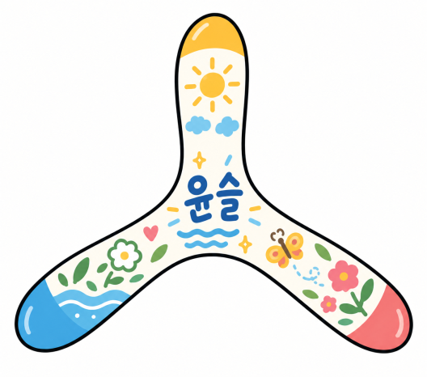 |
| |
【활동1】 한글을 잇Go! 【활동2】 우리말을 잇Go! 【활동3】 마음을 잇Go! |
평가 계획 | 평가내용 | 척도 | 채점 기준 | 평가방법 |
|---|---|---|---|---|
한글과 순우리말의 의미와 가치를 이해하고, 순우리말을 활용하여 자신의 생각을 표현할 수 있는가? | 매우 잘함 | 한글과 순우리말의 의미와 가치를 이해하고, 순우리말의 뜻에 맞는 문장을 만들어 생각을 표현할 수 있다. | 관찰법 | |
잘함 | 한글과 순우리말의 의미를 이해하고, 순우리말의 뜻에 맞는 문장을 만들어 표현할 수 있다 | |||
보통 | 한글과 순우리말의 의미를 부분적으로 이해하고, 도움을 받아 순우리말을 활용하여 문장을 만들 수 있다. | |||
노력 요함 | 한글과 순우리말의 의미를 이해하거나 순우리말을 활용하여 표현하는 데 도움이 필요하다 | |||
이주배경학생 평가 시 유의점 | 이주배경학생의 한국어 능력이 평가에 영향을 미치지 않도록 하며, 그림·낱말 카드·또래의 도움 등을 활용하여 순우리말의 의미 이해와 활동 참여, 생각의 표현 과정을 중심으로 평가한다. | |||
3차시 학생 활동지 · xplore 탐구하기 · 실력
낱말 카드와 뜻 카드를 잘라 짝을 찾아봅시다.
나뭇잎이나 나비 따위가 가볍게 계속 날아다니는 모양
마음이 매우 서운하고 허전한 모양
담겨 있던 물건이 갑자기 쏟아지는 소리
물에 젖거나 물기가 서려 있는 모습이 가지런하다
어린아이가 탈 없이 잘 놀며 자라는 모양
꽃이나 잎이 시들다
조금도 흐리지 않고 아주 밝고 똑똑한 모양
비교적 작은 것들이 나란히 있는 모양
언제나, 한결같이, 꼭 그렇게
작은 새가 가볍게 날아오르는 소리
믿음성이 있다, 믿을 만하다
여럿이 한창 함께 일할 때 우러나오는 힘
3차시 학생 활동지 · xplore 탐구하기 · 마음 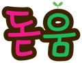
팔랑팔랑, 허우룩, 와그르르, 함초롬하다, 도담도담, 이울다, 또랑또랑, 나래, 쪼로니, 또바기, 포롱거리다, 미쁘다, 운김, 윤슬, 온누리, 다솜, 소담, 온새미로
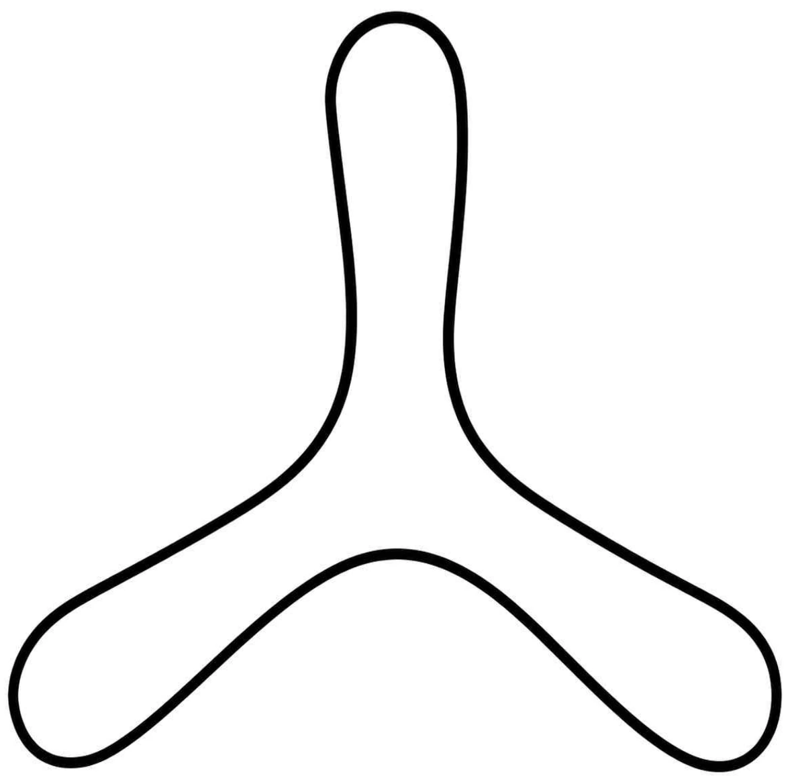
2학년 프로젝트 교수·학습 과정안 | ||||||||||||
|---|---|---|---|---|---|---|---|---|---|---|---|---|
융합과목 | 통합(슬생) | 대 상 | 2학년 | 프로젝트 단계 | xplore (탐구하기) | |||||||
프로젝트 | 마음을 잇는 인물 탐구, 세상을 잇는 나의 미래(4/8) | |||||||||||
성취기준 | [2슬03-03] 관심 있는 대상의 과거와 현재를 살펴보고 미래를 상상한다. | |||||||||||
학습목표 | 인물의 과거 물건으로 미래의 삶을 상상해 표현할 수 있다. | |||||||||||
수업전략 | 수업모형 | 이야기 모형 | 교과 역량 | 지금-여기-우리 삶을 살아가는 힘 | ||||||||
다문화 주도성 |
| |||||||||||
☑ | ☑ | ☐ | ☑ | |||||||||
| 단계(시간) | 학습요소 | 교수·학습 활동 | 자료(▶) 및 유의점(☞) |
|---|---|---|---|
| 이야기 읽기 (5′) | 동기유발 | ▣ 학습동기 유발 ◦ 물건과 인물 연결하기 ∙ 물건을 통해 그 물건의 주인이 누구인지 맞추어 봅시다. ∙ 이 물건은 누구의 물건일까요? ∙어떤 물건을 통해 그 인물을 떠올려 볼 수 있을까요? | ▶ 프레젠테이션 |
| 공부할 문제 파악 | ▣ 공부할 문제 확인 ♣ 인물의 과거 물건으로 미래의 삶을 상상해 봅시다. | ||
| 이야기 하기 (30′) | 과거 물건 으로 세종 대왕 삶 알아보기 | ▣ 【활동1】 과거의 세종대왕 삶 알아보기 ◦ 세종대왕 방의 과거 물건 살펴보기 ∙ 세종대왕 방의 모습을 살펴봅시다. ∙ 세종대왕 방에는 어떤 과거의 물건이 있습니까? ∙세종대왕 방에 물건들은 어디에 사용됩니까? ∙세종대왕 물건들로 세종대왕이 어떤 인물인 것 같습니까? | ▶ 활동지 ☞ 과거 인물의 물건을 통해 그 인물이 삶에서 추구한 소중한 의미와 가치를 깨닫게 한다. |
| 세종대왕의 영향 알아하기 | ▣ 【활동2】 현재에서 세종대왕 영향 알아보기 ◦ 세종대왕으로 변화한 현재의 삶 말하기 ∙ ‘만일에~~게임’을 해 봅시다. ∙ 만일에~~, 세종대왕이 한글을 창제하지 않았더라면 지금 우리는 어땠을까요? | ▶ (열린 질문) ‘만일에~~ 게임’은 ‘만일에~~’로 시작하는 질문에 답을 하는 게임이다. | |
| 세종대왕미래 삶을 상상하기 | ▣ 【활동3】 미래에서 세종대왕 삶 상상하기 ◦ 미래 세종대왕의 삶 상상해 표현하기 ∙ 타임머신으로 미래에 간 세종대왕의 방을 상상해 봅시다. ∙ 세종대왕 미래 방에는 어떤 용도의 미래 물건이 있습니까? ∙ 세종대왕 물건들로 세종대왕은 어떤 인물인 것 같습니까? ∙ 세종대왕의 미래 삶은 어떠했을까요? | ▶ 활동지 | |
| 이야기 맺기 (5′) | 학습내용 정리하기 | ▣ 학습내용 정리 ◦ 배운 내용과 느낀 점 이야기하기 ∙ 물건을 통해 알아본 세종대왕에 대해 말해 봅시다. ∙ 과거와 미래를 비교하여 인물과 물건에 대해 변하는 것과 변하지 않은 것을 말해 봅시다. | ☞ 시간에 따라 변하는 물건과 변하지 않는 인물의 가치 추구를 생각해 보게 한다. |
▣ 차시 예고 ♣ 인물의 한 말을 알고 나의 명언을 표현해 봅시다. |
대상 | 2학년 | 교과서 | 인물 56~57쪽 | |||||||||||
|---|---|---|---|---|---|---|---|---|---|---|---|---|---|---|
프로젝트 | 마음 싹, 꿈 싹! 세상을 바꾸는 이야기(5/8) | nite (협력하기) | ||||||||||||
본시 성취기준 | [2바03-03] 여러 인물의 삶을 통해 공동체성을 기른다. [2즐03-03] 전통문화를 새롭게 표현한다. | 본시 관련교과 | 통합(바생) 국어 | |||||||||||
학습목표 | 인물이 한 말을 알고, 나의 명언을 표현할 수 있다. | |||||||||||||
수업 모형 | 이야기 모형 | 교과 역량 | 지금-여기-우리 삶을 살아가는 힘 | |||||||||||
수업전략 | 수업 의도 | - 학생들이 인물의 말을 통해 인물이 살아온 삶을 이해해 보고, 나와 비슷한 상황을 먼저 겪은 인물, 가치관이 비슷한 인물 등을 살펴보면서 나는 어떻게 살아갈 것인지 생각해 볼 수 있도록 수업을 개발하였다. - 인물의 말에 담긴 의미와 지혜를 자신의 삶과도 연결할 수 있도록 이야기 나누며 내 삶에 필요한 명언을 직접 표현하고 발표해 봄으로써 미래의 내 모습을 그려나갈 수 있도록 한다. | ||||||||||||
다문화 주도성 |
| |||||||||||||
☑ | ☑ | ☑ | ☑ | |||||||||||
이주배경학생 지도계획 | - 동기유발에서 이주배경학생 2명이 성장한 나라 중국과 인도 위인의 명언을 퀴즈로 내봄으로써 모든 학생들의 흥미를 유발하고 다문화 감수성을 높일 수 있도록 한다. - 나만의 명언 표현하기를 할 때 다양한 문화를 포용하는 자세로 개성 있게 표현할 수 있도록 독려하며 또래 선생님을 활용한다. | |||||||||||||
| 단계(시간) | 학습요소 | 교수·학습 활동 | 자료(▶) 및 유의점(☞) |
|---|---|---|---|
| 이야기 열기 (5′) | 동기유발 | ▣ 학습동기 유발 ◦ 명대사 알아맞히기 놀이하기 ∙ 명대사를 보고 누가 한 말인지 알아맞혀 봅시다. - 중국 공자, 인도 간디, 겨울왕국, 김연아, 장원영 등 ∙ 그 인물은 왜, 어떤 상황에서 그 말을 했을까요? - 인물의 말은 인물의 삶과 관련이 있습니다. | ▶ 프레젠테이션 ☞ 이주배경학생이 성장한 나라인 중국과 인도의 위인, 유명인, 애니메이션 등에 등장한 인물의 대사를 제시하여 흥미를 유발한다. |
| 공부할 문제 파악 | ▣ 공부할 문제 확인 ♣ 인물이 한 말을 알고, 나의 명언을 표현해 봅시다. | ||
| 학습활동 안내 | ▣ 학습활동 안내 【활동1】 인물이 남긴 말 알기 【활동2】 나의 명언 표현하기 【활동3】 명언 발표하기 | ||
| 이야기 하기 (30′) | 인물이 남긴 말 알기 | ▣ 【활동1】 인물이 남긴 말 알기 ◦ 명언 살펴보기 ∙ 세종대왕이 한 말을 살펴봅시다. 세종대왕은 왜 이런 말을 했을까요? - 책의 중요성을 신하들에게 알려주고 싶었기 때문입니다. ∙ 신사임당이 한 말은 어떤 의미일까요? - 고운 말을 사용해야 한다는 의미인 것 같습니다. ∙ 이순신이 한 말은 어떤 의미일까요? - 모든 일에 신중해야 한다는 의미인 것 같습니다. | ▶ 프레젠테이션 ☞ 학생들이 인물이 남긴 말로부터 상상력을 발휘할 수 있도록 2학년 수준에 맞게 인물이 살아온 삶의 이야기를 단편들을 중심으로 들려준다. |
| 단계(시간) | 학습요소 | 교수·학습 활동 | 자료(▶) 및 유의점(☞) |
|---|---|---|---|
| 명언 표현하기 | ▣ 【활동2】 나의 명언 표현하기 ◦ 꾸밈 글씨로 명언 표현하기 ∙ 꾸밈 글씨로 명언을 표현해 봅시다. ① 마음에 드는 명언을 정한다. ② 명언의 내용을 나에게 하는 말로 바꾸어 본다. 예) 나는 당당한 00초 학생이다. 침착하게 거북이 같이 꾸준히 행동하라. 등 ③ 내용이 잘 드러나도록 글씨를 크게 쓴다. ④ 내용과 어울리는 그림을 그려 꾸민다. | ▶ 활동지, 사인펜, 색연필, 필기도구 등 ☞ 명언을 나에게 하는 말로 바꿀 때는 나는 어떤 삶을 살고 싶은지 등을 생각해 볼 수 있도록 질문한다. | |
| 명언 발표하기 | ▣ 【활동3】 명언 발표하기 ◦ 명언 발표하기 ∙ 자신의 명언 내용을 발표해 봅시다. ∙ 친구들의 발표를 듣고 칭찬해 볼까요? - OO이는 명언을 선택한 이유를 잘 설명해 주었어요. - OO이가 중요한 낱말은 크고 잘 보이는 글씨로 꾸민 점을 칭찬해 주고 싶어요. - OO이가 명언을 멋지게 바꿔서 저도 같이 실천하고 싶어요. | ▶ 활동지, 실물화상기 ☞ 다양한 의견이 나올 수 있도록 허용적인 분위기를 조성한다. | |
| 이야기 맺기 (5′) | 학습내용 정리 | ▣ 학습내용 정리 ◦ 소감 이야기 나누기 ∙ 오늘 수업에서 알게 된 점이나 느낀 점을 이야기해 볼까요? - 여러 인물의 삶과 그때 했던 말의 의미들을 알게 되었습니다. - 앞으로 내가 쓴 명언을 꼭 지키면서 생활해야겠습니다. | ▶ 프레젠테이션 |
| 차시 예고 | ▣ 차시 예고 ♣ 옛이야기를 읽고 목소리 연극을 해 봅시다. |
판서 | 16. 인물이 남긴 말 | ||
|---|---|---|---|
♣ 인물이 한 말을 알고, 나의 명언을 표현해 봅시다. | 꾸밈 글씨 예시 |
| |
【활동1】 인물이 남긴 말 알기 【활동2】 나의 명언 표현하기 【활동3】 명언 발표하기 |
평가 계획 | 평가내용 | 척도 | 채점 기준 | 평가방법 |
|---|---|---|---|---|
인물이 우리에게 해준 말을 조사하고 이를 이용해 글자를 꾸밀 수 있는가? | 매우 잘함 | 인물이 우리에게 해준 말을 조사하고 이를 이용해 예쁘게 글자를 꾸미며 그 말의 의미를 이해한다. | 프로젝트 | |
잘함 | 인물이 우리에게 해준 말을 조사하고 이를 이용해 글자를 잘 꾸밀 수 있다. | |||
보통 | 인물이 우리에게 해준 말을 조사하고 이를 이용해 글자를 어느 정도 꾸밀 수 있다. | |||
노력 요함 | 인물이 우리에게 해 준 말이 있음을 안다. | |||
이주배경학생 평가 시 유의점 | 이주배경학생이 글자를 꾸미는 데 필요한 정보 수집을 위해 교사 및 동료들이 협력할 수 있도록 하며 모국에 대한 사전 지식은 문화 전문가 역할 등 다문화 수용성 측면에서 긍정적으로 반영한다. | |||
5차시 학생 활동지 · nite 협력하기 · 실력
2학년 프로젝트 교수·학습 과정안 | ||||||||||||
|---|---|---|---|---|---|---|---|---|---|---|---|---|
융합과목 | 국어, 통합(슬생) | 대 상 | 2학년 | 프로젝트 단계 | nite (탐구하기) | |||||||
프로젝트 | 마음을 잇는 인물 탐구, 세상을 잇는 나의 미래(6/8) | |||||||||||
성취기준 | [2국05-03] 작품 속 인물의 모습, 행동, 마음을 상상하여 시, 노래, 이야기, 그림 등으로 표현한다. | |||||||||||
학습목표 | 인물의 말을 실감 나게 표현하며 목소리 연극을 할 수 있다. | |||||||||||
수업전략 | 수업모형 | 역할 수행 학습 모형 | 교과 역량 | 의사소통 역량 | ||||||||
다문화 주도성 |
| |||||||||||
☐ | ☑ | ☐ | ☑ | |||||||||
| 단계(시간) | 학습요소 | 교수·학습 활동 | 자료(▶) 및 유의점(☞) |
|---|---|---|---|
| 상황 설정하기 (5′) | 동기유발 | ▣ 학습동기 유발 ◦ 세종대왕에 대해 떠오르는 내용 발표하기 ∙ 세종대왕이 사람들을 위해 했던 일은 무엇인가요? ∙ 세종대왕은 왜 사람들의 생활을 편리하게 해주고 싶었을까요? ∙ 세종대왕과 함께 노력한 인물에는 누가 있었나요? | ▶ 프레젠테이션 ☞ 세종대왕에 대해 공부한 내용을 떠올려볼 수 있게 한다. |
| 공부할 문제 파악 | ▣ 공부할 문제 확인 ♣ 인물의 말을 실감 나게 표현하며 목소리 연극을 해 봅시다. | ||
| 준비 및 연습하기 (15′) | 목소리 연극으로 표현할 부분을 선택하여 대본 쓰기 | ▣ 【활동1】 역할극 준비하기 ◦ 목소리 연극으로 하고 싶은 장면을 정하며 모둠 친구들과 대본 쓰기 ∙ 세종대왕에 대한 각각의 이야기를 살펴봅시다. ∙ 인물에게 어떤 일이 일어났나요? ∙ 인물은 어떤 말이나 행동을 했나요? ◦ 역할 정하고 목소리 연극 연습하기 ∙ 친구와 함께 역할을 바꾸어 연습하며 여러 인물의 마음을 살펴봅시다. ∙ 어울리는 목소리를 찾을 때까지 충분히 연습해봅시다. | ▶ 활동지, 역할 이름표 ☞ 이야기를 대본으로 바꾸는 과정을 안내한다. ☞ 역할을 바꾸어 연습하며 여러 인물을 경험하도록 한다. |
| 실연하기 (15‘) | 친구들 앞에서 실감 나게 목소리 연극하기 | ▣ 【활동2】 역할극 발표하기 ◦ 친구들 앞에서 실감 나게 목소리 연극하기 ∙ 내가 맡은 역할을 이름표로 표시해 봅시다. ∙ 세종대왕의 삶을 상상하면서, 실감 나게 대사를 표현해 봅시다. ∙ 역할극을 관람하여 나는 세종대왕에게서 어떤 모습을 배우고 싶은지 생각해 봅시다. | ▶ 활동지, ☞ 인물의 마음에 어긋나지 않는 범위 내에서 대사를 융통성 있게 바꿀 수 있도록 허용한다. ☞ 평가(칭찬) 관점을 제시하여 의미 있는 활동이 될 수 있게 한다. |
| 평가하기 (5′) | 학습내용 정리하기 | ▣ 학습내용 정리 ◦ 배운 내용과 느낀 점 이야기하기 ∙ 이야기 속 인물은 어떤 마음이었을까요? ∙ 인물의 말을 실감 나게 표현한 친구는 누구인가요? ∙ 가장 기억에 남는 장면은 무엇인가요? | |
▣ 차시 예고 ♣ 인물에게 마음을 전하는 글을 써 봅시다. |
6차시 학생 활동지 · nite 협력하기 · 실력
등장인물 세종대왕, 최만리, 신숙주, 돌쇠
최만리 (화난 목소리로) 임금님! 왜 잘 쓰고 있는 한자를 두고 이상한 글자를 만드십니까? 글자는 원래 어려워야 멋진 것입니다! 신숙주 (고개를 저으며) 최만리 대감! 한자는 너무 어려워서 글을 모르는 불쌍한 백성들이 고생하고 있잖아요! 세종대왕 (다정하게) 맞다. 백성들이 얼마나 힘겨운지 직접 들어보자꾸나. 돌쇠야, 들어오거라!
돌쇠 (슬픈 표정으로 들어와 엎드린다) 임금님, 흐엉~ 제 이야기 좀 들어주세요! 세종대왕 (따뜻하게) 돌쇠야, 무슨 안 좋은 일이 있었느냐? 돌쇠 (울먹이며) 제가 글자를 몰라서, 나쁜 사람이 적어놓은 가짜 종이에 도장을 찍었습니다. 그래서 제 소중한 밭을 빼앗겼어요. 글만 알았어도 안 속았을 텐데요!
최만리 (당황하며) 흠... 그건 불쌍하지만, 글자는 공부 많이 한 사람만 배우는 게 맞습니다! 신숙주 (큰 소리로) 아닙니다! 글자는 누구나 쉽게 읽고 쓸 수 있어야 합니다! 세종대왕 (웃으며 종이를 펼친다) 돌쇠야, 이 글자를 보거라. 이건 우리가 말할 때 입 모양을 보고 만든 쉬운 글자란다!
신숙주 (돌쇠 옆으로 가서 가리키며) 돌쇠야, 이건 'ㄱ'이야. 여기에 'ㅏ'를 붙이면 뭐가 될까? 돌쇠 (눈을 반짝이며) 'ㄱ'... 'ㅏ'... '가'? 와! 임금님! 제가 방금 글자를 읽었어요! 진짜 진짜 쉽네요! 최만리 (깜짝 놀라며) 아니, 글을 한 번도 안 배운 돌쇠가 바로 읽다니! 이게 정말 가능합니까?
세종대왕 (자랑스럽게) 그래! 어린아이부터 할머니까지 단 하루 만에 배울 수 있는 글자란다! 신숙주 (손을 모으며) 백성을 사랑하는 마음으로 만든 바른 소리, '훈민정음'입니다! 최만리 (고개를 숙이며) 임금님, 백성을 사랑하는 그 마음을 몰라보았습니다. 참 멋진 글자입니다!
돌쇠 (신나서 춤추며) 야호! 이제 저도 글을 배워서 편지도 쓰고, 억울하게 속지도 않을 거예요! 임금님 감사합니다! 세종대왕 (모두를 보며 환하게 웃는다) 허허허! 내 백성들이 이 글자로 마음껏 이야기하고 행복해지면 좋겠구나!
등장인물 세종대왕, 장영실, 농부, 신하
농부 (울상을 지으며) 임금님, 큰일 났습니다! 비가 너무 많이 와서 밭이 다 물에 잠겼어요! 세종대왕 (걱정스러운 표정으로) 저런! 땅이 얼마나 젖었나 흙을 파보았느냐? 농부 (땅을 파는 흉내를 내며) 파보긴 했는데... 흙마다 젖는 게 달라서 비가 얼마나 온 건지 알 수가 없습니다. 농사를 망칠까 봐 너무 무섭습니다!
세종대왕 (장영실을 보며) 내 백성들이 이렇게 힘들어하는구나. 영실아, 비의 양을 정확하게 알아낼 좋은 방법이 없겠느냐? 장영실 (손가락을 튕기며) 임금님! 땅을 파는 대신, 비가 올 때 그릇을 밖에 두고 빗물을 받아서 그 깊이를 재면 어떨까요? 신하 (동그라미를 그리며) 오! 그거 정말 좋은 생각이네요! 제가 당장 마을마다 다니면서 밥그릇, 국그릇에 빗물을 받으라고 하겠습니다!
세종대왕 (고개를 저으며) 허허, 신하야 잠깐! 그릇 크기가 다 다르면, 어느 마을에 비가 더 많이 왔는지 비교할 수 없지 않겠느냐? 장영실 (고개를 끄덕이며) 맞습니다! 그래서 나라에서 똑같은 크기의 동그란 '쇠통'을 만들어 전국에 똑같이 나누어 주어야 합니다! 농부 (눈을 반짝이며) 똑같은 쇠통이요? 거기에 빗물이 차오르면 길이를 재는 건가요?
장영실 (웃으며) 그렇지요! 쇠통에 모인 빗물의 높이를 재면 "오늘은 비가 요만큼 왔구나! " 하고 정확히 알 수 있습니다. 신하 (박수를 치며) 와! 정말 똑똑하십니다! 그러면 비가 적게 온 마을에 물을 나누어 줄 수도 있겠어요! 세종대왕 (자랑스러워하며) 훌륭하다! 이 빗물을 재는 그릇의 이름을 '측우기'라고 부르자! 백성들이 농사를 잘 지을 수 있도록 전국에 빨리 나누어 주거라!
농부 (기뻐서 춤을 추며) 야호! 이제 측우기 덕분에 비가 얼마나 올지 알고 농사를 잘 지을 수 있겠어요! 임금님, 장영실님 최고입니다! 신하 (신나서 만세를 부르며) 백성을 생각하는 임금님과 장영실님 만세! 세종대왕 (모두를 보며 환하게 웃는다) 허허허! 측우기 덕분에 우리 백성들이 맛있는 곡식을 많이 수확하면 좋겠구나!
등장인물 세종대왕, 박연, 신하, 백성
박연 (돌 악기를 '띵~ 띵~' 두드리며) 임금님! 드디어 우리나라 예쁜 돌로 만든 악기 '편경'을 완성했습니다! 신하 (손뼉을 치며) 와! 딱딱한 돌에서 이렇게 고운 소리가 나다니 정말 신기합니다! 세종대왕 (귀를 쫑긋 세우고 듣다가) 참으로 맑은 소리구나! ...그런데 박연아, 저기 세 번째 돌 소리가 아주 살짝 높지 않으냐?
박연 (깜짝 놀라 돌을 살펴보며) 어머나! 돌을 덜 깎아낸 부분이 있었네요! 임금님은 귀가 정말 밝으십니다! 백성 (아이) (궁금해서 힐끔거리며) 저... 임금님! 이렇게 멋진 음악은 임금님만 듣는 건가요? 저희도 듣고 싶어요! 세종대왕 (따뜻하게 웃으며) 허허, 아니다! 음악은 백성들 모두가 다 함께 들을 때 가장 행복한 법이란다.
신하 하지만 임금님! 옛날 악보는 너무 어려워서 신나는 음악을 외우기가 힘듭니다. 세종대왕 (네모 상자가 그려진 종이를 보여주며) 걱정 마라! 내가 박자를 한눈에 쉽게 볼 수 있게 네모 모양의 새 악보(정간보)를 만들었단다! 박연 (악보를 보고 감탄하며) 와! 네모 상자만 보면 박자를 바로 알 수 있겠네요! 정말 쉽습니다!
세종대왕 그래! 이 악보와 편경으로 우리 백성들과 다 함께 즐길 음악을 연주해 보거라! 신하 임금님! 그 멋진 음악의 이름은 무엇인가요? 세종대왕 백성과 함께 즐거움을 나누자는 뜻으로 '여민락'이라고 부를 것이다!
백성 (아이) (기뻐서 펄쩍 펄쩍 뛰며) 야호! 이제 마을 사람들과 다 같이 신나게 노래하고 춤출 수 있겠어요! 임금님 감사합니다! 박연, 신하, 백성 (다 함께 손을 들며) 백성을 사랑하는 임금님, 만세! 세종대왕 (모두를 보며 환하게 웃는다) 허허허! 온 나라에 아름다운 음악 소리가 널리 퍼지면 좋겠구나!
대상 | 2학년 | 교과서 | 국어 124~125쪽 | |||||||||||
|---|---|---|---|---|---|---|---|---|---|---|---|---|---|---|
프로젝트 | 마음 싹, 꿈 싹! 세상을 바꾸는 이야기(7/8) | ake (표현하기) | ||||||||||||
본시 성취기준 | [2국05-03] 작품 속 인물의 모습, 행동, 마음을 상상하여 시, 노래, 이야기, 그림 등으로 표현한다. | 본시 관련교과 | 국어 통합(슬생) | |||||||||||
학습목표 | 인물에게 고마운 마음과 나의 다짐을 담아, 하고 싶은 말을 편지로 쓸 수 있다. | |||||||||||||
수업 모형 | 반응 중심 학습 모형 | 교과 역량 | 의사소통 역량 | |||||||||||
수업전략 | 수업 의도 | - 공동체를 위해 헌신한 인물의 삶을 탐구하고, 그 이야기가 오늘날 나 자신의 삶에 주는 의미를 찾아볼 수 있도록 한다. 나와 다른 사람을 이해하고 화합하고자 했던 세종대왕의 태도에서 존중과 배려의 가치를 배우고, 공동체의 변화에 유연하면서도 능동적으로 대처하는 힘을 키우는 데 도움을 주고자 한다. - 전 차시에서 인물의 대사와 상황을 직접 연기하며 형성된 실감 나는 감정을 바탕으로 내가 속한 공동체 속에서 발휘하고 싶은 선한 영향력과 미래 삶의 다짐을 글로 쓸 수 있도록 수업을 계획 및 실천한다. | ||||||||||||
다문화 주도성 |
| |||||||||||||
☐ | ☐ | ☑ | ☑ | |||||||||||
이주배경학생 지도계획 | - 본 학급은 비이주배경학생으로 구성되어 있으므로 내가 속한 공동체와 나아가 세계 속의 타인을 존중하고 포용하는 태도를 가질 수 있도록 돕는다. - 인물의 삶과 내 삶을 주체적으로 연결 짓고, 공동체에 발휘할 영향력과 미래 다짐을 스스로 생각하여 글로 표현할 수 있도록 지도한다. | |||||||||||||
| 단계(시간) | 학습요소 | 교수·학습 활동 | 자료(▶) 및 유의점(☞) |
|---|---|---|---|
| 반응 준비하기 (5′) | 동기유발 | ▣ 학습동기 유발 ◦ 목소리 연극 장면 떠올리기 ∙ 세종대왕은 글을 몰라 답답해하는 백성들을 보셨을 때 어떤 마음이 들었을까요? - 백성들이 불쌍해서 도와주고 싶었을 것 같습니다. ∙ 어려운 일이 생겼을 때 세종대왕은 어떻게 했나요? - 포기하지 않고 백성들을 도와주기 위해 노력했습니다. | ▶ 동영상 ☞ 목소리 연극에서 연기했던 장면을 영상으로 보여주며 당시의 상황을 떠올려 볼 수 있게 한다. |
| 공부할 문제 파악 | ▣ 공부할 문제 확인 ♣ 고마운 마음과 나의 다짐을 담은 편지를 써 봅시다. | ||
| 학습활동 안내 | ▣ 학습활동 안내 【활동1】 내 마음속 보물 【활동2】 생각 더하기 【활동3】 세종대왕님께 | ||
| 반응 형성하기 (10′) | 세종대왕의 삶에 대한 나의 생각을 떠올려보고, 내 삶에서의 다짐 정하기 | ▣ 【활동1】 내 마음속 보물 ◦ 세종대왕의 삶에서 나만의 보물찾기 ∙ 세종대왕이 한 일 중에 가장 고마운 것은 무엇인가요? - 백성들을 위해 한글을 만든 것입니다. ∙ 세종대왕의 태도 중 가장 닮고 싶은 모습은 무엇인가요? - 끝까지 포기하지 않는 마음입니다. ∙ 세종대왕처럼 나도 우리 반 또는 가족을 위해 할 수 있는 행동에는 무엇이 있을까요? - 친구의 이야기를 잘 들어줍니다. | ▶ 프레젠테이션, 학습지 ☞ 세종대왕의 삶에서 배울 수 있는 태도를 찾아보고, 내 삶에서 어떻게 실천하면 좋을지 생각해볼 수 있도록 안내한다. |
| 단계(시간) | 학습요소 | 교수·학습 활동 | 자료(▶) 및 유의점(☞) |
|---|---|---|---|
| 반응 명료화하기 (10′) | 서로의 생각을 공유하고 어떤 내용의 편지를 쓸지 계획하기 | ▣ 【활동2】 생각 더하기 ◦ 친구와 생각 공유하기 ∙ 세종대왕의 어떤 모습이 가장 고마웠는지 짝과 함께 이야기를 나누어 봅시다. ∙ 나는 어떤 약속(다짐)을 했는지 짝과 함께 이야기를 나누어 봅시다. ◦ 편지로 쓸 내용 계획하기 ∙ 짝과 이야기를 나누면서 ‘나도 편지에 저 내용을 써야지!’하고 떠오른 내용이 있나요? ∙ 편지에 꼭 들어가야 하는 내용은 무엇인가요? - 받는 사람, 세종대왕에게 고마운 이유, 나의 약속, 보낸 사람, 쓴 날짜입니다. | ▶ 프레젠테이션 ☞ 자신의 생각을 짝과 공유하며 타인의 관점을 이해하고, 부족한 내 생각을 보완하며 편지의 내용을 구상할 수 있도록 돕는다. |
| 반응 심화하기 (15′) | 세종대왕에게 하고 싶은 말을 편지 쓰기 | ▣ 【활동3】 세종대왕님께 ◦ 세종대왕에게 고마운 마음과 나의 약속을 담아 편지 쓰기 ∙ 세종대왕에게 나의 마음을 담아 편지를 써 봅시다. ∙ 내가 쓴 편지를 친구들 앞에서 발표해 봅시다. ∙ 친구는 세종대왕에게 어떤 약속(다짐)을 했는지 귀 기울여 친구의 발표를 들어봅시다. | ▶ 편지지 ☞ 약속(다짐)을 구체적으로 쓸 수 있도록 안내하고, 문장 완성이 어려운 학생을 위해 예시 문장을 제공하여 활동에 참여할 수 있게 한다. |
| 학습내용 정리 | ▣ 학습내용 정리 ◦ 배운 내용 정리하기 ∙ 오늘 편지를 쓰면서 세종대왕님의 어떤 마음이 가장 기억에 남았나요? - 어려운 일도 지혜롭게 이겨내는 마음입니다. ∙ 나는 어떤 약속(다짐)을 편지에 써 보았나요? - 도움이 필요한 친구에게 먼저 다가가겠다고 약속했습니다. | ▶ 세종대왕 마음 우체통 ☞ 교실 내 편지 게시를 통해 학생이 자신이 한 약속을 일상에서 매일 되새기며 주도적으로 실천할 수 있도록 돕는다. | |
| 차시 예고 | ▣ 차시 예고 ♣ 나의 꿈을 발표해 봅시다. |
판서 | 4. 마음을 전해요 | ||
|---|---|---|---|
♣ 고마운 마음과 나의 다짐을 담은 편지를 써 봅시다. | <편지에 들어갈 보물>
| ||
【활동1】 내 마음속 보물 【활동2】 생각 더하기 【활동3】 세종대왕님께 |
평가 계획 | 평가내용 | 척도 | 채점 기준 | 평가방법 |
|---|---|---|---|---|
인물에게 고마운 마음과 나의 다짐을 담아 편지를 쓸 수 있는가? | 매우 잘함 | 세종대왕이 백성을 위해 한 일을 떠올리며 고마운 마음과 나의 약속(다짐)이 잘 드러나게 편지를 쓴다. | 논술 | |
잘함 | 세종대왕이 백성을 위해 한 일을 떠올리며 고마운 마음이 드러나게 편지를 쓴다. | |||
보통 | 세종대왕에게 하고 싶은 말을 썼으나, 고마운 이유나 나의 생각 표현을 어려워한다. | |||
노력 요함 | 세종대왕에게 하고 싶은 말을 편지로 쓰는 것을 어려워하여 교사의 도움이 필요하다. | |||
이주배경학생 평가 시 유의점 | 인물의 마음을 잘 파악하여 타당하게 편지를 썼는지 평가한다. 만약 쓰기를 어려워한다면 맞춤법에 지나치게 중점을 두지 않고 자유롭게 자신의 생각을 표현해볼 수 있도록 안내한다. | |||
7차시 학생 활동지 · ake 표현하기 · 강점
2학년 프로젝트 교수·학습 과정안 | ||||||||||||
|---|---|---|---|---|---|---|---|---|---|---|---|---|
융합과목 | 창체, 통합(바생) | 대 상 | 2학년 | 프로젝트 단계 | ake(표현하기) | |||||||
프로젝트 | 마음을 잇는 인물 탐구, 세상을 잇는 나의 미래(8/8) | |||||||||||
성취기준 | [2바01-02] 나를 이해하고 존중하며 생활한다. | |||||||||||
학습목표 | 나의 꿈을 발표할 수 있다. | |||||||||||
수업전략 | 수업모형 | 문제해결 학습 모형 | 교과 역량 | 문제해결 역량 | ||||||||
다문화 주도성 |
| |||||||||||
☑ | ☑ | ☐ | ☑ | |||||||||
| 단계(시간) | 학습요소 | 교수·학습 활동 | 자료(▶) 및 유의점(☞) |
|---|---|---|---|
| 문제 찾기 (5′) | 동기유발 | ▣ 학습동기 유발 ◦ ‘소중한 꿈’ 노래 부르기 ∙ 공부할 내용이 무엇일지 생각하며 ‘소중한 꿈’ 노래를 불러 봅시다. | ▶ 프레젠테이션. 동영상 ☞ 학습 문제를 스스로 찾을 수 있도록 허용적인 분위기를 조성한다. |
| 공부할 문제 파악 | ▣ 공부할 문제 확인 ♣ 나의 꿈을 발표해 봅시다. | ||
| 문제 해결을 위한 계획 세우기 (10′) | 나의 자랑거리 표현하기 | ▣ 【활동1】 나의 자랑 발표 ◦ 내가 잘하거나 좋아하는 나의 자랑 발표하기 ∙ 내가 잘할 수 있거나 좋아하는 일 등 나의 자랑을 발표해 봅시다. ∙ 작은 일이어도 괜찮으니 내가 잘하거나 좋아하는 일을 자유롭게 발표해 봅시다. | ▶ 활동지 ☞ 다양한 의견이 나올 수 있도록 독려한다. |
| 해결을 위한 과제 수행하기 (20‘) | 나의 꿈 발표하기 | ▣ 【활동2】 나의 꿈 발표 ◦ 나의 꿈 발표하기 ∙ 미리 그려놓은 ‘나의 꿈’에 대하여 한 명씩 나와서 뚫어 놓은 얼굴 부분에 내 얼굴을 맞추어 발표해 봅시다. ∙ 내가 역사에 남는 인물이 된다면, 나는 어떤 말을 남기고 싶은지 함께 생각해 봅시다. ∙ 친구들이 미래에 어떤 모습의 어른이 되었는지 자세히 살펴보며 친구의 발표를 들어봅시다. | ▶ 동영상, ‘나의 꿈’ 그림 자료 ☞ 학생들 현재 모습이 장래 꿈꾸는 직업으로 바뀌는 사진을 짧은 영상으로 띄운다. |
| 문제 해결 과정 성찰하기 (5′) | 학습내용 정리하기 | ▣ 학습내용 정리 ◦ 활동 되돌아보기 ∙ 친구들 발표를 들으며 느낀 점을 발표해 봅시다. ∙ 수업을 마치며 ‘나의 꿈’ 노래를 불러 봅시다. ◦ 프로젝트 활동 소감 나누기 ∙ 세종대왕에 대해 기억나는 내용을 발표해 봅시다. ∙ 미래의 나는 어떤 사람이 되고 싶은지 생각해 봅시다. | |
▣ 차시 예고 ♣ 나의 꿈을 이루기 위해 노력할 점을 알아봅시다. |
교과 융합 프로젝트 수업
| 차시 | 교과 | 학습 주제 | 교과 역량 |
|---|---|---|---|
| 1 | 국어 | 낱말의 종류 알아보기 | 의사소통 역량 |
| 2 | 사회 | 서로 다른 문화의 좋은 점을 찾아 칭찬하기 | 문제해결 역량 |
| 3 | 도덕 | 사람마다 느끼는 감정이 다름을 이해하고, 타인의 감정에 공감하기 | 의사소통 역량 |
| 4 | 국어 | 세계의 직업을 살펴보고 나의 꿈 발표하기 | 협력적 소통 역량 문화 향유역량 |
| 5 | 도덕 | 착한 마법 물건 소개하기 | 공동체·대인 관계 역량 |
| 6 | 도덕 | 다양한 문화 배경을 가진 친구에게 도움이 되는 인공지능 로봇 설계하기 | 공동체 역량 |
| 7 | 사회 | 누구나 편리하게 사용할 수 있는 물건으로 바꾸어 보기 | 문제해결력 및 의사결정력, 창의적 사고력 |
| 8 | 도덕 | 다른 문화적 배경을 가진 사람의 마음을 생각하고, 공감하기 위한 실천 약속 발표해 보기 | 공동체 역량 |
설계 의도본 프로젝트는 세계 여러 나라의 다양한 문화와 생활 모습을 탐구하며 서로의 다름을 이해하고 존중하며 더불어 살아가는 방법을 찾아보도록 구성하였다. 학생들은 다양한 문화의 특징을 살펴보고, 다양한 문화의 확산으로 나타나는 문제와 이를 해결하기 위한 노력을 알아본다. 또한 경험과 배경에 따라 생각과 감정이 다를 수 있음을 이해하고 다른 사람의 입장에서 생각해 보도록 하였다. 나아가 서로 다른 사람의 불편함에 공감하고 모두가 편리하고 행복하게 살아갈 수 있는 방법을 함께 생각하며, ‘다름을 존중하기 위한 우리의 행동 약속’을 정하여 일상 속에서 실천하도록 구성하였다.
| 국어 2. 유창하게 읽고 발표해요 | [4국01-05] 목적과 주제에 알맞게 자료를 정리하여 자신감 있게 발표한다. |
|---|---|
| 도덕 4. 인공지능 로봇 연구소에 가요! | [4도02-02] 친구 사이의 배려에 대한 올바른 이해를 바탕으로 일상생활에서 배려에 기반한 도덕적 관계를 맺을 수 있는 방안을 탐색한다. |
| 도덕 5. 너와 나의 공감 | [4도02-03] 공감의 태도가 필요한 이유를 이해하고 도덕적 상상력을 바탕으로 대상과 상황에 따라 감정을 나누는 방법을 탐구하여 실천한다. |
| 사회 1. 사회 변화와 다양한 문화 | [4사03-02] 우리 사회에 다양한 문화가 확산되면서 나타나는 긍정적 효과와 문제를 분석하고, 나와 다른 사람이나 집단의 문화를 존중하는 태도를 기른다. |
| 국어 5. 사전으로 여는 세상 | [4국04-02] 단어를 분류하고 국어사전을 활용하여 능동적인 국어 활동을 한다. |
| 단계 · 프로그램 | 차시 | 주요 학습 내용 | 관련 교과 | 학습 자료 |
|---|---|---|---|---|
| et준비하기 |
1 |
| 국어 | 낱말카드 활동지 |
| 2 |
| 국어 사회 | 프레젠테이션 칭찬의자 | |
| xplore탐구하기 | 3 |
| 도덕 사회 | 프레젠테이션 활동지 붙임쪽지 |
| 4 |
| 국어 사회 | 프레젠테이션 태블릿PC | |
| nite협력하기 | 5 |
| 도덕 국어 | 프레젠테이션 활동지 |
| 6 |
| 도덕 | 프레젠테이션 활동지 | |
| ake표현하기 |
7 |
| 사회 | 프레젠테이션 감각스티커 활동지 |
| 8 |
| 도덕 | 프레젠테이션 그림책 골든벨판 |
et①②ake⑦⑧| 평가내용 | 평가방법 | 매우 잘함 | 잘함 | 보통 | 노력 요함 |
|---|---|---|---|---|---|
| ①종류에 따라 낱말 분류하기[4국04-02] | 구술 관찰법 | 분류 기준에 따라 모든 낱말을 스스로 분류함 | 제시된 낱말 대부분을 기준에 맞게 분류함 | 낱말의 종류를 알지만 일부를 잘못 분류함 | 교사의 도움을 받아 낱말의 종류를 구분함 |
| ②다른 문화의 좋은 점 칭찬하기[4국01-05] [4사03-02] | 구술 관찰법 | 근거를 들어 좋은 점을 자신 있게 발표함 | 다른 문화의 좋은 점을 찾아 자신 있게 발표함 | 다른 문화에서 발견한 좋은 점을 발표함 | 도움을 받아 다른 문화의 좋은 점을 발표함 |
| ③감정 표현과 공감의 말 전하기[4도02-03] | 구술 | 감정을 풍부하게 표현하고 친구 입장에서 공감함 | 상황과 감정을 연결하고 공감의 말을 전함 | 감정을 말하고 도움을 받아 공감의 말을 전함 | 친구의 감정을 이해하고 공감하는 데 미숙함 |
| ④관심 있는 나라와 미래의 꿈 발표[4국01-05] | 구술 관찰법 | 나라의 특징과 꿈을 연결해 발표하고 경청함 | 나라와 꿈을 발표하고 친구의 이야기를 경청함 | 관심 있는 나라와 미래의 꿈을 간단히 발표함 | 도움을 받아 꿈을 발표하고 듣는 태도를 연습함 |
| ⑤착한 마법 물건 발표하기[4국01-05] | 구술 | 알맞은 음량과 바른 자세로 자신 있게 발표함 | 정돈된 태도와 안정된 목소리로 발표함 | 작은 목소리로 주저하며 마법 물건을 발표함 | 교사의 안내나 말의 도움을 받아 발표함 |
| ⑥친구를 돕는 인공지능 로봇 설계[4도02-02] | 프로젝트 | 어려움을 해결할 로봇 기능을 창의적으로 설계함 | 친구의 어려움에 알맞은 도움 기능을 설계함 | 도움 기능을 설계하나 어려움과의 관련이 약함 | 어려움과 로봇 기능을 찾는 데 도움이 필요함 |
| ⑦감각 스위치로 물건 개선하기[4사03-02] | 서술 | 감각 스위치로 누구나 쓰기 쉽게 새롭게 개선함 | 감각 스위치로 모두가 쓰기 편하게 개선함 | 안내에 따라 감각 스위치를 골라 개선에 참여함 | 감각 스위치를 쓰려면 꾸준한 안내가 필요함 |
| ⑧다름을 존중하는 실천 약속 발표[4도02-03] | 구술 관찰법 | 상대를 헤아려 구체적인 존중 약속을 발표함 | 문화 차이를 고려해 존중할 행동을 정해 발표함 | 다름을 존중할 간단한 실천 약속을 정해 발표함 | 도움을 받아 존중을 위한 약속을 정하고 발표함 |
| 이주배경학생 평가 시 유의점 | |||||
①살았던 나라에서 접한 낱말을 떠올려 말하도록 한다. |
②문화의 우열을 따지지 않고 좋은 점을 칭찬 카드에 담게 한다. |
||||
③상황과 감정의 예를 보여 주고 모두 공감 쪽지를 받게 한다. |
④낯선 직업을 소개해도 존중하는 태도로 듣게 한다. |
||||
⑤짝과 발표를 미리 연습하고 서로 의견을 나누게 한다. |
⑥핵심 낱말과 활동 방법을 그림과 예시로 안내한다. |
||||
⑦감각 스티커와 화살표로 개선할 부분을 표시하게 한다. |
⑧개인의 경험을 나라 전체의 특징으로 일반화하지 않게 한다. |
||||
대상 | 3학년 | 교과서 | 국어 220~224쪽 | |||||||||||
|---|---|---|---|---|---|---|---|---|---|---|---|---|---|---|
프로젝트 | 다(多)름에 마음을 더(+)하다(1/8) | et (준비하기) | ||||||||||||
본시 성취기준 | [4국04-02] 단어를 분류하고 국어사전을 활용하여 능동적인 국어 활동을 한다. | 본시 관련교과 | 국어 | |||||||||||
학습목표 | 낱말의 종류를 알 수 있다. | |||||||||||||
수업 모형 | 문제 해결 학습 모형 | 교과 역량 | 의사소통 역량 | |||||||||||
수업전략 | 수업 의도 | - 학생들에게 친숙한 '자두' 캐릭터의 세계 여행 스토리와 여행 가방 속 낱말카드로 구체적인 시각자료를 활용하여 학습의 흥미와 호기심을 유발하고자 하였다. 자두가 모아온 세계의 낱말을 분류하는 과정에서 낱말의 종류를 익힐 뿐만 아니라, 세계 여러 나라의 다양한 문화와 생활 모습을 자연스럽게 이해하도록 구성하였다. 이를 통해 단위 차시의 학습 목표를 달성하고, 나아가 서로의 다름을 존중하고 공감하는 배움의 재미와 의미를 느끼도록 설계하였다. | ||||||||||||
다문화 주도성 |
| |||||||||||||
☑ | ☑ | ☐ | ☐ | |||||||||||
이주배경학생 지도계획 | - 다문화 관련 낱말 탐색 과정에서 학생이 거주했던 국가의 경험을 친근하게 표현하도록 유도하여 긍정적 자아감과 유대감을 얻을 수 있도록 지도한다. | |||||||||||||
| 단계(시간) | 학습요소 | 교수·학습 활동 | 자료(▶) 및 유의점(☞) |
|---|---|---|---|
| 문제 확인 하기 (5′) | 동기유발 | ▣ 학습동기 유발 ◦ 자두의 고민을 듣고, 이야기 나누기 ∙ 자두의 고민은 무엇인가요? - 세계 여행을 하며 모은 낱말들을 정리해야 합니다. ∙ 자두를 어떻게 도와주면 좋을까요? - 낱말을 종류별로 정리하는 방법을 알려줍니다. | ▶ 프레젠테이션 ☞ 다양한 나라와 문화에 대한 낱말을 자유롭게 이야기하고, 서로의 생각을 존중하며 경청하도록 한다. |
| 공부할 문제 파악 | ▣ 공부할 문제 확인 ♣ 낱말의 종류를 알아봅시다. | ||
| 학습활동 안내 | ▣ 학습활동 안내 【활동1】 낱말 살펴보기 【활동2】 낱말의 종류 알기 【활동3】 세계 속 낱말 보물찾기 | ☞ 학습활동의 흐름을 안내하여 학생들의 이해를 돕는다. | |
| 문제 해결 방법 찾기 (7′) | 낱말 확인하기 | ▣ 【활동1】 낱말 살펴보기 ◦ 자두의 세계 여행 가방에서 낱말카드 꺼내 읽어보기 ∙ 낱말카드를 함께 읽어봅시다. - 에펠탑, 튤립, 춤추다, 걷다, 신나다, 화려하다 등 ∙ 이 낱말들을 어떻게 나누어 볼 수 있을까요? - 비슷한 것끼리 묶어서 나눌 수 있습니다. 등 ◦ 낱말을 나누는 기준 생각해 보기 ∙ 낱말을 나누려면 무엇이 필요할까요? - 나누는 기준을 정해야 합니다. | ▶ 자두의 세계여행가방, 낱말카드 |
| 단계(시간) | 학습요소 | 교수·학습 활동 | 자료(▶) 및 유의점(☞) |
|---|---|---|---|
| 문제 해결 하기 (10′) | 낱말의 종류 알아보기 | ▣ 【활동2】 낱말의 종류 알기 ◦ 낱말들의 공통점 찾아보기 ∙ 이 낱말들의 공통점은 무엇일까요? - ‘에펠탑, 튤립’은 이름을 나타냅니다. ‘춤추다, 걷다’는 움직임을 나타냅니다. ‘신나다, 화려하다’는 성질이나 상태를 나타냅니다. ◦ 낱말의 종류 알아보기 ∙ 낱말은 나타내는 것에 따라 어떻게 나눌 수 있을까요? - 사물의 이름을 나타내는 낱말, 움직임을 나타내는 낱말, 성질이나 상태를 나타내는 낱말로 분류할 수 있습니다. | ▶ 낱말카드, 마인드맵 구조도 ☞ 다양한 관점에서 낱말의 공통점을 탐색해 볼 수 있도록 허용적 분위기를 조성한다. |
| 일반화 하기 (13′) | 낱말을 종류에 따라 나누기 | ▣ 【활동3】 세계 속 낱말 보물찾기 ◦ 세계 여러 나라의 사진 속에 숨겨진 낱말 카드 찾기 ∙ 모둠별로 세계 속 낱말 보물찾기를 시작해 봅시다. 모둠별로 정해진 구역으로 이동하여 사진과 낱말 카드를 살펴보고, 모둠원 한 명씩 낱말카드 한 장을 선택한다. 선택한 낱말이 어떤 종류인지 모둠 친구들과 의논한 후 자리로 돌아온다. ◦ 찾아온 낱말 발표하기 ∙ 찾아온 낱말이 어떤 종류인지 발표해 봅시다. - 각자 찾은 낱말과 그 종류를 큰 소리로 발표한다. | ▶ 세계 여러나라 사진, 낱말 카드, 활동지 ☞ 모둠원과 서로 협력하여 활동 규칙을 잘 지킬 수 있도록 안내한다. ☞ 친구들의 발표를 바른 자세로 경청하도록 지도한다. |
| 정리하기 (5′) | 학습내용 정리 | ▣ 학습내용 정리 ◦ 배운 내용 정리하기 및 생각 나누기 ∙ 여러분이 세계 여행을 간다면 어떤 종류의 낱말을 모아오고 싶은지 까닭과 함께 발표해 봅시다. - 저는 이름을 나타내는 낱말을 모아오고 싶습니다. 왜냐하면 세계 여러 나라의 음식 이름을 알아보고 싶기 때문입니다. | ☞ 친구들이 발표하는 다양한 나라와 낱말을 통해 서로의 다름을 이해하고 존중하는 태도를 기르도록 한다. |
| 차시 예고 | ▣ 차시 예고 ♣ 서로 다른 문화의 좋은 점을 찾아 칭찬해 봅시다. |
판서 | 5. 사전으로 여는 세상 | ||
|---|---|---|---|
♣ 낱말의 종류를 알아봅시다. | 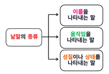 |
| |
【활동1】 낱말 살펴보기 【활동2】 낱말 종류 알기 【활동3】 세계 속 낱말 보물찾기 |
평가 계획 | 평가내용 | 척도 | 채점 기준 | 평가방법 |
|---|---|---|---|---|
낱말의 종류를 알고, 낱말을 정확하게 분류할 수 있는가? | 매우 잘함 | 낱말의 종류를 정확히 이해하고, 모든 낱말을 분류 기준에 따라 스스로 완벽하게 분류할 수 있다. | 구술, 관찰법 | |
잘함 | 낱말의 종류를 이해하고, 제시된 낱말 대부분을 분류 기준에 맞게 스스로 분류할 수 있다. | |||
보통 | 낱말의 종류를 이해하고 있으나, 일부 낱말을 분류할 때 다소 실수가 있다. | |||
노력 요함 | 낱말의 종류를 이해하고 분류하는 데 어려움이 있어 교사의 도움이 필요하다. | |||
이주배경학생 평가 시 유의점 | 본 학급의 이주배경학생은 한국어 이해도 및 교과 학습 능력이 우수하므로, 일반 학생과 동일한 기준을 적용하여 평가한다. | |||
1차시 학생 활동지 · et 준비하기 · 마음
제가 찾은 낱말은 위에서 고른 종류의 낱말입니다.
3학년 프로젝트 교수·학습 과정안 | ||||||||||||
|---|---|---|---|---|---|---|---|---|---|---|---|---|
융합과목 | 사회, 국어 | 대 상 | 3학년 | 프로젝트 단계 | et (준비하기) | |||||||
프로젝트 | 다(多)름에 마음을 더(+)하다(2/8) | |||||||||||
성취기준 | [4국01-05] 목적과 주제에 알맞게 자료를 정리하여 자신감 있게 발표한다. [4사03-02] 우리 사회에 다양한 문화가 확산되면서 나타나는 긍정적 효과와 문제를 분석하고, 나와 다른 사람이나 집단의 문화를 존중하는 태도를 기른다. | |||||||||||
학습목표 | 서로 다른 문화의 좋은 점을 찾아 칭찬할 수 있다. | |||||||||||
수업전략 | 수업모형 | 문제해결 학습 모형 | 교과 역량 | 문제해결 역량 | ||||||||
다문화 주도성 |
| |||||||||||
☑ | ☐ | ☐ | ☑ | |||||||||
| 단계(시간) | 학습요소 | 교수·학습 활동 | 자료(▶) 및 유의점(☞) |
|---|---|---|---|
| 문제 확인하기 (5′) | 동기유발 | ▣ 학습동기 유발 ◦ 그림책 내용을 떠올리며, 학습할 내용 생각해보기 - 「칭찬 먹으러 가요」에서 주인공은 왜 칭찬을 먹으러 갔나요? - 우리가 다른 나라의 문화에 칭찬을 전한다면 어떤 마음이 들까요? | ▶ 프레젠테이션 ☞ 칭찬의 대상을 세계 여러 나라의 문화로 확장하여 연결한다. |
| 공부할 문제 파악 | ▣ 공부할 문제 확인 ♣ 서로 다른 문화의 좋은 점을 찾아 칭찬해 봅시다. | ||
| 문제해결방법 탐색하기 (10′) | 칭찬거리 탐색하기 | ▣ 【활동1】 칭찬의 눈을 키워요 ◦ 다양한 칭찬거리 떠올리기 ∙ 우리가 다른 사람이나 새로운 문화를 접할 때, 어떤 점을칭찬해 주면 좋을까요? | ▶ 활동지 ☞ 삶의 지혜나 정성 등 다양한 칭찬거리를 떠올릴 수 있도록 한다. |
| 문제 해결하기 (10′) | 다른 나라의 좋은 점 발견하기 | ▣ 【활동2】 다름 속 좋은 점을 찾아요 ◦ 여러 나라의 문화와 생활 모습을 살펴보고 서로 다른 점 알아보기 ∙ 이 사진 속 사람들은 어떤 모습으로 생활하고 있나요? ◦ 서로 다른 문화에서 좋은 점 찾아보기 ∙ 이 문화에서 칭찬하고 싶은 점이 무엇인가요? | ▶ 프레젠테이션 ☞ 문화의 차이를 좋고 나쁨으로 판단하지 않고 각 문화의 좋은 점을 발견하는데 초점을 두도록 한다. |
| 일반화 하기 (10′) | 칭찬하기 | ▣ 【활동3】 칭찬으로 마음을 나눠요 ◦ 서로 다른 문화의 좋은 점을 찾아 대화짝과 칭찬하는 말로 표현하기 ∙ 이 문화의 좋은 점을 칭찬한다면 어떻게 말할 수 있을까요? ◦ 서로 다른 문화를 존중하기 위한 마음가짐과 행동 알아보기 ∙ 친구가 찾아낸 문화의 좋은 점 중 인상 깊은 것은 무엇인가요? ∙ 서로 다른 문화를 존중하기 위해 우리는 어떻게 행동하면 좋을까요? | ▶ 칭찬카드 ☞ 친구의 생각을 존중하며 서로 다른 문화를 긍정적으로 바라보는 태도를 기를 수 있도록 지도한다. |
| 평가 하기 (5′) | 학습내용 정리하기 | ▣ 학습내용 정리 ◦ 배운 내용과 느낀 점 이야기하기 ∙ 오늘 공부하면서 알게 된 점이나 느낀 점을 말해 봅시다. | |
▣ 차시 예고 ♣ 사람마다 느끼는 감정이 다름을 이해하고, 타인의 감정에 공감하여 봅시다. |
3학년 프로젝트 교수·학습 과정안 | ||||||||||||
|---|---|---|---|---|---|---|---|---|---|---|---|---|
융합과목 | 도덕, 사회 | 대 상 | 3학년 | 프로젝트 단계 | xplore (탐구하기) | |||||||
프로젝트 | 다(多)름에 마음을 더(+)하다(3/8) | |||||||||||
성취기준 | [4도02-03] 공감의 태도가 필요한 이유를 이해하고 도덕적 상상력을 바탕으로 대상과 상황에 따라 감정을 나누는 방법을 탐구하여 실천한다. | |||||||||||
학습목표 | 사람마다 느끼는 감정이 다름을 이해하고, 타인의 감정에 공감할 수 있다. | |||||||||||
수업전략 | 수업모형 | 가치 명료화 수업 모형 | 교과 역량 | 의사소통 역량 | ||||||||
다문화 주도성 |
| |||||||||||
☑ | ☐ | ☐ | ☑ | |||||||||
| 단계(시간) | 학습요소 | 교수·학습 활동 | 자료(▶) 및 유의점(☞) |
|---|---|---|---|
| 도덕적 문제사태의 제시 (5′) | 동기유발 | ▣ 학습동기 유발 ◦ 여러 가지 상황 살펴보기 ∙ 여러 가지 상황을 보고, 상황에 대한 자신의 생각을 이야기해 봅시다. ∙ 같은 상황을 보고 같은 생각이 들었나요? | ▶ 프레젠테이션 |
| 공부할 문제 파악 | ▣ 공부할 문제 확인 ♣ 사람마다 느끼는 감정이 다름을 이해하고, 타인의 감정에 공감하여 봅시다. | ||
| 선택 (10′) | 감정 표현하기 | ▣ 【활동1】 나의 감정 알아보기 ◦ 자기 감정 설명서 만들기 ∙ 자신의 성격에 대해 적어 봅시다. ∙ 기쁨, 화남, 슬픔, 즐거움 등의 여러 감정을 어떤 상황에서 느끼는지 적어 봅시다. ∙ 내가 감정을 느낄 때 어떤 행동을 하는지 적어 봅시다. | ▶ 활동지 ☞ 자신의 감정과 상황을 잘 연결 지을 수 있도록 예시를 제시한다. |
| 존중 (10‘) | 감정 공유하기 | ▣ 【활동2】 친구의 감정 알아보기 ◦ 자신과 친구의 감정을 비교하기 ∙ 친구들의 발표를 들어보고 같은 상황에서 나와 친구는 어떤 감정을 느꼈는지 비교하여 봅시다. ∙ 친구의 감정 설명서에서 인상적인 내용을 이야기해 봅시다. | |
| 행동 (10‘) | 감정 공감하기 | ▣ 【활동3】 친구의 감정 공감하기 ◦ 나와 다른 친구의 감정에 공감하기 ∙ 친구에 대해 새롭게 알게 된 점, 친구에게 궁금한 점, 전해주고 싶은 말이 있으면 붙임쪽지에 적어 친구의 감정 설명서에 붙여 봅시다. ∙ 새로 알게 된 친구의 감정을 이야기해 봅시다. | ▶ 붙임쪽지 ☞ 특정 학생에게만 포스트잇을 붙이거나 소외되는 학생이 없도록 한다. |
| 정리 (5′) | 학습내용 정리하기 | ▣ 학습내용 정리 ◦ 배운 내용과 느낀 점 이야기하기 ∙ 친구의 감정에 대해 새롭게 알게 된 점을 이야기해 봅시다. ∙ 친구에게 어떻게 공감해 주면 좋을지 이야기해 봅시다. | |
▣ 차시 예고 ♣ 세계의 직업을 살펴보고 나의 꿈을 발표해 봅시다. |
3학년 프로젝트 교수·학습 과정안 | ||||||||||||
|---|---|---|---|---|---|---|---|---|---|---|---|---|
융합과목 | 국어, 사회 | 대 상 | 3학년 | 프로젝트 단계 | xplore (탐구하기) | |||||||
프로젝트 | 다름에 마음을 더하다(4/8) | |||||||||||
성취기준 | [4국01-05] 목적과 주제에 알맞게 자료를 정리하여 자신감 있게 발표한다. | |||||||||||
학습목표 | 세계 여러나라의 다양한 직업을 살펴보고, 관심 있는 나라와 나의 미래 꿈을 유창하게 발표할 수 있다. | |||||||||||
수업전략 | 수업모형 | 문제해결 학습 모형 | 교과 역량 | 협력적 소통 역량, 문화 향유역량 | ||||||||
다문화 주도성 |
| |||||||||||
☑ | ☑ | ☑ | ☐ | |||||||||
| 단계(시간) | 학습요소 | 교수·학습 활동 | 자료(▶) 및 유의점(☞) |
|---|---|---|---|
| 문제 확인하기 (5′) | 동기유발 | ▣ 학습동기 유발 ◦ 세계의 이색직업 사진을 소개한 자료 살펴보기 ∙ 우리나라에는 없고 이 나라에만 있는 직업을 살펴봅시다. | ▶ 프레젠테이션 |
| 공부할 문제 파악 | ▣ 공부할 문제 확인 ♣ 세계의 직업을 살펴보고 나의 꿈을 발표해 봅시다. | ||
| 문제해결방법 탐색하기 (5′) | 나라와 문화에 따른 직업 알아보기 | ▣ 【활동1】 세계 속 다양한 직업 알아보기 ◦ 환경과 문화에 따른 각국의 특별한 직업 알아보기 ∙ 이탈리아(수로-곤돌리에), 네팔(설산-셰르파), 남극(빙하-야외 안전 전문가)의 하는 일과 필요한 까닭을 알아봅시다. ◦ 환경과 문화가 다르면 직업의 모습도 다양해짐을 이해하기 | ▶ 프레젠테이션 ☞ 지리적 환경과 문화적 필요성이 직업으로 연결됨을 직관적으로 알도록 안내한다. |
| 문제 해결하기 (25‘) | 미래 직업 구상하기 | ▣ 【활동2】 세계 속 나의 꿈 카드 만들기 ◦ 관심 있는 나라와 희망직업 탐색하기 ∙ 나라별 특징(자연, 동물, 축제 등)을 검색해 보고, 그 나라에서 할 수 있는 멋진 미래 직업을 골라 봅시다. ◦ 세계 속 나의 미래 직업 소개자료 만들기 ∙ 그림과 글로 관심 국가 및 미래 직업 소개 자료를 만들어 봅시다. | ▶ 태블릿PC ☞ 어린이 진로 사이트를 활용하여 시각 자료를 탐색하고, 학생 스스로 직업에 대한 상상력과 생각을 확장할 수 있도록 지도한다. |
| 미래 직업발표하기 | ▣ 【활동3】 세계 속 나의 꿈 카드 뽐내기 ◦ 나의 미래 직업 카드 소개하기 ∙ 선택한 나라의 특징과 그곳에서 펼칠 나의 꿈을 친구들에게 소개해 봅시다. ◦ 친구들의 다양한 꿈 경청하고 응원하기 ∙ 친구들이 발표하는 나라와 직업에 귀 기울여 듣고, 칭찬과 응원의 말을 나누어 봅시다. | ▶ 활동지 ☞ 생소한 국가나 낯선 직업을 발표하더라도 편견이나 장난 섞인 반응을 보이지 않고, 다양성을 존중하며 긍정적으로 수용하는 태도(글로컬 시민성)를 기르도록 안내한다. | |
| 평가 하기 (5′) | 학습내용 정리하기 | ▣ 학습내용 정리 ◦ 배운 내용과 느낀 점 이야기하기 ∙ 세계 여러나라의 직업을 알아보며 새롭게 알게 된 점을 나누어 봅시다. ∙ 세계를 무대로 꿈을 펼치기 위한 나의 다짐을 발표해 봅시다. | |
▣ 차시 예고 ♣ 착한 마법 물건을 소개해 봅시다. |
3학년 프로젝트 교수·학습 과정안 | ||||||||||||
|---|---|---|---|---|---|---|---|---|---|---|---|---|
융합과목 | 도덕, 국어 | 대 상 | 3학년 | 프로젝트 단계 | nite (협력하기) | |||||||
프로젝트 | 다(多)름에 마음을 더(+)하다(5/8) | |||||||||||
성취기준 | [4국01-05] 목적과 주제에 알맞게 자료를 정리하여 자신감 있게 발표한다. | |||||||||||
학습목표 | 착한 마법 물건을 소개하는 글을 유창하게 읽을 수 있다. | |||||||||||
수업전략 | 수업모형 | 창의성 계발 학습 모형 | 교과 역량 | 공동체·대인 관계 역량 | ||||||||
다문화 주도성 |
| |||||||||||
☑ | ☐ | ☐ | ☑ | |||||||||
| 단계(시간) | 학습요소 | 교수·학습 활동 | 자료(▶) 및 유의점(☞) |
|---|---|---|---|
| 문제 확인하기 (5′) | 동기유발 | ▣ 학습동기 유발 ◦ 이웃의 편지 읽기 ∙ 우리 이웃에게는 어떤 불편함이 있습니까? | ▶ 이웃의 편지 |
| 공부할 문제 파악 | ▣ 공부할 문제 확인 ♣ 착한 마법 물건을 소개해 봅시다. | ||
| 아이디어 생성 (10′) | 아이디어 구상 | ▣ 【활동1】 소개글 쓰기 ◦ 착한 마법 물건 구상하기 ∙ 이웃은 불편한 상황에서 어떤 마음이 들까요? ∙ 이웃의 불편함을 덜어주는 마법 물건을 상상해 볼까요? ∙ 이웃의 불편함을 덜어 줄 수 있는 마법 물건을 소개하는 글을 써 봅시다. | ▶ 프레젠테이션,활동지 ☞ 교사의 시연을 통해 착한 마법물건의 기능과 배려의 마음을 보여줌으로써 학생들이 자신의 아이디어를 구체적으로 상상할 수 있도록 한다. |
| 아이디어 선택 (5‘) | 발표 준비 | ▣ 【활동2】 소개글 읽기 연습하기 ◦ 유창하게 읽는 방법 알아보기 ∙ 유창하게 읽는 방법을 확인해 봅시다. ∙ 내가 쓴 글을 짝에게 자신있게 읽어 봅시다. | ☞ 짝과 상호점검 후 피드백을 통해 발표에 자신감을 갖도록 한다. |
| 아이디어 적용 (15‘) | 발표 및 공유 | ▣ 【활동3】 소개글 발표하기 ◦ 이웃의 불편함을 떠올리며 착한 마법물건 소개하기 ∙ 이웃에게 도움이 되는 착한 마법 물건을 자신있게 발표해 봅시다. | ☞ 다양한 문화와 배경을 가진 이웃의 삶을 존중하고 물건에 담긴 배려와 존중의 가치를 인식하도록 한다. |
| 평가 하기 (5′) | 학습내용 정리하기 | ▣ 학습내용 정리 ◦ 배운 내용과 느낀 점 이야기하기 ∙ 오늘 공부하면서 알게 된 점을 말해 봅시다. | |
▣ 차시 예고 ♣ 다양한 문화 배경을 가진 친구에게 도움이 되는 인공지능 로봇을 설계하여 봅시다. |
대상 | 3학년 | 교과서 | 도덕 62~65쪽 | |||||||||||
|---|---|---|---|---|---|---|---|---|---|---|---|---|---|---|
프로젝트 | 다(多)름에 마음을 더(+)하다(6/8) | nite (협력하기) | ||||||||||||
본시 성취기준 | [4도02-02] 친구 사이의 배려에 대한 올바른 이해를 바탕으로 일상생활에서 배려에 기반한 도덕적 관계를 맺을 수 있는 방안을 탐색한다. | 본시 관련교과 | 도덕 | |||||||||||
학습목표 | 다양한 문화 배경을 가진 친구에게 도움이 되는 인공지능 로봇을 설계할 수 있다. | |||||||||||||
수업 모형 | 집단 탐구 수업 모형 | 교과 역량 | 공동체 역량 | |||||||||||
수업전략 | 수업 의도 | - 본 수업은 외국에서 온 친구가 한국의 학교나 가정생활에서 겪을 수 있는 어려움을 생각하며 친구의 입장을 이해하는 데 목적이 있다. 이를 통해 외국에서 온 친구에게 필요한 도움과 배려가 무엇인지 구체적으로 생각해 보도록 한다. 나아가 친구를 돕기 위해 필요한 기능을 인공지능 로봇의 관점에서 상상하고 창의적으로 표현하도록 한다. 이러한 활동을 통해 서로 다른 환경에서 생활해 온 친구를 존중하고 배려하며 함께 생활하려는 태도를 기르고자 한다. | ||||||||||||
다문화 주도성 |
| |||||||||||||
☑ | ☐ | ☐ | ☑ | |||||||||||
이주배경학생 지도계획 | - 수업에서 사용하는 핵심 어휘와 활동 방법을 그림, 예시 자료 등을 활용하여 쉽게 이해할 수 있도록 안내한다. 모둠 활동에서는 또래 친구들과 자연스럽게 상호작용할 수 있도록 역할을 부여하고, 학생이 자신의 경험과 생각을 부담 없이 표현할 수 있도록 충분한 시간과 다양한 표현 방법을 제공한다. | |||||||||||||
| 단계(시간) | 학습요소 | 교수·학습 활동 | 자료(▶) 및 유의점(☞) |
|---|---|---|---|
| 탐구 문제의 설정 (5′) | 동기유발 | ▣ 학습동기 유발 ◦ 낯선 환경을 상상해보기 ∙ 만약 여러분이 오늘 처음으로 다른 나라의 학교에 간다면 어떤 기분이 들까요? - 말이 통하지 않아 겁이 날 것 같습니다. ∙ 우리 반에 다른 나라에서 친구가 온다면 어떤 도움이 필요할지 생각하여 봅시다. | ▶ 프레젠테이션 ☞ 학생들이 낯선 상황에서의 불편함, 걱정, 두려움, 외로움 등의 감정을 생각해 볼 수 있도록 한다. |
| 공부할 문제 파악 | ▣ 공부할 문제 확인 ♣ 다양한 문화 배경을 가진 친구에게 도움이 되는 인공지능 로봇을 설계하여 봅시다. | ||
| 학습활동 안내 | ▣ 학습활동 안내 【활동1】 도움 요소 찾아보기 【활동2】 인공지능 로봇 설계하기 【활동3】 인공지능 로봇 소개하기 | ||
| 탐구 계획의 수립 (7′) | 문제상황파악하기 | ▣ 【활동1】 도움 요소 찾아보기 ◦ 학교 및 생활 속 어려움을 찾아보기 ∙ 외국에서 온 친구가 학교에서 어떤 도움이 필요할까요? - 교실이 어디에 있는지 몰라 알려줘야 해요. - 학급 규칙을 모르니 알려줘야 해요. ∙ 학교가 끝나고 집에 가서도 어려운 점이 있을까요? - 마트에 갔을 때 이름이나 가격표를 읽기 어려워서 사고 싶은 것을 사기 힘들 것 같아요. ◦ 나와 친구의 생각을 비교하기 ∙ 우리가 생각하는 어려움과 외국에서 온 친구가 느끼는 어려움을 비교하여 봅시다. | ▶ 프레젠테이션 ☞ 언어, 문화, 교우 관계 등의 상황을 제시하여 어려움을 다양한 측면에서 생각해 볼 수 있도록 한다. ☞ 학급 내 이주배경학생의 어려움을 미리 조사하여 친구들의 생각과 비교해 볼 수 있도록 한다. |
| 단계(시간) | 학습요소 | 교수·학습 활동 | 자료(▶) 및 유의점(☞) |
|---|---|---|---|
| 탐구의 실시 (13′) | 해결 방안설계하기 | ▣ 【활동2】 인공지능 로봇 설계하기 ◦ 인공지능 로봇에게 필요한 기능 찾아보기 ∙ 한국어를 잘 모르는 친구에게 수업 시간에 필요한 인공지능 로봇의 기능에는 무엇이 있을까요? - 교과서에 있는 한국어를 원하는 언어로 번역해주는 기능이 있으면 좋을 것 같습니다. ∙ 급식실에서는 어떤 도움이 있으면 좋을까요? - 급식 식판을 스캔하여 음식을 먹는 방법을 안내해 주는 기능이 있으면 좋을 것 같습니다. ◦ 어려움을 해결하기 위한 인공지능 로봇 설계하기 ∙ 외국에서 처음 온 친구의 어려움을 해결하기 위한 기능을 넣어 인공지능 로봇을 만들어 봅시다. | ▶ 활동지 ☞ 인공지능 로봇의 기능을 단순히 나열하는 것보다 어떤 어려움을 해결하기 위한 기능인지 생각하도록 한다. |
| 탐구 결과 발표 및 논의 (10′) | 해결 방안공유하기 | ▣ 【활동3】 인공지능 로봇 소개하기 ◦ 외국에서 처음 온 친구를 도울 인공지능 로봇 발표하기 ∙ 외국에서 처음 온 친구를 돕기 위한 인공지능 로봇을 소개하여 봅시다. ∙ 모둠에서 제작한 인공지능 로봇을 살펴보고 잘한 점, 개선해야 할 점을 공유하여 봅시다. - 모둠에서 설계한 인공지능 로봇을 살펴보고, 자신의 생각을 붙임쪽지에 적어 붙인다. | ▶ 붙임쪽지 ☞ 친구의 아이디어를 평가하거나 놀리지 않고 서로의 생각을 존중하도록 한다. |
| 종합 정리 및 평가 (5′) | 학습내용 정리 | ▣ 학습내용 정리 ◦ 배운 내용 정리하기 ∙ 인공지능 로봇을 설계할 때 무엇을 먼저 생각해야 할까요? - 친구의 입장에서 먼저 생각하고, 친구에게 어떤 도움이 필요한지 먼저 생각해야 합니다. | |
| 차시 예고 | ▣ 차시 예고 ♣ 누구나 편리하게 사용할 수 있는 물건으로 바꿔 봅시다. |
판서 | 4. 인공지능 로봇 연구소에 가요! | ||
|---|---|---|---|
♣ 다양한 문화 배경을 가진 친구에게 도움이 되는 인공지능 로봇을 설계하여 봅시다. | < 외국에서 처음 온 친구의 어려움 > 언어, 문화, 교우 관계 |
| |
【활동1】 도움 요소 찾아보기 【활동2】 인공지능 로봇 설계하기 【활동3】 인공지능 로봇 소개하기 |
평가 계획 | 평가내용 | 척도 | 채점 기준 | 평가방법 |
|---|---|---|---|---|
우리나라에 처음 온 친구의 입장에서 겪을 수 있는 어려움을 생각하고, 친구에게 필요한 도움을 주는 인공지능 로봇을 설계할 수 있는가? | 매우 잘함 | 친구가 겪을 수 있는 어려움을 구체적으로 생각하고, 친구의 입장에서 필요한 도움을 찾아 이를 해결할 수 있는 AI 로봇의 기능을 창의적으로 설계한다. | 프로젝트 | |
잘함 | 친구가 겪을 수 있는 어려움을 생각하고, 친구에게 필요한 도움과 관련된 AI 로봇의 기능을 적절하게 설계한다. | |||
보통 | 친구가 겪을 수 있는 어려움이나 필요한 도움을 생각하고, AI 로봇의 기능을 설계하나 어려움과 기능의 관련성이 다소 부족하다. | |||
노력 요함 | 친구가 겪을 수 있는 어려움이나 필요한 도움을 생각하는 데 어려움이 있으며, AI 로봇의 기능을 설계하는 활동에 지속적인 도움이 필요하다. | |||
이주배경학생 평가 시 유의점 | 시각 자료와 쉬운 어휘를 활용해 수업 활동과 로봇 설계 과제를 직관적으로 이해할 수 있도록 한다. 모둠 활동 시 또래 친구들과 자연스럽게 협력할 수 있는 환경을 조성하도록 한다. | |||
6차시 학생 활동지 · nite 협력하기 · 실력
대상 | 3학년 | 교과서 | 사회 48~52쪽 | |||||||||||
|---|---|---|---|---|---|---|---|---|---|---|---|---|---|---|
프로젝트 | 다(多)름에 마음을 더(+)하다(7/8) | ake (표현하기) | ||||||||||||
본시 성취기준 | [4사03-02] 우리 사회에 다양한 문화가 확산되면서 나타나는 긍정적 효과와 문제를 분석하고, 나와 다른 사람이나 집단의 문화를 존중하는 태도를 기른다. | 본시 관련교과 | 사회 | |||||||||||
학습목표 | 누구나 편리하게 사용할 수 있는 물건으로 바꾸고 친구들과 생각을 나눌 수 있다. | |||||||||||||
수업 모형 | 문제 해결 학습 | 교과 역량 | 문제해결력 및 의사결정력, 창의적 사고력 | |||||||||||
수업전략 | 수업 의도 | - 주변 이웃이 겪는 실제 생활 속 불편한 상황을 탐색하는 것에서 출발하여 문제의식을 높이고, 감각 스위치라는 직관적인 도구를 활용하여 불편한 부분을 개선해 보는 구체적인 조작 경험을 제공한다. 또한 한국어 숙달도와 관계없이 모든 학생이 동등하게 참여할 수 있도록 직관적인 스티커 체계와 단문형 어휘 비계를 활용하여, 모든 학생이 자신의 생각을 표현하고 활동에 능동적으로 참여할 수 있도록 한다. | ||||||||||||
다문화 주도성 |
| |||||||||||||
☑ | ☐ | ☐ | ☑ | |||||||||||
이주배경학생 지도계획 | - 한국어 이해 및 표현이 서툴더라도 스티커 부착과 화살표 그리기 등 조작활동에 몰입할 수 있도록 직관적인 시각 자료를 제시한다. 학생의 한국어 수준에 맞는 맞춤형 전문가 역할을 배치하고 칭찬 스티커를 활용하여 언어적 장벽 없는 소통을 지원한다. | |||||||||||||
| 단계(시간) | 학습요소 | 교수·학습 활동 | 자료(▶) 및 유의점(☞) |
|---|---|---|---|
| 문제 확인하기 (5′) | 동기유발 | ▣ 학습동기 유발 ◦ 유니버설 디자인 알아보기 ∙ 두 젓가락 중 손의 힘이 약한 사람이라도 쉽게 이용할 수 있는 젓가락은 무엇일까요? - 고리가 있는 젓가락입니다. ∙ 누군가가 느끼는 불편함이나 차별을 그냥 지나치지 않고 누구나 사용할 수 있도록 만들어 주는 따뜻한 아이디어를 ‘유니버설 디자인’이라고 합니다. | ▶ 프레젠테이션 ☞ 학생들이 일상생활에서 쉽게 접하는 구체물을 활용하여 유니버설 디자인의 개념을 직관적이고 자연스럽게 도출하도록 지도한다. |
| 공부할 문제 파악 | ▣ 공부할 문제 확인 ♣ 누구나 편리하게 사용할 수 있는 물건으로 바꿔 봅시다. | ||
| 학습활동 안내 | ▣ 학습활동 안내 【활동1】 변신 스위치 4총사 【활동2】 스위치 릴레이 합체 【활동3】 마음 스위치 더하기 | ||
| 문제 해결방법 탐색하기 (8′) | 아이디어 구상 | ▣ 【활동1】 변신 스위치 4총사 ◦ 모두를 위한 물건으로 바꾸는 방법 알아보기 ∙ 키오스크를 이용하기 어려운 사람이 있을까요? - 시력이 안 좋은 어르신은 글씨가 잘 안 보일 것 같습니다. ∙ 글씨를 잘 보이게 하려면 어떻게 하면 좋을까요? - 글씨를 크게 만들거나 그림이나 사진을 넣습니다. ∙ 시력이 안 좋은 분들을 위한 방법을 찾아볼까요? - 음성 안내처럼 소리로 알려주면 됩니다. | ▶ 판서용 감각 스티커 ☞ 교사의 스티커를 붙이는 시연 과정에서 발문을 통해 학생들의 상상력을 자극하고, 감각 스위치를 활용한 물건 개선 방법을 자연스럽게 이해하도록 지도한다. |
| 단계(시간) | 학습요소 | 교수·학습 활동 | 자료(▶) 및 유의점(☞) |
|---|---|---|---|
| 문제 해결하기 (12′) | 아이디어 적용 | ▣ 【활동2】 스위치 릴레이 합체 ◦ 나의 마법 물건 개선하기 ∙ 내가 가진 감각 스티커로 자신이 만든 마법 물건을 모두를 위한 물건으로 개선하는 방법을 찾아봅시다. - 마법 신발에서 위험할 때 소리가 나면 좋을 것 같습니다. ∙ 감각 스티커를 붙인 후 화살표를 그리고 어떻게 편리해지는지 한 줄로 적어 주세요. - 위험할 때 소리가 납니다. ◦ 친구의 마법 물건 릴레이 합체하기 ∙ 친구의 물건을 보고 내가 맡은 감각 스티커를 붙여 주세요. 그리고 어떻게 편리해지는지 한 줄로 적어보세요. - 손잡이가 푹신해서 안전합니다. - 버튼을 크게 합니다. | ▶ 착한 마법물건 카드, 4대 감각 스티커 세트, 1분 알람 타이머 ☞ 2분 단위 순환시 물건 카드가 정체되지 않도록 명확한 소리신호를 제공한다. ☞ 글쓰기에 부담을 느끼지 않도록 정형화된 문장 틀을 제시하여 신속한 작성을 돕는다. |
| 일반화 하기 (10′) | 가치 내면화 | ▣ 【활동3】 마음 스위치 더하기 ◦ 친구들이 개선한 물건 살펴보기 ∙ 다른 친구들이 변신시킨 물건을 보고 개선한 물건에 담긴 마음을 찾아 칭찬해 봅시다. - 한국어를 모르는 사람을 배려하는 마음을 칭찬합니다. - 혼자 사는 사람도 안전하게 생활하도록 한 마음을 칭찬합니다. | ▶ 칭찬 포스트잇, 비언어 소통용 스티커 ☞ 물건을 이용할 이웃의 처지와 마음에 얼마나 깊이 공감했는지에 초점을 맞추어 칭찬하도록 지도한다. |
| 평가하기 (5′) | 학습내용 정리 | ▣ 학습내용 정리 ◦ 배운 내용 정리하기 ∙ 오늘 활동하면서 느낀 점을 말해 봅시다. - 서로 다르다고 차별하지 말아야 합니다. - 어려움을 느끼는 사람을 배려해야 합니다. | ☞ 수업 시간의 배움이 일회성 활동으로 끝나지 않도록 주변에서 유니버설 디자인이 적용된 사례를 스스로 찾아보도록 한다. |
| 차시 예고 | ▣ 차시 예고 ♣ 다른 문화적 배경을 가진 사람의 마음을 생각하고, 공감하기 위한 실천 약속을 발표해 봅시다. |
판서 | 1. 사회 변화와 다양한 문화 | ||||||||||
|---|---|---|---|---|---|---|---|---|---|---|---|
♣ 누구나 편리하게 사용할 수 있는 물건으로 바꾸어 봅시다. | 변신 스위치 4총사
|
| |||||||||
【활동1】 변신스위치 4총사 【활동2】 스위치 릴레이 합체 【활동3】 마음 스위치 더하기 |
평가 계획 | 평가내용 | 척도 | 채점 기준 | 평가방법 |
|---|---|---|---|---|
4대 감각 스위치를 활용하여 모두가 편리하게 쓸 수 있는 물건으로 바꾸었는가? | 매우 잘함 | 4대 감각 스위치를 적극 활용하여 모두가 편리하게 쓸 수 있는 물건으로 창의적으로 개선할 수 있다. | 서술 | |
잘함 | 4대 감각 스위치를 활용하여 모두가 편리하게 쓸 수 있는 물건으로 적절히 바꿀 수 있다. | |||
보통 | 교사의 안내에 따라 감각 스위치를 선택하여 물건을 개선하는 활동에 참여할 수 있다. | |||
노력 요함 | 감각 스위치를 활용해 물건을 바꾸는데 어려움을 느껴 모둠 활동시 지속적인 안내가 요구된다. | |||
이주배경학생 평가 시 유의점 | 결과물의 완성도보다 활동 2에서 자신이 맡은 스위치 전문가 역할을 주도적으로 수행했는지 그 과정에서의 참여 의지와 태도를 중심으로 관찰한다. | |||
7차시 학생 활동지 · ake 표현하기 · 강점
대상 | 3학년 | 교과서 | 도덕 78~81쪽 | |||||||||||
|---|---|---|---|---|---|---|---|---|---|---|---|---|---|---|
프로젝트 | 다(多)름에 마음을 더(+)하다(8/8) | ake (표현하기) | ||||||||||||
본시 성취기준 | [4도02-03] 공감의 태도가 필요한 이유를 이해하고, 도덕적 상상력을 바탕으로 대상과 상황에 따라 감정을 나누는 방법을 탐구하여 실천한다. | 본시 관련교과 | 도덕 | |||||||||||
학습목표 | 다른 문화적 배경을 가진 사람의 마음을 생각하고, 다름을 존중하기 위한 약속을 정하고 실천할 수 있다. | |||||||||||||
수업 모형 | 가치 탐구 수업 모형 | 교과 역량 | 공동체 역량 | |||||||||||
수업전략 | 수업 의도 | - 이전 차시에서는 세계 여러 나라의 다양한 직업을 살펴보며 환경과 문화에 따라 사람들의 삶의 모습이 다양함을 이해하였다. 본 차시에서는 같은 행동이라도 문화에 따라 다른 의미를 가질 수 있다는 사례를 통해 자신에게 익숙한 기준으로 다른 사람을 쉽게 판단하지 않도록 하고, 다른 문화적 배경을 가진 사람의 입장을 생각해 보는 경험을 제공한다. 이를 바탕으로 실제 생활에서 실천할 수 있는 구체적 우리 반의 공감 실천 약속을 함께 만든다. | ||||||||||||
다문화 주도성 |
| |||||||||||||
☑ | ☑ | ☑ | ☐ | |||||||||||
이주배경학생 지도계획 | - 문화적 차이를 특정 국가나 개인의 특징으로 일반화하지 않고, 누구나 경험과 배경에 따라 생각이 다를 수 있음을 중심으로 상호 공감하고 존중하도록 지도한다. | |||||||||||||
| 단계(시간) | 학습요소 | 교수·학습 활동 | 자료(▶) 및 유의점(☞) |
|---|---|---|---|
| 문제 인식 (5′) | 동기유발 | ▣ 학습동기 유발 ◦ 식사 예절 영상을 보고, 문화에 따라 다른 생활 모습 살펴보기 ∙ 인도 사람들의 식사 모습 중 우리와 다른 점은 무엇인가요? - 손으로 음식을 먹습니다. ∙ 우리와 다르다고 해서 틀리거나 잘못된 행동이라고 할 수 있을까요? - 문화에 따라 식사하는 방법이나 예절이 다를 수 있습니다. | ▶ 프레젠테이션, 동영상 ☞ ‘틀리다’라는 판단보다 ‘다르다’라는 관점에서 살펴보도록 한다. |
| 공부할 문제 파악 | ▣ 공부할 문제 확인 ♣ 다른 문화적 배경을 가진 사람의 마음을 생각하고, 공감하기 위한 실천 약속을 발표해 봅시다. | ||
| 학습활동 안내 | ▣ 학습활동 안내 【활동1】 문화 차이 골든벨 【활동2】 공감하며 샌드위치 먹기 【활동3】 공감 실천 약속 | ||
| 문제 해결 방법 탐색 (10′) | 식사 예절의 다양성 이해하기 | ▣ 【활동1】 문화 차이 골든벨 ◦ 세계 여러 나라의 식사 예절 알아보기 ∙ 각 나라의 식사 모습에서 우리와 다른 점을 찾아 봅시다. ∙ 문화에 따라 식사 예절은 어떻게 다를까요? - 나라마다 식사하는 방법이나 예절이 다릅니다. ◦ 문화 차이 골든벨 퀴즈 참여하기 ∙ 문제를 잘 읽고, 문화에 따른 다양한 식사 예절을 생각하며 답해 봅시다. ∙ 식사 중의 트림 소리를 잘 먹었다는 의미로 생각하는 이 나라는 어디일까요? - 사우디아라비아입니다. | ▶ 프레젠테이션, 골든벨 판 ☞ 서로 다른 문화적 배경과 경험에 따라 생각과 감정이 다를 수 있음을 이해하고, 상대방의 입장에서 생각하며 존중하는 말을 찾도록 한다. |
| 단계(시간) | 학습요소 | 교수·학습 활동 | 자료(▶) 및 유의점(☞) |
|---|---|---|---|
| 문제 해결 (10′) | 공감하는 대화 연습하기 | ▣ 【활동2】 공감하며 샌드위치 먹기 ◦ 그림책 ‘샌드위치 바꿔먹기’를 읽고 인물의 마음 생각하기 ∙ 두 친구에게 어떤 문제가 생겼나요? - 서로 가져온 도시락에 대해 냄새가 나고 역겨워했습니다. ∙ 두 친구는 지금 어떤 마음일까요? - 서로의 행동이나 생각이 달라서 속상하고 당황했을 것 같습니다. ◦ 갈등 상황에서 서로의 마음을 이해하는 방법 생각하기 ∙ 두 친구가 서로의 마음을 이해하려면 어떤 말을 하면 좋을까요? - 진실된 마음으로 서로 존중하며 공감하는 말을 합니다. ◦ 공감의 공동 시나리오 만들고 역할극으로 표현하기 ∙ 만든 시나리오를 바탕으로 역할극을 통해 공감의 대화를 연습해 봅시다. | ▶ 그림책, 활동지 ☞ 서로 다른 문화적 배경과 경험에 따라 생각과 감정이 다를 수 있음을 이해하고, 상대방의 입장에서 생각하며 존중하는 말을 찾도록 한다. |
| 적용·발전 (10′) | 공감 행동 생각하고 실천하기 | ▣ 【활동3】 공감 실천 약속 ◦ 다름을 존중하기 위해 실천할 행동 생각하기 ∙ 오늘 배운 내용을 바탕으로, 나와 다른 친구를 만났을 때 어떻게 행동하면 좋을까요? - 나와 다르다고 바로 판단하지 않습니다./궁금한 것은 예의 있게 물어봅니다. ◦ 우리 반 공감 실천 약속 정하고 선서하기 ∙ 내가 실천할 공감 행동을 한가지 정하여 약속해 봅시다. ∙ 우리가 함께 정한 약속을 큰 소리로 선서해 봅시다. | ▶ 활동지, ☞ 다름을 존중하기 위한 행동을 자신의 생활과 연결하여 구체적으로 정하고 실천 의지를 다지도록 한다. |
| 정리·평가 (5′) | 학습내용 정리 | ▣ 학습내용 정리 ◦ 배운 내용 정리하기 ∙ 오늘 공부하면서 알게 된 점이나 느낀 점을 말해 봅시다 - 문화에 따라 행동의 의미가 다를 수 있다는 것을 알았습니다. - 나와 다른 친구의 마음을 생각하고 존중해야 한다는 것을 알았습니다. | ☞ 문화적 차이를 이해하고 상대방의 입장에서 생각하며, 다름을 존중하는 행동을 실천하려는 마음을 다지도록 한다. |
| 차시 예고 | ▣ 차시 예고 ♣ 함께 가는 길 공정에 대해 알아봅시다. |
판서 | 4. 공감, 더 나아가기 | ||
|---|---|---|---|
♣ 다른 문화적 배경을 가진 사람의 마음을 생각하고, 공감하기 위한 실천 약속을 발표해 봅시다. | <다름을 만났을 때 공감하는 방법> 멈추기 → 생각하기 → 물어보기 → 존중하기 |
| |
【활동1】 문화 차이 골든벨 【활동2】 공감하며 샌드위치 먹기 【활동3】 공감 실천 약속 |
평가 계획 | 평가내용 | 척도 | 채점 기준 | 평가방법 |
|---|---|---|---|---|
다양한 문화적 차이를 이해하고, 다름을 존중하는 실천 약속을 발표할 수 있는가? | 매우 잘함 | 문화적 차이를 깊이 이해하고 상대의 입장에 공감하여, 일상에서 다름을 존중하기 위한 구체적인 실천 약속을 정하고 이를 자신감 있게 발표하며 실천하려는 적극적인 의지를 표현함. | 구술, 관찰법 | |
잘함 | 문화적 차이를 이해하고 상대의 입장을 생각하여, 다름을 존중하기 위한 실천 약속을 정하여 바르게 발표함. | |||
보통 | 문화적 차이를 이해하고 있으며, 스스로 기본적인 실천 약속을 정하여 발표할 수 있으나 표현이 단순함. | |||
노력 요함 | 문화적 차이를 알고 있으나, 실천 약속을 정하거나 발표하는 데 교사나 또래의 부분적인 도움이 필요함. | |||
이주배경학생 평가 시 유의점 | 본 학급의 이주배경학생은 한국어 의사소통 능력이 우수하고 다문화 이해도가 높아 일반학생과 동일한 기준을 적용하여 평가한다. | |||
8차시 학생 활동지 · ake 표현하기 · 강점
집이나 문화에 따라 익숙한 음식이 다를 수 있어요. 1~3은 혼자 생각해요. 4는 친구들과 함께 만들어요.
어떤 마음일까요? 골라 보세요.
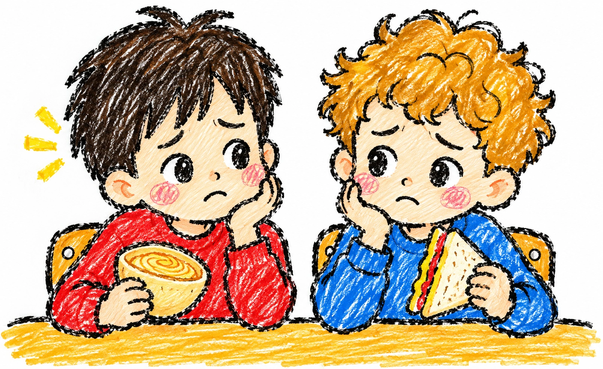
왜 그런 마음이 들었을까요?
내가 고른 인물
친구에게 어떤 말을 하고 싶나요?
존중하는 말을 함께 만들어요.
도움말 물어보기 · 듣기 · 강요 않기
이제 역할극! 대화에 표정과 몸짓을 더해요.
8차시 학생 활동지 · ake 표현하기 · 강점
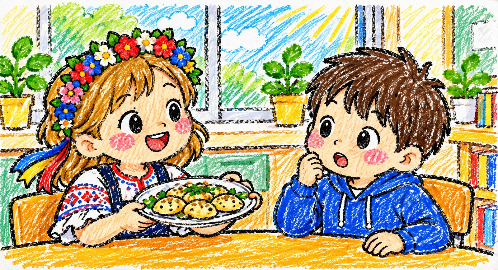
친구가 집에서 즐겨 먹는 음식이 나에게는 낯설어요.
바로 판단하기 전에 어떻게 할까요? 할 수 있는 행동에 모두 표시해요.
꼭 실천할 약속 하나를 고르거나 직접 정해요.
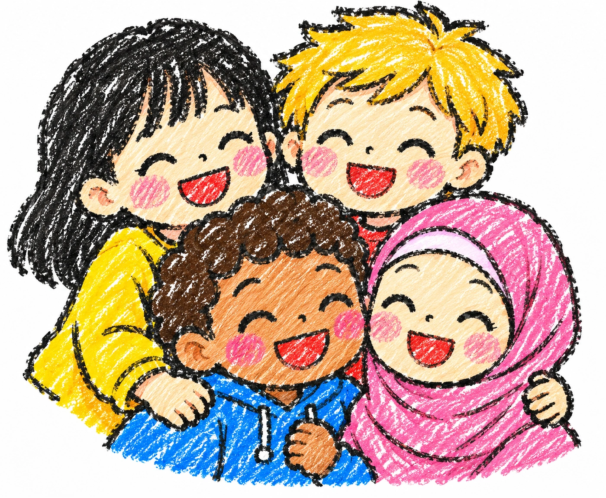
우리는
친구의 마음을 먼저 생각하고,
나와 다르다고 바로 판단하지 않으며,
서로의 이야기를 귀 기울여 듣고,
따뜻한 말과 행동으로
서로를 존중하겠습니다.
우리는 공감을 실천하겠습니다!
교과 융합 프로젝트 수업
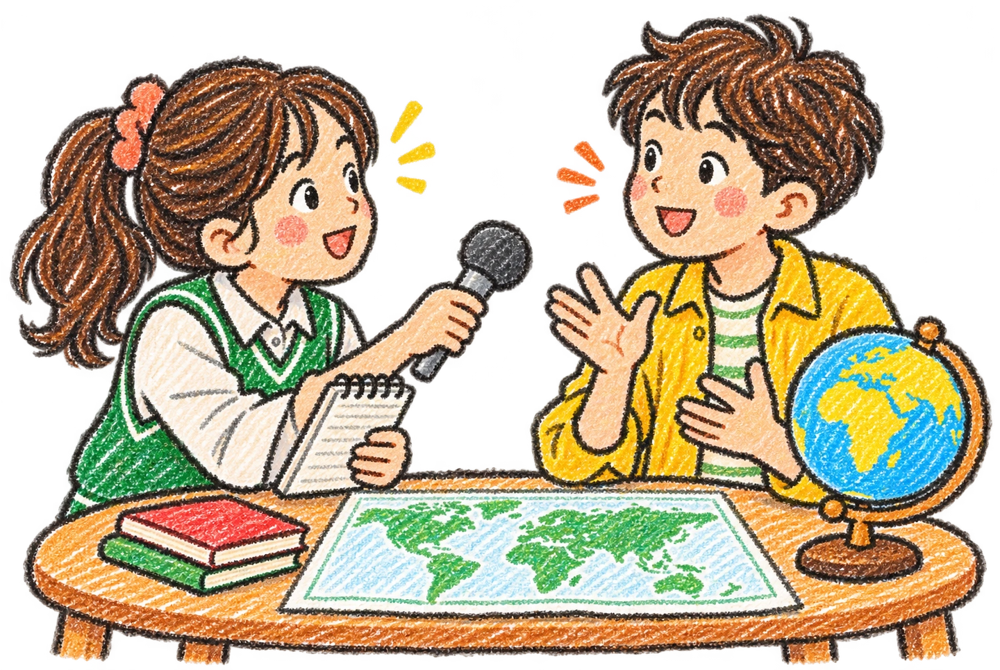
| 차시 | 교과 | 학습 주제 | 교과 역량 |
|---|---|---|---|
| 1 | 국어 | 다문화 프로젝트 발표를 위한 준비하기 | 문제해결 역량 |
| 2 | 사회 | 우리 지역과 세계의 자랑거리를 알고 분류해 보기 | 정보 활용 능력 |
| 3 | 과학 | 세계 여러 나라의 기후변화 현상 알아보기 | 문제해결 역량 |
| 4 | 수학 | 여행하고 싶은 나라의 기온을 조사하여 꺾은선그래프로 나타내기 | 정보처리 역량 |
| 5 | 체육 | 배쉬 타쉬 놀이의 방법을 알고, 우리나라의 공기놀이와 비교하며 놀이하기 | 신체활동 문화 향유 역량 |
| 6 | 국어 | 세계 여러 나라 축제를 조사하여 발표하기 | 디지털·미디어 역량 |
| 7 | 음악 | 여러 나라의 음식을 주제로 노랫말을 바꾸어 불러 보기 | 창의성 역량 |
| 8 | 미술 | 세계 미술가 탐험대가 되어 도슨트 활동하기 | 심미적 감성 역량 |
설계 의도본 프로젝트는 세계 여러 나라의 자연과 문화를 탐색하고, 자신의 문화적 경험과 다양한 자료를 학습의 자원으로 활용하여 스스로 조사·분석·표현하고 성찰하는 과정을 통해 서로 다른 문화를 이해하고 존중하는 마음과 자기주도적인 학습 역량을 기르도록 구성하였다. 또한 우리 지역과 세계의 다양한 문화를 연결하여 살펴보고, 자신의 문화적 강점을 바탕으로 공동체의 활동에 주도적으로 참여하며, 서로 다른 환경 속에서도 자신의 정체성을 존중하면서 함께 어울려 살아가는 글로컬 시민 역량을 발휘할 수 있도록 구성하였다.
| 국어 매체 | [4국06-02] 매체를 활용하여 간단한 발표 자료를 만든다. |
|---|---|
| 사회 지역문제를 해결하고 지역을 알리는 노력 | [4사09-02] 지역의 자연환경, 역사, 문화, 생산물 등을 알리려는 지역사회의 노력을 알고 관심을 갖는다. |
| 과학 기후변화와 우리 생활 | [4과16-01] 기후변화 현상의 예를 알고, 기후변화가 인간의 활동과 관련되어 있음을 토의할 수 있다. |
| 수학 꺾은선그래프 | [4수04-02] 자료를 수집하여 꺾은선그래프로 나타내고 해석할 수 있다. |
| 체육 스포츠 | [4체02-09] 게임 활동에 최선을 다하고 규칙을 지킨다. |
| 음악 음악으로 하나 되는 겨울 | [4음03-02] 악곡의 일부를 바꾸어 표현하고 간단한 악보로 나타낸다. |
| 미술 미술가와 미술작품 | [4미03-04] 작품 감상에 흥미를 가지고 참여하며 작품에 대한 자신의 감상 관점을 존중할 수 있다. |
| 단계 · 프로그램 | 차시 | 주요 학습 내용 | 관련 교과 | 학습 자료 |
|---|---|---|---|---|
| et준비하기 |
1 |
| 국어 수학 | 프레젠테이션 |
| 2 |
| 사회 국어 | 자랑거리 카드 프레젠테이션 | |
| xplore탐구하기 | 3 |
| 과학 국어 | 동영상 태블릿PC |
| 4 |
| 수학 사회 | 동영상 태블릿PC | |
| nite협력하기 | 5 |
| 창·체 체육 | 동영상 공깃돌 |
| 6 |
| 국어 사회 | 동영상 발표 카드 | |
| ake표현하기 |
7 |
| 음악 국어 | 프레젠테이션 나라별 메뉴판 |
| 8 |
| 미술 국어 | 동영상 태블릿PC 프레젠테이션 |
et①②ake⑦⑧| 평가내용 | 평가방법 | 매우 잘함 | 잘함 | 보통 | 노력 요함 |
|---|---|---|---|---|---|
| ①다문화 프로젝트 발표 개요 짜기[4국06-02] | 프로젝트 | 알맞은 자료를 골라 내용을 체계적으로 구성함 | 발표 주제와 매체 자료를 정해 개요를 작성함 | 주제와 관련된 자료로 간단한 개요를 작성함 | 주제와 자료를 정해 개요를 짜는 데 미숙함 |
| ②지역 자랑거리 퀴즈 발표[4사09-02] | 구술 | 특징을 살려 퀴즈를 내고 자신 있게 답함 | 특징을 살린 퀴즈를 내고 질문에 바르게 답함 | 교사나 모둠원의 힌트로 퀴즈를 완성해 발표함 | 특징을 찾아 퀴즈로 표현하는 데 도움이 필요함 |
| ③기후변화 전문가 조사[4과16-01] [4국06-01] | 관찰법 프로젝트 | 여러 자료로 기후변화 원인과 영향을 조사함 | 기후변화의 핵심을 조사하고 전문가 활동에 힘씀 | 기후변화를 조사하며 다른 사람의 의견을 경청함 | 조사 결과를 살피고 전문가 활동에 참여하려 함 |
| ④나라별 기온을 꺾은선그래프로 표현[4수04-02] | 관찰법 | 자료를 정확한 꺾은선그래프로 나타내 발표함 | 주제에 맞는 자료를 모아 꺾은선그래프로 표현함 | 자료를 찾지만 꺾은선그래프로 그리기 어려워함 | 자료 수집과 꺾은선그래프 표현에 도움이 필요함 |
| ⑤배쉬 타쉬와 공기놀이 비교[4체02-09] | 관찰법 | 규칙을 지켜 참여하고 문화의 다양성을 존중함 | 놀이에 참여해 공기놀이와 공통점·차이점을 말함 | 규칙을 이해하고 모둠 친구들과 놀이에 참여함 | 교사의 도움으로 규칙을 익히고 놀이에 참여함 |
| ⑥세계 여러 나라의 축제 발표[4국06-02] | 관찰법 | 알맞은 자료로 바른 자세와 큰 목소리로 발표함 | 주제에 맞는 자료를 찾아 바른 자세로 발표함 | 주제에 맞는 자료를 찾으나 발표 자세가 미흡함 | 자료를 찾고 발표하는 데 도움이 필요함 |
| ⑦여러 나라 음식으로 노랫말 바꾸기[4음03-02] | 관찰법 | 음정·리듬을 살려 창의적 노랫말로 함께 노래함 | 음식 특징을 담아 리듬을 살려 함께 노래함 | 음식 노랫말로 음정과 리듬을 일부 살려 노래함 | 노랫말 짓기와 노래, 협력에 도움이 필요함 |
| ⑧작품과 미술가를 조사해 소개하기[4미03-04] [4국06-01] [4국06-02] | 관찰법 프로젝트 | 자신 있게 발표하고 타문화의 가치를 존중함 | 바른 태도로 발표하고 타문화를 이해하려 노력함 | 조사에 참여해 발표하고 타문화를 이해하려 함 | 발표에 참여하나 문화 존중에 격려가 필요함 |
| 이주배경학생 평가 시 유의점 | |||||
①사진·영상·그래프 중 발표 주제에 맞는 자료를 고르게 한다. |
②여러 지역의 자랑거리를 소개할 때 우열을 가리지 않게 한다. |
||||
③영상을 함께 본 뒤 모둠에서 조사할 기후 현상을 고르게 한다. |
④학생이 아는 나라의 기온을 고르고 수준에 맞는 도구를 쓰게 한다. |
||||
⑤말로 설명하기 부담스러우면 놀이 방법을 시범으로 보이게 한다. |
⑥축제 자료를 함께 보며 전하려는 내용에 어울리는지 살핀다. |
||||
⑦음식 경험을 나누고 모둠에서 맡을 역할은 스스로 고르게 한다. |
⑧작품을 설명할 때 낯선 낱말과 문맥을 짚어 표현을 돕는다. |
||||
4학년 프로젝트 교수·학습 과정안 | ||||||||||||
|---|---|---|---|---|---|---|---|---|---|---|---|---|
융합과목 | 국어, 사회, 수학, 과학, 미술, 음악 | 대 상 | 4학년 | 프로젝트 단계 | et (준비하기) | |||||||
프로젝트 | 자연 따라 문화 따라 세계 한 바퀴(1/8) | |||||||||||
성취기준 | [4국06-02] 매체를 활용하여 간단한 발표 자료를 만든다. | |||||||||||
학습목표 | 다문화 프로젝트 발표에 활용할 자료를 찾을 수 있다. | |||||||||||
수업전략 | 수업모형 | 문제해결 학습 모형 | 교과 역량 | 문제해결 역량 | ||||||||
다문화 주도성 |
| |||||||||||
☑ | ☑ | ☐ | ☑ | |||||||||
| 단계(시간) | 학습요소 | 교수·학습 활동 | 자료(▶) 및 유의점(☞) |
|---|---|---|---|
| 문제 확인하기 (5′) | 동기유발 | ▣ 학습동기 유발 ◦ 발표에 활용할 수 있는 자료 떠올려 보기 ∙ 종이접기 방법을 소개할 때 어울리는 자료를 골라봅시다. ∙ 선택한 자료의 특징이 발표 주제와 어떻게 어울리는지 그 까닭을 이야기해 봅시다. | ▶ 프레젠테이션 |
| 공부할 문제 파악 | ▣ 공부할 문제 확인 ♣ 다문화 프로젝트 발표를 위한 준비를 해 봅시다. | ||
| 문제해결방법 탐색하기 (10′) | 위치 표현 알아보기 | ▣ 【활동1】 발표 자료 찾는 과정을 알아봐요 ◦ 발표에 활용할 자료를 찾는 과정 알아보기 ∙ 발표에 활용할 자료를 찾는 첫 번째 과정을 확인해봅시다. ∙ 발표에 활용할 자료를 찾는 다음 과정을 찾아봅시다. ∙ 발표에 활용할 자료를 찾는 마지막 과정을 정리해봅시다. | ▶ 프리젠테이션 ☞ 자료를 찾는 절차를 암기하기보다는 발표 목적과 주제에 맞는 자료를 찾는 과정임을 이해하도록 지도한다. |
| 문제 해결하기 (20‘) | ▣ 【활동2】 발표 주제 정하기 ◦ 2학기 교과서를 살펴보면서 발표 주제 탐색하기 ∙ 세계 탐험을 중심 주제로 하여 다양한 세부 주제를 생각해 봅시다. ∙ 수학에서 배울 내용 중 세계 탐험과 관련하여 더 깊이 탐구할 수 있는 주제를 찾아봅시다. ∙ 음악, 미술 교과서에서 주제를 창의적으로 표현할 수 있는 학습 내용을 선정봅시다. | ▶ 과목별 2학기 교과서 | |
▣ 【활동3】 발표 개요 만들기 ◦ 프로젝트 발표 개요 짜기 ∙ 과목별로 선정한 세부 주제를 확인해봅시다. ∙ 사진, 동영상, 그래프, 표 등 다양한 자료 중에서 주제 발표를 위해 활용할 자료를 선정하고 발표 내용을 정리해 봅시다. | ☞ 모둠원 각자의 역할과 의견을 존중하며 협력적으로 활동할 수 있도록 지도한다. | ||
| 평가 하기 (5′) | 학습내용 정리하기 | ▣ 학습내용 정리 ◦ 배운 내용 돌아보기 ∙ 오늘 수업을 통해 알게 된 점이나 더 알고 싶은 점, 또는 느낀 점을 발표해 봅시다. ∙ 모둠 활동을 할 때 좋은 태도를 보인 친구를 칭찬해 봅시다. | |
▣ 차시 예고 ♣ 발표에 활용할 자료를 찾아봅시다. |
4학년 프로젝트 교수·학습 과정안 | ||||||||||||
|---|---|---|---|---|---|---|---|---|---|---|---|---|
융합과목 | 사회, 국어 | 대 상 | 4학년 | 프로젝트 단계 | et (준비하기) | |||||||
프로젝트 | 자연 따라 문화 따라 세계 한 바퀴(2/8) | |||||||||||
성취기준 | [4사09-02] 지역의 자연환경, 역사, 문화, 생산물 등을 알리려는 지역사회의 노력을 알고 관심을 갖는다. | |||||||||||
학습목표 | 우리 지역과 세계 여러 도시의 자랑거리를 알고 분류해봅시다. | |||||||||||
수업전략 | 수업모형 | 개념학습 속성 모형 | 교과 역량 | 정보 활용 능력 | ||||||||
다문화 주도성 |
| |||||||||||
☑ | ☑ | ☑ | ☐ | |||||||||
| 단계(시간) | 학습요소 | 교수·학습 활동 | 자료(▶) 및 유의점(☞) |
|---|---|---|---|
| 문제 제기 (5′) | 동기유발 | ▣ 학습동기 유발 ◦ 대전과 세계의 자랑거리 살펴보기 ∙ 우리 지역 대전과 세계 여러 도시에는 어떤 멋진 자랑거리들이 있을까요? ∙ 다음의 자랑거리는 어떤 보물 상자에 들어갈까요? | ▶ 대전과 세계의 자랑거리 사진 ▶ 보물 상자 4가지 |
| 공부할 문제 파악 | ▣ 공부할 문제 확인 ♣ 우리 지역과 세계의 자랑거리를 알고 분류해 봅시다. | ||
| 개념 제시 및 속성 검토 (10′) | 분류 핵심 기준 알기 | ▣ 【활동1】 대전&세계 자랑거리 알아보기 ◦ 자랑거리 분류 기준 알아보기 ∙ 우리가 사는 대전에 성심당 빵 같은 멋진 자랑거리가 있듯이, 세계 여러 나라에도 각 지역의 환경에 맞춘 소중한 자랑거리가 있습니다. 서로 다른 자랑거리의 멋을 인정하고 열린 마음으로 알아봅시다. ∙ 자연환경, 생산물, 문화, 역사의 4가지 기준으로 지역의 자랑거리를 분류해 봅시다. | ▶ 프레젠테이션 ☞ 자랑거리가 단순 비교나 우열 겨루기가 되지 않도록 각 지역의 평등한 문화적 자산임을 강조하며 포용적 어조로 발문한다. |
| 사례와 비사례 검토 (10′) | 기준에 맞게 자랑거리분류하기 | ▣ 【활동2】 대전&세계 자랑거리 분류하기 ◦ 4색 자랑거리 보물 진열대(빙고판)에 카드 배치하기 ∙ 대전의 계족산과 스위스의 알프스산은 ‘자연환경’의 예입니다. 모둠별 4색 보물 진열대에 모둠원들과 토의하여 분류하며 카드를 배치하여 봅시다. | ▶ 4×4 보물 진열대, 자랑거리 카드 20개 ☞ 모둠원들과 충분한 토의를 통해 어떤 칸에 자랑거리를 배치해야 할지 결정하도록 한다. |
| 개념 분석 (10′) | 놀이하며 개념 다지기 | ▣ 【활동3】 자랑거리 빙고 놀이하기 ◦ 속성 설명 퀴즈로 2줄 모둠 빙고 놀이하기 ∙ 속성 설명 퀴즈를 내고 맞추며 모둠 대항 빙고 놀이를 해 봅시다. ∙ 이것은 중국의 기다란 건축물로 ‘역사’ 자랑거리입니다. 이것은 무엇일까요?(만리장성) | ▶ 완성된 4×4 보물 진열대 ☞ 학생들이 서로 존중하고 협동하여 퀴즈에 참여하도록 유도한다. |
| 평가 및 정리 (5′) | 학습내용 정리하기 | ▣ 학습내용 정리 ◦ 배운 내용 이야기하기 ∙ 우리 지역에도 자랑거리가 있는 것처럼 세계 여러 나라도 소중한 자랑거리를 갖고 있습니다. 이렇게 서로 다른 문화를 바라볼 때 우리는 어떤 마음가짐을 가져야 할까요? | ☞ 특정 지역이나 나라의 자랑거리에 우열을 두지 않고, 다양한 문화를 평등하고 포용적인 태도로 수용하도록 지도한다. |
▣ 차시 예고 ♣ 세계 여러 나라의 기후를 알아봅시다. |
4학년 프로젝트 교수·학습 과정안 | ||||||||||||
|---|---|---|---|---|---|---|---|---|---|---|---|---|
융합과목 | 과학, 국어 | 대 상 | 4학년 | 프로젝트 단계 | xplore (탐구하기) | |||||||
프로젝트 | 자연 따라 문화 따라 세계 한 바퀴(3/8) | |||||||||||
성취기준 | [4과16-01] 기후변화 현상의 예를 알고, 기후변화가 인간의 활동과 관련되어 있음을 토의할 수 있다. [4국06-01] 인터넷에서 학습에 필요한 다양한 자료를 탐색하고 목적에 맞게 자료를 선택한다. | |||||||||||
학습목표 | 세계 여러 나라의 기후변화 현상을 알아볼 수 있다. | |||||||||||
수업전략 | 수업모형 | 직소 협동 학습 모형 | 교과 역량 | 문제해결 역량 | ||||||||
다문화 주도성 |
| |||||||||||
☑ | ☑ | ☑ | ☑ | |||||||||
| 단계(시간) | 학습요소 | 교수·학습 활동 | 자료(▶) 및 유의점(☞) |
|---|---|---|---|
| 문제 확인하기 (5′) | 동기유발 | ▣ 학습동기 유발 ◦ 기후변화 영상을 보고 이야기 나누기 ∙ 기후변화로 인한 피해 관련 뉴스 영상을 보고 이야기를 나누어 봅시다. ∙ 기후변화에 대해 알고 있는 이야기를 나누어 봅시다. | ▶ 네팔 홍수 영상 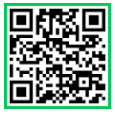 |
| 공부할 문제 파악 | ▣ 공부할 문제 확인 ♣ 세계 여러 나라의 기후변화 현상을 알아봅시다. | ||
| 원모둠 구성 및 과제분할하기 (5′) | 기후변화 조사할 역할 정하기 | ▣ 【활동1】 기후변화 현상에 대한 소주제 정하기 ◦ 모둠에서 각자 조사할 소주제 정하기 ∙ 모둠에서 조사할 소주제를 알아봅시다. ∙ 5가지 주제(가뭄, 폭염, 한파, 홍수, 폭설)에 대해 조사할 역할을 정해봅시다. | ▶ 모둠 역할 학습지 ☞ 세계 곳곳의 기후변화에 대해 조사하도록 한다. |
| 전문가 집단 활동하기 (15′) | 전문가 활동하기 | ▣ 【활동2】 기후변화 현상에 대한 전문가 활동하기 ◦ 같은 주제를 선택한 모둠원들끼리 전문가 활동하기 ∙ 같은 주제를 선택한 모둠원들이 모여서 전문가 활동을 해봅시다. ∙ 인터넷 검색 활동으로 조사하고 내용을 함께 정리해 봅시다. | ▶ 활동지1, 태블릿 |
| 원모둠 복귀 및 설명하기 (10′) | 원모둠에 전문가가 되어 설명하기 | ▣ 【활동3】 기후변화 현상 설명하기 ◦ 전문가 활동을 통해 알게 된 내용 설명하기 ∙ 전문가 활동을 통해 알게 된 내용을 설명해 봅시다. ∙ 기후변화로 지구 곳곳에서 일어나는 현상을 정리해 봅시다. | |
| 평가 하기 (5′) | 학습내용 정리하기 | ▣ 학습내용 정리 ◦ 배운 내용과 느낀 점 이야기하기 ∙ 기후변화에 대해 알게 된 내용과 느낀 점을 이야기해 봅시다. | ☞ '기후 정의′에 대해 생각해 보는 시간을 갖는다. |
▣ 차시 예고 ♣ 기후변화는 인간 활동과 어떤 관련이 있는지 알아봅시다. |
대상 | 4학년 | 교과서 | 수학 118~121쪽 | |||||||||||
|---|---|---|---|---|---|---|---|---|---|---|---|---|---|---|
프로젝트 | 지구촌 뉴스룸(4/8) | xplore (탐구하기) | ||||||||||||
본시 성취기준 | [4수04-02] 자료를 수집하여 꺾은선그래프로 나타내고 해석할 수 있다. | 본시 관련교과 | 수학 사회 | |||||||||||
학습목표 | 여행하고 싶은 나라의 기온을 조사하여 꺾은선그래프로 나타낼 수 있다. | |||||||||||||
수업 모형 | 문제 해결 학습 모형 | 교과 역량 | 정보처리 역량 | |||||||||||
수업전략 | 수업 의도 | - 본 수업은 실생활과 밀접한 '날씨와 기온'을 주제로 다른 나라의 기온 자료를 조사하고 이를 꺾은선그래프로 시각화하는 활동을 다룬다. 이를 통해 우리나라와 다른 기후 환경 및 생활 양식의 차이를 이해하고, 문화의 다양성을 존중하는 태도와 다문화 수용성을 기르고자 한다. | ||||||||||||
다문화 주도성 |
| |||||||||||||
☑ | ☑ | ☐ | ☑ | |||||||||||
이주배경학생 지도계획 | - 이주배경학생 모국의 기온을 조사하여 발표할 수 있도록 계획한다. - 이주배경학생의 공학도구 사용 및 한국어 사용 수준에 맞게 자료를 준비한다. | |||||||||||||
| 단계(시간) | 학습요소 | 교수·학습 활동 | 자료(▶) 및 유의점(☞) |
|---|---|---|---|
| 문제 확인하기 (5′) | 동기유발 | ▣ 학습동기 유발 ◦ ‘12월에 떠나기 좋은 해외 여행지’ 영상 보기 ∙ 12월에 여행하기 좋은 나라는 어디일까요? - 독일, 일본, 태국입니다. ∙ 이유가 무엇인가요? - 태국은 겨울에도 따뜻한 기온으로 여행하기 좋습니다. - 독일은 크리스마스 분위기를 느낄 수 있습니다. - 일본은 눈 축제가 열리고 있습니다. | ▶ 동영상 |
| 공부할 문제 파악 | ▣ 공부할 문제 확인 ♣ 여행하고 싶은 나라의 기온을 조사하여 꺾은선그래프로 나타내어 봅시다. | ||
| 학습활동 안내 | ▣ 학습활동 안내 【활동1】 자료 조사하기 【활동2】 꺾은선그래프로 나타내기 【활동3】 꺾은선그래프 내용 알아보기 | ||
| 문제 해결방법 탐색하기 (10′) | 여행하고 싶은 나라 기온 조사하기 | ▣ 【활동1】 자료 조사하기 ◦ 여행하고 싶은 나라의 기온을 조사하여 봅시다. ∙ 자신이 여행하고 싶은 나라를 정하여 봅시다. - 일본, 미국, 영국, 몽골 등이 있습니다. ∙ 각 나라의 기온을 조사하는 방법을 알아봅시다. - ‘기상청 날씨누리’ 누리집에서 자료를 찾습니다. - ‘현재 날씨’ 메뉴를 선택합니다. - ‘세계기상’에서 나라를 선택하고 기온을 조사하여 학습지에 정리하여 봅시다. - 대륙을 선택하고 다양한 나라와 도시를 선택할 수 있습니다. | ▶ 학습지 ☞ 조사한 자료를 표로 정리하고 꺾은선그래프로 알맞게 나타내도록 지도한다. |
| 단계(시간) | 학습요소 | 교수·학습 활동 | 자료(▶) 및 유의점(☞) |
|---|---|---|---|
| 문제 해결하기 (20′) | 조사한 내용 꺾은선그래프로 나타내기 | ▣ 【활동2】 꺾은선그래프로 나타내기 ◦ 꺾은선그래프로 나타내어 봅시다. ∙ 꺾은선그래프로 나타내는 방법은 무엇일까요? - 가로와 세로에 무엇을 나타낼지 정합니다. - 세로 눈금 한 칸의 크기를 정합니다. ◦ 꺾은선그래프를 발표하여 봅시다. ∙ 자신이 그린 그래프를 ‘이지통계’ 누리집에 접속하여 그려 봅시다. - 표 입력을 누른 다음 그래프를 누르고 꺾은선그래프를 선택한다. - 가로와 세로의 이름을 누르고 각각의 단위를 쓴다. - 조사한 내용을 입력한다. - 내가 그린 그래프를 저장하여 학급 게시판에 올려 발표한다. | ▶ EBSmath 이지통계 ☞ 공학도구인 이지통계를 통해 효율적인 교수·학습이 이루어지도록 한다. ☞ 공학도구의 사용법을 미리 지도하여 학생이 주도적으로 활용할 수 있도록 충분한 기회를 제공한다. |
| 꺾은선그래프 내용 알아보기 | ▣ 【활동3】 꺾은선그래프 내용 알아보기 ◦ 친구들의 그래프를 보고 여행하고 싶은 나라 알아보기 ∙ 어느 나라로 여행을 가보고 싶은가요? - 몽골입니다. ∙ 그 까닭은 무엇인가요? - 우리나라는 9월도 더운데 몽골은 9월에도 19°로 시원하기 때문입니다. | ||
| 평가하기 (5′) | 학습내용 정리 | ▣ 학습내용 정리 ◦ 각 나라의 기온 정리하기 ∙ 각 나라 기온의 특징을 이야기해 봅시다. - 나라마다 기온이 다르다는 것을 알 수 있습니다. - 기온에 따른 생활 방식도 다를 것 같습니다. | |
| 차시 예고 | ▣ 차시 예고 ♣ 꺾은선그래프를 생활에 활용하여 봅시다. |
판서 | 5. 꺾은선그래프 | ||
|---|---|---|---|
♣ 여행하고 싶은 나라의 기온을 조사하여 꺾은선그래프로 나타내어 봅시다. | 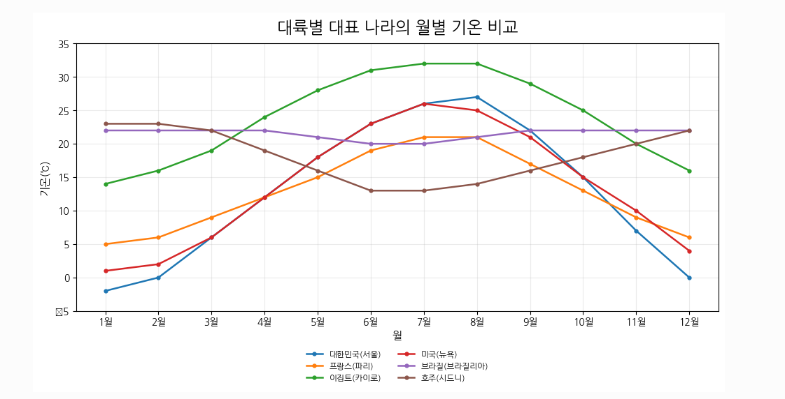 |
| |
【활동1】 자료 조사하기 【활동2】 꺾은선그래프 나타내기 【활동3】 꺾은선그래프 내용 알아보기 |
평가 계획 | 평가내용 | 척도 | 채점 기준 | 평가방법 |
|---|---|---|---|---|
주제에 알맞은 자료를 수집하여 꺾은선그래프로 나타낼 수 있는가? | 매우 잘함 | 주제에 알맞은 자료를 바르게 찾고 꺾은선그래프로 정확하게 나타내어 발표함. | 관찰법 | |
잘함 | 주제에 알맞은 자료를 찾고 꺾은선그래프로 나타냄. | |||
보통 | 주제에 알맞은 자료를 찾으나 꺾은선그래프로 나타내지 못함. | |||
노력 요함 | 주제에 알맞은 자료를 찾지 못하고 꺾은선그래프로 나타내는 것을 어려워함. | |||
이주배경학생 평가 시 유의점 | 한국어 표현에 대한 부담감과 내성적인 성향으로 인해 자신의 감정이나 생각을 언어로 표현하는 데 어려움을 겪을 수 있으므로 학생이 심리적 위축 없이 평가에 임할 수 있도록 지속적인 격려와 허용적인 평가 환경을 조성한다. | |||
4차시 학생 활동지 · xplore 탐구하기 · 실력
여행하고 싶은 나라의 월별 최고기온을 조사하여 꺾은선그래프로 나타내어 봅시다.
| 월 | 1월 | 2월 | 3월 | 4월 | 5월 | 6월 | 7월 | 8월 | 9월 | 10월 | 11월 | 12월 |
|---|---|---|---|---|---|---|---|---|---|---|---|---|
| 최고기온 (℃) |
대상 | 4학년 | 교과서 | 체육 60~61쪽 | |||||||||||
|---|---|---|---|---|---|---|---|---|---|---|---|---|---|---|
프로젝트 | 지구촌 뉴스룸(5/8) | nite 협력하기 | ||||||||||||
본시 성취기준 | [4체02-09] 게임 활동에 최선을 다하고 규칙을 지킨다. | 본시 관련교과 | 체육 창·체 | |||||||||||
학습목표 | 친구들과 함께 세계 놀이에 참여하며 다양성을 존중하는 태도를 가질 수 있다. | |||||||||||||
수업 모형 | 실천·체험 중심 모형 | 교과 역량 | 신체활동 문화 향유 역량 | |||||||||||
수업전략 | 수업 의도 | - 이 수업은 키르기스스탄의 전통 놀이인 '배쉬 타쉬'와 우리나라의 '공기놀이'를 비교·체험함으로써 세계 문화의 공통점과 차이점을 직관적으로 이해하도록 기획하였다. - 모둠별 협동 놀이 과정을 통해 서로를 배려하고 타문화를 자연스럽게 수용하며 다양성을 존중하는 태도를 함양하고자 한다. | ||||||||||||
다문화 주도성 |
| |||||||||||||
☑ | ☑ | ☑ | ☐ | |||||||||||
이주배경학생 지도계획 | - 이주배경학생의 개별 특성을 고려하여, 말로 설명하기보다 시범을 통해 놀이 방법을 친구들에게 자연스럽게 보여주도록 안내함으로써 발표 부담을 줄인다. - 해당 학생의 문화적 배경과 경험을 존중하며 긍정적으로 공유하고, 이를 통해 학급 내에서 자존감과 주도성을 기르도록 지도한다. | |||||||||||||
| 단계(시간) | 학습요소 | 교수·학습 활동 | 자료(▶) 및 유의점(☞) |
|---|---|---|---|
| 동기유발 및 필요성 인식 (5′) | 동기유발 | ▣ 학습동기 유발 ◦ 키르기스스탄의 전통 놀이 영상 시청하기 ∙ 키르기스스탄의 전통 놀이 이름이 무엇인가요? - “배쉬 타쉬” 놀이입니다. ∙ 이 놀이는 우리나라의 어떤 놀이와 비슷한가요? - 공기놀이입니다. ∙ 오늘 공부할 문제를 확인해 보겠습니다. | ▶ 놀이 동영상 ☞ 키르기스스탄의 놀이 영상을 보며 우리나라의 공기놀이를 자연스럽게 떠올릴 수 있도록 한다. |
| 공부할 문제 파악 | ▣ 공부할 문제 확인 ♣ 배쉬 타쉬 놀이의 방법을 알고, 우리나라의 공기놀이와 비교하며 즐겁게 놀이해 봅시다. | ||
| 학습활동 안내 | ▣ 학습활동 안내 【활동1】 배쉬 타쉬 놀이 알아보기 【활동2】 비교하며 놀이하기 【활동3】 놀이 소감 나누기 | ||
| 실천 방법 탐색 및 시범 (10′) | 키르기 스스탄 전통놀이 알아보기 | ▣ 【활동1】 배쉬 타쉬 놀이 알아보기 ◦ 배쉬 타쉬 놀이 알아보기 ∙ “배쉬 타쉬”는 ‘다섯 개의 돌’이라는 뜻으로, 우리나라 공기놀이처럼 다섯 개의 돌을 가지고 하는 놀이입니다. 먼저 어떻게 하는 놀이인지 시범을 보여주겠습니다. - 이주배경학생이 교실 앞에서 시범을 보인다. ∙ 배쉬 타쉬 놀이 방법을 알아볼까요? - 1단계부터 5단계까지 놀이단계가 있습니다. 돌을 바닥에 던지고, 돌 하나를 공중에 띄운 뒤 바닥의 돌을 줍고, 공중의 돌을 받습니다. ∙ 배쉬 타쉬 놀이에 관해 궁금한 점을 00이에게 질문하여 봅시다. | ▶ 공깃돌 ☞ 이주배경학생이 교실 앞에서 시범을 보이고 친구들의 질문에 대답하는 기회를 제공함으로써 자신의 문화적 강점을 활용할 수 있도록 한다. |
| 단계(시간) | 학습요소 | 교수·학습 활동 | 자료(▶) 및 유의점(☞) |
|---|---|---|---|
| 직접 체험 및 연습 (15′) | 키르기 스스탄의 전통놀이와 우리나라 놀이 해보기 | ▣ 【활동2】 비교하며 놀이하기 ◦ 우리나라의 ‘공기놀이’와 비교하기 ∙ 우리가 평소에 하던 공기놀이와 비슷한 점, 다른 점은 무엇인가요? - 돌을 위로 던져놓고 바닥에 있는 돌을 줍는 방법이 비슷합니다. - 점수를 계산하는 법이 다릅니다. ◦ 키르기스스탄 ‘배쉬 타쉬’ 놀이, 우리나라 ‘공기놀이’ 해 보기 ∙ 모둠별로 차례를 정해 첫 번째 라운드는 “배쉬 타쉬” 놀이를, 두 번째 라운드는 “공기놀이”를 규칙에 맞게 해 봅시다. - 순서와 규칙을 지켜 놀이에 참여한다. ∙ 우리 모둠 ‘놀이 고수’를 선발해 봅시다. | ▶ 모둠별 공깃돌 5개 ☞ 모둠원 간 배려하고 협력하며 놀이 하는지 관찰하며 지도한다. ☞ 이주배경학생을 ‘놀이 도우미’로 임명해 친구들에게 놀이를 알려주도록 한다. |
| 반성 및 일상생활 실천 다짐 (5′) | 놀이 후 소감 나누기 | ▣ 【활동3】 놀이 소감 나누기 ◦ 한 문장으로 놀이 소감 나누기 ∙ 키르기스스탄과 우리나라 놀이를 해 본 소감을 한 문장으로 정리하여 띵커벨 보드에 올려 공유해 봅시다. - 나라와 언어는 달라도 놀이하는 방법은 꼭 닮아 있어서 정말 신기했습니다. | ▶ 띵커벨 보드, 태블릿PC ☞ 놀이 소감을 모둠별, 전체로 나누고 친구들을 도와준 이주배경학생도 함께 칭찬하는 분위기를 조성한다. |
| 정리 (5′) | 학습내용 정리 | ▣ 학습내용 정리 ◦ 배운 내용 정리 및 실천 다짐하기 ∙ 키르기스스탄 전통놀이를 우리 생활 속에서 어떻게 즐겨볼 수 있을까요? - 친구들과 쉬는 시간에 “배쉬 타쉬” 놀이를 해 보겠습니다. ∙ 친구들에게 멋진 시범을 보여준 00 학생에게 감사의 박수를 보내봅시다. | ☞ 다른 나라의 전통 놀이에 대한 흥미와 다문화를 존중하는 태도를 유지하며 정리하고, 이주배경학생의 주도적 참여를 긍정적으로 강화한다. |
| 차시 예고 | ▣ 차시 예고 ♣ 세계 여러 나라의 축제를 조사해 봅시다. |
판서 | <키르기스스탄 전통 놀이> | ||||||
|---|---|---|---|---|---|---|---|
♣ 배쉬 타쉬 놀이 방법을 알고, 공기놀이와 비교하며 즐겁게 놀이해 봅시다. |
*우리 반 놀이 고수는? 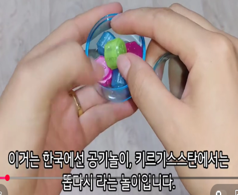 |
| |||||
【활동1】 놀이 알아보기 【활동2】 비교하며 놀이하기 【활동3】 놀이 소감 나누기 |
평가 계획 | 평가내용 | 척도 | 채점 기준 | 평가방법 |
|---|---|---|---|---|
키르기스스탄의 배쉬 타쉬 놀이 규칙을 이해하고, 우리나라 공기놀이와 비교하며 즐겁게 참여하는가? | 매우 잘함 | 키르기스스탄 배쉬 타쉬 놀이 규칙을 정확히 이해하여 비교 놀이에 적극적으로 참여하고, 다문화적 다양성을 존중하는 태도를 보임. | 관찰법 | |
잘함 | 배쉬 타쉬 놀이 규칙을 이해하고 놀이에 참여하며, 공기놀이와의 공통점과 차이점을 말할 수 있음. | |||
보통 | 배쉬 타쉬 놀이 규칙을 이해하고 모둠원들과 함께 놀이에 참여함. | |||
노력 요함 | 교사의 도움을 받아 배쉬 타쉬 놀이 규칙을 익히고 놀이에 참여함. | |||
이주배경학생 평가 시 유의점 | 이주배경학생의 개별 특성을 고려하여 언어적 설명 능력보다는 직접 시범을 보이거나 놀이에 능동적으로 참여하는 행동을 중심으로 관찰 평가한다. | |||
5차시 학생 활동지 · nite 협력하기 · 마음
| 1라운드 이름 | 배쉬 타쉬 놀이로 20점 내기 | 2라운드 이름 | 우리나라 공기놀이로 20점 내기 |
|---|---|---|---|
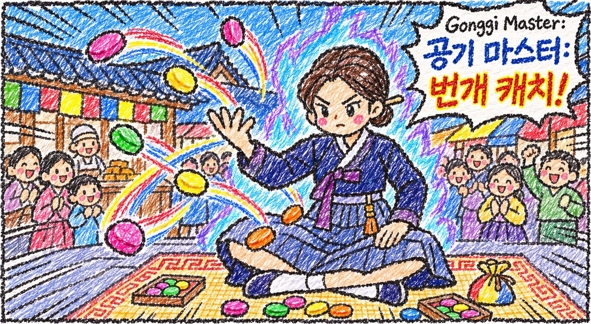
4학년 프로젝트 교수·학습 과정안 | ||||||||||||
|---|---|---|---|---|---|---|---|---|---|---|---|---|
융합과목 | 국어, 사회 | 대 상 | 4학년 | 프로젝트 단계 | nite (협력하기) | |||||||
프로젝트 | 자연 따라 문화 따라 세계 한 바퀴(6/8) | |||||||||||
성취기준 | [4국06-02] 매체를 활용하여 간단한 발표 자료를 만든다. | |||||||||||
학습목표 | 세계 여러 나라 축제를 조사하여 발표할 수 있다. | |||||||||||
수업전략 | 수업모형 | 문제해결 학습 모형 | 교과 역량 | 디지털·미디어 역량 | ||||||||
다문화 주도성 |
| |||||||||||
☑ | ☑ | ☐ | ☑ | |||||||||
| 단계(시간) | 학습요소 | 교수·학습 활동 | 자료(▶) 및 유의점(☞) |
|---|---|---|---|
| 문제 확인하기 (5′) | 동기유발 | ▣ 학습동기 유발 ◦ ‘세계 여러 나라 축제’ 동영상 보기 ∙ 어떤 나라의 축제가 가장 흥미로웠나요? ∙ 참가해 보고 싶은 축제가 있나요? ∙ 축제에 참가 해 본 경험이 있나요? | ▶ 동영상 |
| 공부할 문제 파악 | ▣ 공부할 문제 확인 ♣ 세계 여러 나라 축제를 조사하여 발표하여 봅시다. | ||
| 문제해결방법 탐색하기 (10′) | 발표준비하기 | ▣ 【활동1】 발표 준비하기 ◦ 발표 카드 만들기 ∙ 발표 카드에는 어떤 내용이 있나요? ∙ 발표 주제는 무엇인가요? ∙ 발표 주제를 설명하기 위해 어떤 매체를 사용하나요? ∙ 주제를 설명하기 위해 어떤 자료가 좋을까요? | ▶ 발표 카드 |
| 문제 해결하기 (20‘) | 축제 발표하기 | ▣ 【활동2】 나라별 축제 발표하기 ◦ 대륙별로 나누어 여러 나라의 축제 알아보기 ∙ 모둠별로 대륙을 정하여 축제를 조사하여 발표해 봅시다. ∙ 각 대륙에는 어떤 나라가 있나요? ∙ 나라마다 특색 있고 흥미로운 축제는 어떤 것이 있나요? | ☞ 자료의 해상도, 동영상 등을 사전에 확인하고 미리 준비한다. |
| 가보고 싶은 축제 발표하기 | ▣ 【활동3】 가보고 싶은 축제 ◦ 친구의 발표를 듣고 발표내용을 정리해 봅시다. ∙ 친구의 발표 중 내가 참여해 보고 싶은 축제가 있나요? ∙ 그 까닭은 무엇인가요? ∙ 친구의 발표를 듣고 인상적인 축제를 발표해 봅시다. | ☞ 자료 자체의 흥미로움과 새로움 보다는 전달하고자 하는 내용에 적합한 자료인지 생각하며 발표를 듣도록 지도한다. | |
| 평가 하기 (5′) | 학습내용 정리하기 | ▣ 학습내용 정리 ◦ 자신의 발표를 되돌아봅시다. ∙ 잘한 점, 느낀 점, 더 노력할 점을 이야기해 봅시다. ∙ 자료를 활용하여 발표한 소감을 친구들과 이야기해 봅시다. | |
▣ 차시 예고 ♣ 배운 내용을 적용하여 봅시다. |
대상 | 4학년 | 교과서 | 음악 74~75쪽 | |||||||||||
|---|---|---|---|---|---|---|---|---|---|---|---|---|---|---|
프로젝트 | 지구촌 뉴스룸(7/8) | ake 표현하기 | ||||||||||||
본시 성취기준 | [4음03-02] 악곡의 일부를 바꾸어 표현하고 간단한 악보로 나타낸다. | 본시 관련교과 | 음악 국어 | |||||||||||
학습목표 | 여러 나라의 음식을 주제로 노랫말을 바꾸어 노래 부를 수 있다. | |||||||||||||
수업 모형 | 창작 중심의 교수 학습 모형 | 교과 역량 | 창의성 역량 | |||||||||||
수업전략 | 수업 의도 | - 익숙한 노랫말을 다른 나라의 음식과 문화가 드러나도록 창의적으로 바꾸어 보는 활동을 통해 음악적 표현 능력을 기르고자 한다. - 서로의 창작물을 함께 부르고 감상하며 다양한 나라의 음식과 문화를 자연스럽게 접하고, 친구의 표현을 존중하며 함께 창작하는 즐거움을 느끼도록 수업을 구성하였다. | ||||||||||||
다문화 주도성 |
| |||||||||||||
☑ | ☑ | ☑ | ☑ | |||||||||||
이주배경학생 지도계획 | - 학생의 문화적 배경을 존중하여 자신이 알고 있는 경험이나 지식을 자연스럽게 공유하도록 참여를 이끌고 이를 학습 자원으로 활용할 수 있도록 격려한다. - 특정 국가의 문화와 관련된 역할을 고정적으로 부여하지 않고, 다양한 역할 중 스스로 선택하여 참여할 수 있도록 한다. | |||||||||||||
| 단계(시간) | 학습요소 | 교수·학습 활동 | 자료(▶) 및 유의점(☞) |
|---|---|---|---|
| 감각적 감지 (4′) | 동기유발 | ▣ 학습동기 유발 ◦ 선생님의 여행 사진을 보며 세계의 음식 살펴보기 ∙ 선생님이 중국에서 어떤 음식을 먹었을지 추측해봅시다. - 딤섬을 먹었을 것 같습니다. ∙ 여러분도 다른 나라 음식을 먹어본 경험이 있습니까? - 베트남에 여행 가서 쌀국수를 맛있게 먹어본 적이 있습니다. - 얼마 전에 학교 급식으로 마라탕을 먹어보았습니다. | ▶ 프레젠테이션 ☞ 제시하는 사진 자료에어느 나라의 어떤 음식인지를 명시하여 학생들의 이해를 돕는다. |
| 공부할 문제 파악 | ▣ 공부할 문제 확인 ♣ 여러 나라의 음식을 주제로 노랫말을 바꾸어 불러 봅시다. | ||
| 학습활동 안내 | ▣ 학습활동 안내 【활동1】 즐겁게 노래해요 【활동2】 노랫말을 바꿔요 【활동3】 새로운 노래를 불러요 | ||
| 기초 기능 파악 (7′) | 노랫말의 내용을 생각하며 노래 부르기 | ▣ 【활동1】 즐겁게 노래해요 ◦ 노랫말을 읽고 노랫말의 내용을 이야기해 봅시다. ∙ 노랫말의 주인공은 누구입니까? - 시골 쥐입니다. ∙ 시골 쥐가 어떤 일을 겪었습니까? - 시골 쥐가 서울에 가서 햄버거와 감자튀김을 먹었습니다. - 시골 쥐가 마지막에는 엄마 밥을 그리워하는 내용입니다. ◦ 노래를 익혀 봅시다. ∙ 당김음의 리듬과 임시표의 음정에 유의하며 따라 불러 볼까요? - 노랫말과 리듬, 음정을 생각하며 신나게 노래 부른다. | ▶ 음원 자료 ☞ 당김음의 리듬 변화와 임시표에 따른 음정 변화가 있는 부분을 따로 반복 연습하여 노래를 정확히 부를 수 있도록 지도한다. |
| 단계(시간) | 학습요소 | 교수·학습 활동 | 자료(▶) 및 유의점(☞) |
|---|---|---|---|
| 표현 방법 탐색 (13′) | 노랫말 바꾸기 | ▣ 【활동2】 노랫말을 바꿔요 ◦ 어떤 나라의 음식을 주제로 노랫말을 바꿀지 정하기 ∙ 어떤 나라의 메뉴판을 골랐습니까? - 이탈리아/일본/중국의 메뉴판입니다. ∙ 각각의 나라에는 어떤 대표 음식이 있습니까? - 이탈리아는 피자와 파스타가 유명합니다. - 일본은 초밥과 라멘이 유명합니다. ◦ 모둠 친구들과 상의하여 노랫말의 일부를 바꾸기 ∙ 나라 이름, 음식의 종류와 특징이 잘 나타나게 노랫말을 바꾸어볼까요? - 글자 수를 생각하며 노랫말을 바꾸었습니다. - 음식의 맛이나 특징을 나타내는 재미있는 표현을 썼습니다. | ▶ 나라별 음식 메뉴판 ☞ 동서양의 음식을 고루 접할 수 있도록 제시한다. |
| 창조적 표현 (12′) | 노랫말을 바꾸어 발표하기 | ▣ 【활동3】 새로운 노래를 불러요 ◦ 모둠에서 바꾼 노랫말을 발표해 봅시다. ∙ 일본의 음식을 주제로 한 모둠이 발표해 볼까요? - ‘초밥도 맛있어! 라멘도 맛있어!’로 노랫말을 바꾸었습니다. ∙ 바꾼 노랫말에서 가장 자신 있는 부분은 어디입니까? - 연어, 달걀, 새우처럼 초밥 재료를 다양하게 소개한 부분입니다. | ▶ 활동지, ☞ 각 모둠의 결과물을 실물화상기로 전체 학생이 볼 수 있도록 하여 노래 부르기에 함께 참여할 수 있도록 한다. |
| 정리 (4′) | 학습내용 정리 | ▣ 학습내용 정리 ◦ 오늘 수업을 돌아봅시다. ∙ 노랫말 바꾸어 노래 부르기 수업 소감을 이야기 해 볼까요? - 2모둠 친구들이 노래를 큰 소리로 웃으면서 불러서 좋았습니다. - 다른 나라의 음식을 주제로 노랫말을 바꾸니 세계 여행하는 기분이 들었습니다. | |
| 차시 예고 | ▣ 차시 예고 ♣ 바꾼 노랫말에 어울리는 장면을 그려 뮤직비디오를 만들어 봅시다. |
판서 | 4. 음악으로 하나 되는 겨울-뱃살 통통, 꼬리 통통! 시골 쥐 | ||||||||||||||
|---|---|---|---|---|---|---|---|---|---|---|---|---|---|---|---|
♣ 여러 나라의 음식을 주제로 노랫말을 바꾸어 불러 봅시다, |
|
| |||||||||||||
【활동1】 즐겁게 노래해요 【활동2】 노랫말을 바꿔요 【활동3】 새로운 노래를 불러요 |
평가 계획 | 평가내용 | 척도 | 채점 기준 | 평가방법 |
|---|---|---|---|---|
노래의 리듬과 음정을 살려 노래하고, 다른 나라 음식의 특징이 드러나도록 노랫말을 창의적으로 바꾸어 친구들과 협력하여 표현할 수 있는가? | 매우 잘함 | 노래의 리듬과 음정을 정확하게 살려 노래하고, 다른 나라 음식의 특징이 잘 드러나는 창의적인 노랫말을 만들어 친구들과 적극적으로 협력하여 자신 있게 표현함. | 관찰법 | |
잘함 | 노래의 리듬과 음정을 대체로 살려 노래하고, 다른 나라 음식의 특징이 드러나는 노랫말을 만들어 친구들과 협력하여 표현함. | |||
보통 | 노래의 리듬과 음정을 부분적으로 살려 노래하고, 다른 나라 음식의 특징을 담은 노랫말을 만들며 활동에 참여함. | |||
노력 요함 | 노래의 리듬과 음정을 살려 노래하는 데 어려움이 있고, 음식의 특징을 담은 노랫말을 만드는 데 도움이 필요하며 모둠 활동에 협력적으로 참여하려는 노력이 필요함. | |||
이주배경학생 평가 시 유의점 | 어휘 사용 능력을 평가의 기준으로 삼지 않고, 노래의 리듬과 음정을 살려 표현하고 노랫말을 창의적으로 구성하는 데 참여하는 과정에서의 음악적 성취를 중심으로 평가하도록 한다. | |||
7차시 학생 활동지 · ake 표현하기 · 강점
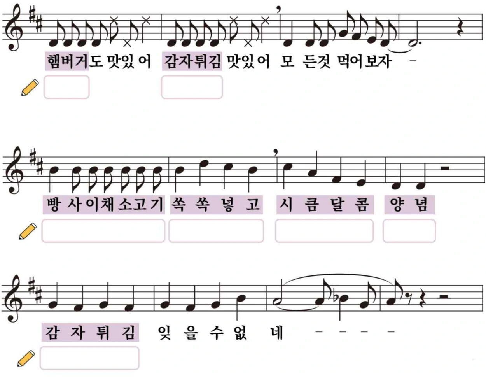
| 모둠 | 나라 | 음식 | 별점(색칠하기) |
|---|---|---|---|
대상 | 4학년 | 교과서 | 미술 50쪽 | ||||||||||||||||
|---|---|---|---|---|---|---|---|---|---|---|---|---|---|---|---|---|---|---|---|
프로젝트 | 지구촌 뉴스룸(8/8) | ake 표현하기 | |||||||||||||||||
본시 성취기준 | [4미03-04] 작품 감상에 흥미를 가지고 참여하며 작품에 대한 자신의 감상 관점을 존중할 수 있다. [4국06-01] 인터넷에서 학습에 필요한 다양한 자료를 탐색하고 목적에 맞게 자료를 선택한다. [4국06-02] 매체를 활용하여 간단한 발표 자료를 만든다. | 본시 관련교과 | 미술 국어 | ||||||||||||||||
학습목표 | 세계 미술가 탐험대가 되어 도슨트 활동을 할 수 있다. | ||||||||||||||||||
수업 모형 | 탐구학습모형 | 교과 역량 | 심미적 감성 역량 | ||||||||||||||||
수업전략 | 수업 의도 | - 세계 여러 나라의 미술가를 살펴보면서 미적으로 지각하고 반응함으로써 심미적 감성 역량을 함양함과 동시에 문화적 다양성을 자연스럽게 이해하고 포용하며 타문화의 가치를 존중하는 열린 태도를 기르도록 한다. - 예술이라는 보편적인 언어를 통해 세계시민으로서 갖추어야 할 다문화적 감수성과 의사소통 능력을 함양하고자 한다. | |||||||||||||||||
다문화 주도성 |
| ||||||||||||||||||
☑ | ☑ | ☑ | ☑ | ||||||||||||||||
이주배경학생 지도계획 | - 중국에서 국제학교를 다니면서 학습 활동을 하여 중국어보다는 국어에 익숙하나, 어휘나 문맥 파악에 있어서 어려움을 보이므로 표현활동을 할 때 도움을 주고자 한다. | ||||||||||||||||||
| 단계(시간) | 학습요소 | 교수·학습 활동 | 자료(▶) 및 유의점(☞) |
|---|---|---|---|
| 문제 제기 (5′) | 동기유발 | ▣ 학습동기 유발 ◦ 미술 전시나 미술 작품을 보았던 경험 나누기 ∙ 미술 전시나 미술 작품에 대한 설명을 들어본 적이 있나요? - 시립 미술관에서 오디오 설명을 들어본 적이 있습니다. ∙ 도슨트의 설명을 들으면 어떤 점이 좋을까요? - 좋아하는 작품에 대해 많은 것을 알게 될 것 같습니다. | ▶ 동영상 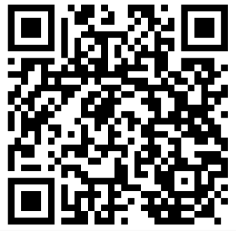 ☞ 같은 또래의 도슨트활동에 대한 자료를 통해 앞으로의 활동에 대한 기대를 가져 본다. |
| 공부할 문제 파악 | ▣ 공부할 문제 확인 ♣ 세계 미술가 탐험대가 되어 도슨트 활동을 해 봅시다. | ||
| 학습활동 안내 | ▣ 학습활동 안내 【활동1】 미술가 탐험대 출발 【활동2】 도슨트 카드 만들기 【활동3】 나는야 도슨트 | ||
| 활동 계획 수립 및 탐구하기 (5′) | 미술가 탐험대 되기 | ▣ 【활동1】 미술가 탐험대 출발 ◦ 미술가 탐험대가 되어 미술 작품을 찾아 떠나기 ∙ 어떤 미술가에 대해 탐험해 보고 싶었나요? - 백남준입니다. 피카소입니다. 고흐입니다. 등 ∙ 어떤 방법으로 조사했나요? - 인터넷에서 자료를 찾았습니다. - 저는 전시회에 가서 샀던 도록을 참고했습니다. 등 ∙ 조사한 자료를 정리해 봅시다. - 조사한 자료 중에서 필요한 자료를 정리한다. | ▶ 프레젠테이션, 태블릿PC ☞ 다양한 방법을 안내하고 학생들이 방법을 선택할 수 있도록 한다. ☞ 1차시로 구성하기에는 시간이 부족할 수 있어 미리 과제를 내거나 조사 활동을 본차시 전에 준비하도록 하여 시간을 조절한다. |
| 단계(시간) | 학습요소 | 교수·학습 활동 | 자료(▶) 및 유의점(☞) |
|---|---|---|---|
| 탐구 및 제작하기 (15′) | 도슨트 카드 만들기 | ▣ 【활동2】도슨트 카드 만들기 ◦ 미술가를 소개하는 도슨트 카드를 만들기 ∙ 소개하고 싶은 미술가에 대해 조사한 내용을 정리해 봅시다. - 친구들에게 소개할 수 있도록 발표 자료를 정리한다. ∙ 내가 좋아하는 작품과 이유가 드러나도록 만들어 봅시다. - 좋아하는 작품과 그 이유가 드러나도록 만든다. - 도슨트 카드를 만들어 발표 준비를 한다. | ▶ 캔바 초대코드, 태블릿PC, 키보드 자판 교사 제공 도슨트 카드 제작 자료 ☞ 소개 포스터를 만들어 공유하도록 한다. |
| 결과물 발표하기 (10′) | 도슨트 되어보기 | ▣ 【활동3】 나는야 도슨트 ◦ 도슨트가 되어 조사한 작품 소개하기 ∙ 도슨트가 되어 조사한 작품을 친구들에게 소개해 봅시다. - 자신있는 태도로 조사한 작품을 친구들에게 소개한다. ∙ 도슨트의 설명에서 궁금하거나 인상깊은 내용을 찾아 봅시다. - OOO 화가에게 다양한 작품이 있다는 것을 알았습니다. - 사실주의적 작품을 그리다가 인상주의 작품을 그리게 된 것을 알게 되었습니다. | ▶ 활동지 ☞ 도슨트가 된 것처럼 자신 있는 태도로 발표하도록 한다. ☞ 발표 시간이 부족할 경우 다음 시간을 활용하여 발표하도록 한다. |
| 학습내용 정리하기 (5′) | 학습내용 정리 | ▣ 학습내용 정리 ◦ 배운 내용 정리하기 ∙ 오늘 활동을 통해 알게 되었거나 느낀 점을 말해 봅시다. - 세계 미술가들에 대해 더 자세하게 알게 되었습니다. - 미술가들의 다양한 작품들을 통해 모두 다르다는 것을 알게 되었습니다. | |
| 차시 예고 | ▣ 차시 예고 ♣ 미술작품을 새롭게 표현하고 감상해 봅시다. |
판서 | 4. 미술가와 미술 작품 | ||||||||||||||
|---|---|---|---|---|---|---|---|---|---|---|---|---|---|---|---|
♣ 세계 미술 탐험대가 되어 도슨트 활동을 해 봅시다. |
|
| |||||||||||||
【활동1】 미술가 탐험대 출발 【활동2】 도슨트 카드 만들기 【활동3】 나는야 도슨트 |
평가 계획 | 평가내용 | 척도 | 채점 기준 | 평가방법 |
|---|---|---|---|---|
미술 작품과 미술가를 조사하는 활동에 적극적으로 참여하며 타문화를 존중하는 태도를 지녔는가? | 매우 잘함 | 미술 작품과 미술가를 조사하는 활동에 적극적으로 참여하여 자신 있는 태도로 발표하며, 타문화의 가치를 존중하는 열린 태도를 지녔음. | 관찰법 프로젝트 | |
잘함 | 미술 작품과 미술가를 조사하는 활동에 참여하여 바른 태도로 발표하며, 타문화의 가치를 이해하려고 노력함. | |||
보통 | 미술 작품과 미술가를 조사하는 활동에 참여하여 발표하고, 타문화의 가치를 이해하려고 노력함. | |||
노력 요함 | 미술 작품과 미술가를 조사하여 발표하는 활동에 참여하나 타문화를 존중하려는 노력이 필요함. | |||
이주배경학생 평가 시 유의점 | 자료를 조사하는 활동에는 어려움이 없으나 발표 시에 자신 있는 태도로 발표할 수 있도록 격려하고, 표현의 유려함보다 활동에 어려움이 없이 잘 참여하는지에 초점을 두어 평가한다. | |||
8차시 학생 활동지 · ake 표현하기 · 강점
교과 융합 프로젝트 수업
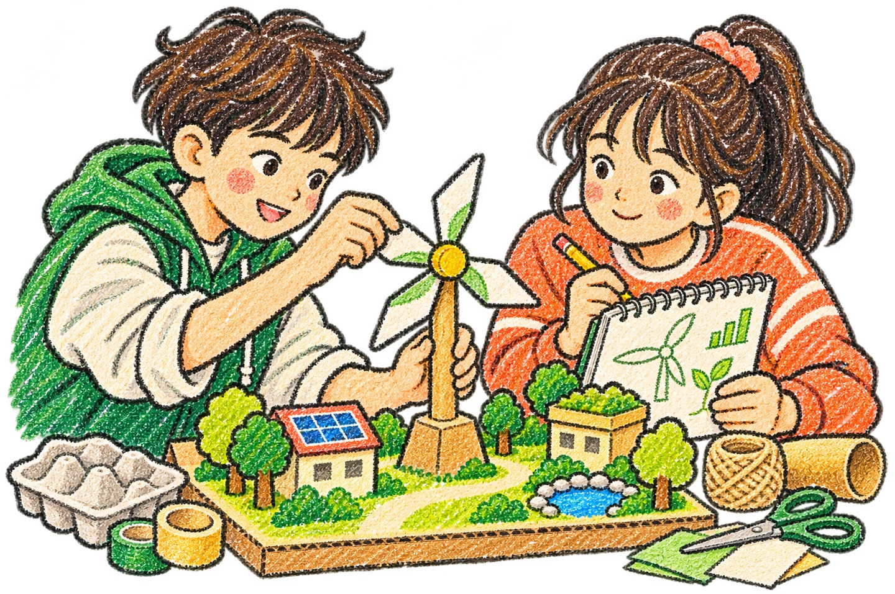
| 차시 | 교과 | 학습 주제 | 교과 역량 |
|---|---|---|---|
| 1 | 실과 | 내 능력으로 글로벌 환경 문제에 어떤 도움을 줄 수 있을지 발표해 보기 | 자기 성찰·계발 역량 |
| 2 | 국어 | 토의를 통해 세계의 환경문제를 해결해 보기 | 공동체·대인 관계 역량 |
| 3 | 수학 | 평균을 이용하여 자연재해의 원인 알아보기 | 정보처리 역량 |
| 4 | 과학 | 물 부족 문제 해결을 위한 장치 고안하기 | 과학적 탐구 능력 |
| 5 | 실과 | 세계의 환경문제 해결을 위한 구조물 디자인해 보기 | 실천적 문제해결 역량 |
| 6 | 미술 | 글로벌 환경 문제 해결을 주제로 온라인 전시회 만들어 참여하기 | 심미적 감성 역량 |
설계 의도본 프로젝트는 기후 변화라는 인류 공통의 과제를 세계 시민적 관점에서 이해하고, 다양성을 존중하는 다문화적 포용성을 바탕으로 지속 가능한 미래를 위한 기후 행동을 실천하는 데 목적이 있다. 학생들이 국경을 넘어 다양한 문화권의 세계시민들이 겪는 환경문제를 이해하고, 문화적 다양성을 존중하는 시각에서 기후정의와 공존의 가치를 배울 수 있도록 구성하였다. 또한 ‘초록 발자국’이라는 친근한 상징을 통해 학생들이 학교와 가정, 지역사회에서 스스로 실천할 수 있는 구체적인 기후 행동을 탐구하고 실행하도록 프로젝트 활동을 구안하였다.
| 창의적 체험활동 진로 | [6실01-07] 직업의 필요성을 이해하고 적성, 흥미, 성격에 따라 진로 발달 계획을 세우고 주도적으로 탐색한다. |
|---|---|
| 국어 4. 의견을 조정해요 | [6국01-06] 토의에 협력적으로 참여하며 서로의 의견을 비교하고 조정한다. |
| 수학 6. 평균과 가능성 | [6수04-01] 평균의 의미를 알고, 자료를 수집하여 평균을 구하고 해석할 수 있다. |
| 과학 2. 날씨와 우리 생활 | [6과06-02] 이슬, 안개, 구름을 관찰하고, 공통점과 차이점을 찾을 수 있다. |
| 실과 5. 건설과 디지털 기술 | [6실04-01] 친환경 건설 구조물을 이해하고, 생활 속 건설 구조물을 탐색하여 간단한 구조물을 체험하면서 건설 기술에 대한 가치를 인식한다. |
| 미술 5. 다양한 세계 문화 축제 | [6미02-05] 미술과 타 교과의 내용과 방법을 융합하는 활동을 자유롭게 시도할 수 있다. |
| 단계 · 프로그램 | 차시 | 주요 학습 내용 | 관련 교과 | 학습 자료 |
|---|---|---|---|---|
| et준비하기 |
1 |
| 창·체(진로) | 동영상 프레젠테이션 |
| 2 |
| 국어 | 활동지 프레젠테이션 | |
| xplore탐구하기 | 3 |
| 수학 | 동영상 프레젠테이션 |
| 4 |
| 과학 | 그림 자료 프레젠테이션 | |
| nite협력하기 | 5 |
| 실과 | 태블릿PC 프레젠테이션 |
| ake표현하기 |
6 |
| 미술 창·체 | ZEP |
et①②ake⑥| 평가내용 | 평가방법 | 매우 잘함 | 잘함 | 보통 | 노력 요함 |
|---|---|---|---|---|---|
| ①환경을 위한 나의 능력 사용서 발표[6실01-07] | 구술 | 능력 사용서를 충실히 쓰고 적극적으로 발표함 | 능력 사용서를 쓰고 그 내용을 발표함 | 능력 사용서를 쓰나 발표에는 참여하지 못함 | 사용서 작성과 발표 모두에 도움이 필요함 |
| ②세계 환경문제 해결 방안 토의[6국01-06] | 관찰법 | 토의 절차를 지켜 구체적인 해결책을 제안함 | 토의 절차를 알고 실천할 일을 제안함 | 토의 예절과 환경 보호에 필요한 태도를 이해함 | 토의와 환경문제 해결이 필요한 까닭을 이해함 |
| ③기후 자료의 평균으로 미래 뉴스 쓰기[6수04-01] | 논술 관찰법 | 평균으로 기후 행동에 따른 산불 변화를 보도함 | 평균으로 산불 원인을 짚어 미래 뉴스를 작성함 | 평균과 기후 행동을 연결해 미래 뉴스를 작성함 | 평균의 필요성을 알고 환경 관련 뉴스를 작성함 |
| ④이슬·안개를 이용한 물 포집 장치 고안[6과06-02] | 관찰법 | 실험 결과로 독창적인 물 포집 장치를 고안함 | 실험 결과를 바탕으로 물 포집 장치를 고안함 | 실험에 적극 참여하고 물 포집 장치를 구상함 | 실험에 참여해 여러 포집 장치의 역할을 이해함 |
| ⑤세계 환경문제 해결을 위한 구조물 설계[6실04-01] | 관찰법 | 구체적인 해결 아이디어를 구조물 설계에 적용함 | 환경문제에 맞는 구조물을 구상해 설계함 | 생각을 정리해 구조물 설계 아이디어를 제시함 | 환경문제 해결에 구조물이 필요한 이유를 이해함 |
| ⑥모둠 온라인 전시회 기획과 작품 설명[6미02-05] | 구술 | 전시 계획에 적극 참여해 작품을 분명히 설명함 | 모둠 전시 계획에 참여하고 작품을 설명함 | 전시를 계획하나 작품 설명에 도움이 필요함 | 전시 계획과 작품 설명 모두에 도움이 필요함 |
| 이주배경학생 평가 시 유의점 | |||||
①사용서 질문을 미리 주어 발표할 생각을 정리하게 한다. |
②살았던 지역의 환경 차이를 존중하며 해결책을 나누게 한다. |
||||
③지역마다 자연재해 경험이 다름을 존중하며 자료를 비교한다. |
④에티오피아와 칠레의 물 확보 방법을 실험과 연결하게 한다. |
||||
⑤여러 나라의 환경문제에 활용할 수 있는 설계인지 살핀다. |
⑥기후위기를 배운 경험의 차이와 한국어 표현 수준을 고려한다. |
||||
5학년 프로젝트 교수·학습 과정안 | ||||||||||||
|---|---|---|---|---|---|---|---|---|---|---|---|---|
융합과목 | 실과, 국어 | 대 상 | 5학년 | 프로젝트 단계 | et (준비하기) | |||||||
프로젝트 | 국경 없는 초록 발자국, 세계를 잇는 미래(1/8) | |||||||||||
성취기준 | [6실01-07] 직업의 필요성을 이해하고 적성, 흥미, 성격에 따라 진로 발달 계획을 세우고 주도적으로 탐색한다. | |||||||||||
학습목표 | 내 능력으로 글로벌 환경 문제에 어떤 도움을 줄 수 있을지 발표할 수 있다. | |||||||||||
수업전략 | 수업모형 | 문제 중심 학습 | 교과 역량 | 자기 성찰·계발 역량 | ||||||||
다문화 주도성 |
| |||||||||||
☐ | ☑ | ☑ | ☐ | |||||||||
| 단계(시간) | 학습요소 | 교수·학습 활동 | 자료(▶) 및 유의점(☞) |
|---|---|---|---|
| 문제 파악, 분석 (5′) | 동기유발 | ▣ 학습동기 유발 ◦ 초등학생 장래희망 퀴즈 ∙ 영상을 살펴보고 직업을 선택할 때는 무엇을 고려해야 할지 생각해봅시다. | ▶ 유튜브동영상 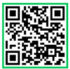 |
| 공부할 문제 파악 | ▣ 공부할 문제 확인 ♣ 내 능력으로 글로벌 환경 문제에 어떤 도움을 줄 수 있을지 발표해 봅시다. | ||
| 정보 수집 및 해결책 탐색 (10′) | 나의 능력 알아보기 | ▣ 【활동1】 나의 능력 알아보기 ◦ 내가 가진 능력 알아보기 ∙ 지난 시간 보았던 유퀴즈 영상을 떠올려봅시다. 박찬암 화이트 해커는 어떤 능력을 가지고 있나요? ∙ 해킹 기술이 나쁜 방향으로 쓰인다면 어떻게 될까요? ∙ 능력은 어떻게 사용하는지가 중요합니다. 여러 가지 상황에서 나는 능력을 어떤 방향으로 사용할지 선택해 봅시다. | ▶ 프레젠테이션 |
| 해결책의 개발 및 실현 (20‘) | 나의 능력 발표하기 | ▣ 【활동2】 능력 사용서 만들어 발표하기 ◦ 능력 사용서 만들어 발표하기 ∙ 글로벌 환경 문제에 도움을 주기 위해 나의 능력을 어떻게 사용하면 좋을지 고민하여 질문에 답해 봅시다. ∙ 앞에서 답한 내용을 떠올리며 ‘나의 능력 사용서’를 꾸며 발표해 봅시다. | ▶ 활동지 ☞ 시간이 부족할 것을 대비하여 미리 생각해볼 수 있도록 이전차시에 교샤가 질문을 던져놓는다. |
| 나의 미래 명함 소개하기 | ▣ 【활동3】 능력이 추가된 미래 명함 발표하기 ◦ 나의 미래 명함 소개하기 ∙ 지난 시간에 만든 나의 미래 명함에는 빈칸이 있습니다. 빈칸에 내가 가진 능력을 채워 친구들에게 소개해봅시다. | ▶ 학생별 미래 명함 작품 ☞ 전시학습에 만든 나의 미래 명함을 활용할 수 있도록 한다. | |
| 결과 평가 및 반성 (5′) | 학습내용 정리하기 | ▣ 학습내용 정리 ◦ 활동 소감 나누기 ∙ 오늘 공부하면서 알게 된 점을 말해 봅시다. | |
▣ 차시 예고 ♣ 글로벌 환경문제 해결 방법에 대해 토의해봅시다. |
대상 | 5학년 | 교과서 | 국어 199~201쪽 | |||||||||||
|---|---|---|---|---|---|---|---|---|---|---|---|---|---|---|
프로젝트 | 글로벌 기후 히어로(2/6) | et (준비하기) | ||||||||||||
본시 성취기준 | [6국01-06] 토의에 협력적으로 참여하며 서로의 의견을 비교하고 조정한다. | 본시 관련교과 | 국어 | |||||||||||
학습목표 | 토의를 통해 세계의 환경 문제를 해결할 수 있다. | |||||||||||||
수업 모형 | 문제 해결 학습 모형 | 교과 역량 | 공동체·대인 관계 역량 | |||||||||||
수업전략 | 수업 의도 | - 토의의 절차와 방법을 확인하고, 협력적 의사소통 과정을 통해 세계의 환경 문제를 해결하기 위한 방법을 마련하게 한다. - 세계 여러 나라의 환경 문제에는 어떤 것들이 있는지 알아보고, 그 문제를 해결하기 위한 방법을 다양하게 제시한 뒤 최적의 방법을 선택함으로써 글로벌 시민으로서 세계 환경 문제에 관심을 갖고 이를 해결하기 위한 자세 함양하게 한다. | ||||||||||||
다문화 주도성 |
| |||||||||||||
☐ | ☑ | ☑ | ☐ | |||||||||||
이주배경학생 지도계획 | - 이주배경학생이 살았던 나라에는 어떤 환경 문제가 있는지 이야기함으로써 다른 학생들과 경험을 나눈다. - 학생들이 세계 여러 나라의 환경 문제에 관심을 가질 수 있도록 다양한 나라의 환경 문제와 그 해결 방안을 생각할 수 있도록 격려한다. | |||||||||||||
| 단계(시간) | 학습요소 | 교수·학습 활동 | 자료(▶) 및 유의점(☞) |
|---|---|---|---|
| 문제 인식 (5′) | 동기유발 | ▣ 학습동기 유발 ◦ 선생님의 자료를 살펴보며 학습할 내용 생각하기 ∙ 세계에는 어떤 어려움이 있습니까? - 환경이 오염되어 사람들이 고통받고 있습니다. ∙ 여러 사람의 의견이 다를 경우 어떻게 해결하면 될까요? - 토의를 통해 문제를 해결할 수 있습니다. | ▶ 프레젠테이션 ☞ 세계에 여러 문제가 있음을 인식하도록 다양한 자료를 준비하고, 의사 결정 방법으로서 토의를 떠올리도록 한다. |
| 공부할 문제 파악 | ▣ 공부할 문제 확인 ♣ 토의를 통해 세계의 환경문제를 해결해 봅시다. | ||
| 학습활동 안내 | ▣ 학습활동 안내 【활동1】 토의 주제 확인하기 【활동2】 토의하기 【활동3】 의견 나누기 | ||
| 문제 해결 방법 찾기 (6′) | 토의 계획하기 | ▣ 【활동1】 토의 주제 확인하기 ◦ 세계의 여러 가지 환경문제 떠올리기 ∙ 세계에서 일어나는 환경문제에는 어떤 것이 있습니까? - 인도의 대기오염 문제가 있습니다. - 파리의 수질 오염 문제가 있습니다. ◦ 토의 절차 확인하고 토의 주제 정하기 ∙ 이번 시간 토의 주제를 무엇으로 정하면 좋을까요? - 세계의 대기 오염 문제를 해결하기 위해 실천할 일을 정하면 좋겠습니다. - 여러 나라의 수질 오염 문제를 해결하기 위한 방안을 정하면 좋겠습니다. - 농업 중심의 나라에서 일어나는 토양 오염 문제를 해결하기 위한 방안을 정하면 좋겠습니다. | ▶ 프레젠테이션 ☞ 세계의 여러 나라에서 다양한 환경 문제가 발생함을 학생들이 인식할 수 있도록 하며, 여러 환경 문제 중 어떤 것을 토의 주제로 정할지 이야기하도록 안내한다. |
| 단계(시간) | 학습요소 | 교수·학습 활동 | 자료(▶) 및 유의점(☞) |
|---|---|---|---|
| 문제 해결 하기 (9′) | 의견 나누기 의견 모으기 | ▣ 【활동2】 토의하기 ◦ 토의 주제에 대한 자신의 의견과 이유 말하기 ∙ 토의 주제에 대한 자신의 의견과 그 이유를 작성하고, 모둠 친구와 이야기해 봅시다. ∙ 토의를 할 때 어떤 점에 주의해야 할까요? - 토의 절차를 잘 지키며 토의에 참여해야 합니다. - 의견의 장점과 단점을 논리적으로 생각해야 합니다. - 친구의 의견을 존중하며 끝까지 경청합니다. - 여러 나라의 문화적 특성과 자연환경, 인문환경 등을 고려하여 해결 방안을 마련해야 합니다. ◦ 토의하기 ∙ 마련한 의견을 친구들과 나누어 봅시다. ∙ 의견을 모을 때 어떤 점에 주의해야 할까요? - 여러 나라에서 모두 실천 가능한지 생각해야 합니다. | ▶ 활동지 ☞ 토의를 할 때 다른 사람의 의견을 존중하는 태도가 중요함을 강조하며, 바른 태도로 토의에 참여하도록 안내한다. ☞ 세계의 환경문제를 해결하기 위한 방안을 마련하는 과정이므로 여러 나라의 고유한 환경을 고려하여 해결 방안을 마련해야 함을 강조한다. |
| 일반화 하기 (15′) | 의견 결정하기 | ▣ 【활동3】 의견 나누기 ◦ 의견을 나누고 조정하며 최종 결정하기 ∙ 앞선 활동에서 마련한 의견을 친구들과 나누어 봅시다. ◦ 최종 의견을 함께 결정하며, 배운 내용 정리하기 ∙ 마련된 해결 방안이 여러 나라에서 실천 가능한 방법인지 다시 한 번 생각해 봅시다. | ▶ 활동지 ☞ 해결 방안이 여러 나라의 환경문제 해결에 실질적으로 도움이 되면서도 문화적으로 수용 가능한지 다시 한 번 점검한다. |
| 정리 하기 (5′) | 학습내용 정리 | ▣ 학습내용 정리 ◦ 배운 내용 정리하기 ∙ 오늘 공부하면서 알게 된 점을 말해 봅시다. - 세계에는 여러 환경 문제가 있다는 것을 알았습니다. - 토의를 통해 세계의 환경 문제를 해결할 수 있다는 것을 알았습니다. | ▶ 프레젠테이션 |
| 차시 예고 | ▣ 차시 예고 ♣ 이번 단원에서 배운 내용을 실천해 봅시다. |
판서 | 4. 의견을 조정해요 | |||
|---|---|---|---|---|
♣ 토의를 통해 세계의 환경문제를 해결해 봅시다. |
|
| ||
【활동1】 토의 주제 확인하기 【활동2】 토의하기 【활동3】 의견 나누기 |
평가 계획 | 평가내용 | 척도 | 채점 기준 | 평가방법 |
|---|---|---|---|---|
토의의 절차와 올바른 토의 방법을 지키며 세계의 환경문제를 해결하기 위한 방안을 제시할 수 있는가? | 매우 잘함 | 토의의 절차와 방법을 정확히 알고 잘 지키며 세계의 환경 문제를 해결하기 위한 방안을 구체적으로 제시한다. | 관찰법 | |
잘함 | 토의의 절차와 방법을 알고 있으며, 세계의 환경 문제를 해결하기 위해 실천할 일을 제시한다. | |||
보통 | 토의를 하기 위한 올바른 태도를 알고 있으며, 세계의 환경 문제를 해결하기 위한 바른 태도를 알고 있다. | |||
노력 요함 | 협력적 의사 결정 과정으로서 토의의 필요성을 인식하며, 세계의 환경 문제를 해결해야 할 필요성을 인식한다. | |||
이주배경학생 평가 시 유의점 | 이주배경학생이 살았던 나라와 우리나라의 자연환경 및 인문환경이 다름을 충분히 인식하고, 이를 바탕으로 보편적 가치로서의 환경 보호를 강조한다. | |||
2차시 학생 활동지 · et 준비하기 · 마음
| 이름 | 의견 | 까닭 |
|---|---|---|
대상 | 5학년 | 교과서 | 수학 136~137쪽 | |||||||||||
|---|---|---|---|---|---|---|---|---|---|---|---|---|---|---|
프로젝트 | 글로벌 기후 히어로(3/6) | xplore(탐구하기) | ||||||||||||
본시 성취기준 | [6수04-01] 평균의 의미를 알고, 자료를 수집하여 평균을 구하고 해석할 수 있다. | 본시 관련교과 | 수학 | |||||||||||
학습목표 | 평균을 이용하여 자연재해의 원인을 알 수 있다. | |||||||||||||
수업 모형 | 원리 탐구 수업 모형 | 교과 역량 | 정보처리 역량 | |||||||||||
수업전략 | 수업 의도 | - 실생활의 여러 자료값을 이용하여 평균을 구하고 분석하는 과정을 통해 대푯값의 필요성을 인식하고 정보를 활용하여 환경 문제의 원인을 탐구한다. - 환경 문제와 관련한 여러 정보를 분석하며 세계 여러 곳의 환경 문제에 관심을 가지고 문제의식을 확장하여 지속 가능한 미래를 위한 실천적 방안을 모색한다. | ||||||||||||
다문화 주도성 |
| |||||||||||||
☐ | ☑ | ☑ | ☐ | |||||||||||
이주배경학생 지도계획 | - 이주배경학생이 살았던 나라의 자연재해 관련 이야기를 함으로써 다른 학생들과 자신의 경험을 공유한다. - 자연재해가 특정 국가의 개별적인 문제가 아닌 전 지구적 공동 대응이 필요한 과제임을 인식하게 하여 환경문제에 대한 관심을 높인다. | |||||||||||||
| 단계(시간) | 학습요소 | 교수·학습 활동 | 자료(▶) 및 유의점(☞) |
|---|---|---|---|
| 문제 상황 제시 (5′) | 동기유발 | ▣ 학습동기 유발 ◦ 선생님의 자료를 살펴보며 학습할 내용 확인하기 ∙ 세계 여러 나라에 어떤 문제가 발생하고 있나요? - 가뭄과 홍수 산불 등 재해로 사람들이 고통받고 있습니다. ∙ 문제의 원인을 찾기 위해 무엇을 확인해야 할까요? - 재해가 생긴 지역의 강수량을 알아야 할 것 같습니다. | ▶ 프레젠테이션 ☞ 재해 문제의 원인을 객관적으로 분석하기 위한 도구로서 ‘평균’의 필요성을 인지하도록 지도한다. |
| 공부할 문제 파악 | ▣ 공부할 문제 확인 ♣ 평균을 이용하여 자연재해의 원인을 알아봅시다. | ||
| 학습활동 안내 | ▣ 학습활동 안내 【활동1】 평균 구하기 【활동2】 자료 분석하기 【활동3】 미래 뉴스 만들기 | ||
| 수학적 원리의 필요성 인식 (6′) | 평균을 활용하여 기후변화 알아보기 | ▣ 【활동1】 평균 구하기 ◦ 그리스의 가옥 문화를 통해 기후 추측하기 ∙ 그리스의 집 모양은 어떻게 생겼나요? - 지붕이 평평하고 벽이 하얀색입니다. ∙ 그리스의 집 지붕이 평평한 이유를 추측해 봅시다. - 비나 눈이 많이 오지 않기 때문일 것 같습니다. ◦ 1983년과 2023년 그리스 월별 평균 기온과 강수량 구하기 ∙ 두 시기의 그리스의 월별 평균 기온은 어떻게 변했나요? - 1983년에 비해 2023년은 평균 0.6도 증가했습니다. ∙ 두 시기 그리스의 월별 평균 강수량은 어떻게 변했나요? - 1983년에 비해 2023년은 평균 32mm 줄어들었습니다. ∙ 40년 동안 그리스의 기후는 어떻게 변했나요? - 예전에 비해 더 따뜻해지고 더 적게 비가 내립니다. | ▶ 프레젠테이션, 활동지, 계산기 ☞ 가옥구조를 통해 그 나라의 기후를 추측할 수 있도록 유도한다. ☞ 주어진 자료값의 평균을 구하고 분석하는 과정에 집중할 수 있도록 계산기 사용을 허용한다. |
| 단계(시간) | 학습요소 | 교수·학습 활동 | 자료(▶) 및 유의점(☞) |
|---|---|---|---|
| 조작 및 탐구 활동 (10′) | 자료 분석 및 기후 변화 원인 탐구하기 | ▣ 【활동2】 자료 분석하기 ◦ 기후자료를 비교하여 기후 변화 원인 분석하기 ∙ 두 시기 그리스의 월별 산불 발생 수의 평균을 구해봅시다. - 1983년 월평균 80건, 2023년 월평균 800건이 발생했습니다. ∙ 두 시기의 평균 산불 발생 수와 기온, 강수량 사이에는 어떤 관련이 있나요? - 기온이 높아지고 강수량이 줄어들면서 산불 발생 수가 늘어나고 있습니다. ◦ 평균값을 이용하여 잃어버린 자료값 구하기 ∙ 일부가 불타버린 표의 7월 기온 값은 어떻게 구해야 할까요? - 불타지 않은 기온 값들을 다 더한 값과 자료 수와 평균을 곱한 값의 차이를 구하면 불탄 곳의 자료값을 찾을 수 있습니다. | ▶ 프레젠테이션, 활동지 ☞ 1983년, 2023년 월별 기온과 강수량 자료를 활용하여 연평균 값을 구해보고 시기에 따른 기후 변화와 산불 발생 빈도와의 관련성을 찾도록 안내한다. |
| 수학적 원리의 형식화 (15′) | 평균값을 활용하여 뉴스 만들기 | ▣ 【활동3】 미래 뉴스 만들기 ◦ 평균을 활용하여 미래의 기후 변화 예측하기 ∙ 주어진 지역들의 2010년대 평균 기온과 평균 화재 발생수를 구한 뒤 한 가지 카드를 선택하여 2030년 미래 뉴스 기사를 작성해 봅시다. ∙ 두 지역 기후 변화의 공통점은 무엇인가요? - 시간이 지날수록 평균 기온이 높아지며 산불 발생 수가 함께 많아졌습니다. | ▶ 활동지, 기후행동 실천카드, 기후행동 무관심 카드 ☞ 모둠별로 기후행동 실천카드, 기후행동 무관심 카드 중 한 가지 카드를 선택하여 이후 벌어질 일을 예측하여 뉴스를 만들도록 안내한다. |
| 정리 하기 (4′) | 학습내용 정리 | ▣ 학습 내용 정리 ◦ 배운 내용 정리하기 ∙ 오늘 공부하면서 알게 된 점을 말해 봅시다. - 평균을 통해 기온 변화가 자연재해 발생과 관련이 있음을 알게 되었습니다. - 여러 나라의 기후 위기에 대해 좀 더 관심을 갖게 되었습니다. | ▶ 프레젠테이션 |
| 차시 예고 | ▣ 차시 예고 ♣ 물 부족 문제 극복을 위한 여러 나라의 노력을 알아봅시다. |
판서 | 6. 평균과 가능성 | ||||||||||||||||||||||||||||||||||||||||||||||||||||||||||||||||||||||||||||||||||||||||||||||||||||||||||||||||||||||||||||||||||||||||||||||||||||||||||
|---|---|---|---|---|---|---|---|---|---|---|---|---|---|---|---|---|---|---|---|---|---|---|---|---|---|---|---|---|---|---|---|---|---|---|---|---|---|---|---|---|---|---|---|---|---|---|---|---|---|---|---|---|---|---|---|---|---|---|---|---|---|---|---|---|---|---|---|---|---|---|---|---|---|---|---|---|---|---|---|---|---|---|---|---|---|---|---|---|---|---|---|---|---|---|---|---|---|---|---|---|---|---|---|---|---|---|---|---|---|---|---|---|---|---|---|---|---|---|---|---|---|---|---|---|---|---|---|---|---|---|---|---|---|---|---|---|---|---|---|---|---|---|---|---|---|---|---|---|---|---|---|---|---|---|---|
♣ 평균을 이용하여 자연재해의 원인을 분석해 봅시다. | <자료1> 월평균 기온
<자료3> 월평균 산불 발생 수
<자료2> 월평균 강수량
<미래 뉴스 만들기>
|
| |||||||||||||||||||||||||||||||||||||||||||||||||||||||||||||||||||||||||||||||||||||||||||||||||||||||||||||||||||||||||||||||||||||||||||||||||||||||||
【활동1】 평균 구하기 【활동2】 자료 분석하기 【활동3】 미래 뉴스 만들기 |
평가 계획 | 평가내용 | 척도 | 채점 기준 | 평가방법 |
|---|---|---|---|---|
평균을 이용하여 자연재해의 원인을 분석하고 근거를 들어 미래 뉴스를 만들 수 있는가? | 매우 잘함 | 평균을 이용하여 자연재해의 원인을 정확히 분석하고 기후행동 카드에 어울리는 미래의 뉴스를 잘 만들 수 있다. | 논술, 관찰법 | |
잘함 | 평균을 이용하여 자연재해의 원인을 분석하고 기후행동 카드에 미래의 모습을 예측한 뉴스를 만들 수 있다. | |||
보통 | 평균을 이용하여 주어진 자료의 실천카드와 어울리는 미래의 모습이 담긴 뉴스를 만들 수 있다. | |||
노력 요함 | 평균의 의미와 필요성을 인식하며 환경 문제와 관련된 미래 모습이 담긴 뉴스를 만들 수 있다. | |||
이주배경학생 평가 시 유의점 | 이주배경학생이 살았던 나라의 기후로 인한 자연재해가 다른 나라의 자연재해와 다를 수 있음을 충분히 인식하고, 세계의 기후 변화가 특정 국가의 문제가 아닌 전지구적 공동 대응이 필요함을 강조한다. | |||
3차시 학생 활동지 · xplore 탐구하기 · 실력
| 그리스 | 2010년 | 2012년 | 2014년 | 2016년 | 2018년 | 평균 |
|---|---|---|---|---|---|---|
| 연평균 기온 (℃) | 14.9 | 15.3 | 15.4 | 15.6 | 15.8 | |
| 산불 발생 수 (건) | 4,200 | 5,800 | 6,100 | 7,200 | 5,640 |
| 호주 | 2010년 | 2012년 | 2014년 | 2016년 | 2018년 | 평균 |
|---|---|---|---|---|---|---|
| 연평균 기온 (℃) | 18.1 | 18.4 | 19.3 | 19.5 | 19.7 | |
| 산불 발생 수 (건) | 2,100 | 2,800 | 3,100 | 3,400 | 3,240 |
나라 그리스 / 호주 기온과 산불 발생의 변화 증가 / 감소
| 2028 | 2030 | 2032 | 2034 | 2036 | 평균 |
|---|---|---|---|---|---|
| 15.8 | 15.3 | 14.3 | 15.2 |
단위 ℃
우리의 행동으로 의 연평균 기온이 점점 하여 산불 발생이 점차 하였습니다.
| 2028 | 2030 | 2032 | 2034 | 2036 | 평균 |
|---|---|---|---|---|---|
| 15.8 | 16.2 | 16.6 | 16.2 |
단위 ℃
우리의 행동으로 의 연평균 기온이 점점 하여 산불 발생이 점차 하였습니다.
5학년 프로젝트 교수·학습 과정안 | ||||||||||||
|---|---|---|---|---|---|---|---|---|---|---|---|---|
융합과목 | 과학 | 대 상 | 5학년 | 프로젝트 단계 | xplore(탐구하기) | |||||||
프로젝트 | 국경 없는 초록 발자국, 세계를 잇는 미래(4/6) | |||||||||||
성취기준 | [6과06-02] 이슬, 안개, 구름을 관찰하고, 공통점과 차이점을 찾을 수 있다. | |||||||||||
학습목표 | 물 부족 문제 해결을 위한 장치를 고안할 수 있다. | |||||||||||
수업전략 | 수업모형 | 탐구 학습 모형 | 교과 역량 | 과학적 탐구 능력 | ||||||||
다문화 주도성 |
| |||||||||||
☑ | ☑ | ☑ | ☐ | |||||||||
| 단계(시간) | 학습요소 | 교수·학습 활동 | 자료(▶) 및 유의점(☞) |
|---|---|---|---|
| 문제 파악 및 가설 설정 (5′) | 동기유발 | ▣ 학습동기 유발 ◦ 영상 자료 살펴보기 ∙ 영상을 보고 기후 변화의 모습을 살펴봅시다. ∙ 건조한 지역에 사는 사람들은 어떻게 물을 얻을 수 있을까요? | ▶ 프레젠테이션 ☞ 학생들이 영상 속 세계의 기후 변화 문제에 관심을 갖도록 한다. |
| 공부할 문제 파악 | ▣ 공부할 문제 확인 ♣ 물 부족 문제 해결을 위한 장치를 고안해 봅시다. | ||
| 실험 설계 및 실험 (8′) | 응결현상 관찰하기 | ▣ 【활동1】 이슬 발생 실험하기 ◦ 응결 현상을 통해 물을 얻는 방법 탐구하기 ∙ 차가운 물체를 밖에 두면 어떤 변화가 생기나요? ∙ 에티오피아의 와카워터는 어떻게 물을 만들 수 있을까요? ∙ 이슬 발생 실험을 통해 물을 만들어 봅시다. | ▶ 이슬 발생 실험 도구 ☞ 차가운 컵 표면에 맺힌 액체가 어디에서 왔는지 발문을 통해 학생들의 선개념을 확인한다. |
| 가설 검증 (12′) | 물 만들기 실험하기 | ▣ 【활동2】 안개로 물 만들기 실험하기 ◦ 실험을 통해 만든 안개를 응결시켜 물방울 만들기 ∙ 칠레 아타카마 사막의 안개 포집 장치는 왜 만들어졌나요? ∙ 안개를 포집하기 위해 필요한 조건은 무엇이 있나요? ∙ 안개 발생 실험으로 만든 안개를 포집하여 물을 만들어 봅시다. | ▶ 프레젠테이션, 안개 발생 실험 도구 ☞ 건조한 지역에서 물을 얻기 위해 필요한 조건을 일교차와 관련지어 설명한다. |
| 적용 및 새로운 문제 발견 (10′) | 물 포집 장치 고안하기 | ▣ 【활동3】 친환경 포집 구조물 디자인하기 ◦ 물 부족 문제 해결을 위한 친환경 포집 구조물 디자인하기 ∙ 세계 여러 나라의 물 부족 문제 해결을 위한 이슬과 안개 포집 구조물을 디자인해 봅시다. | ▶ 활동지, 태블릿PC |
| 정리하기 (5′) | 학습내용 정리하기 | ▣ 학습내용 정리 ◦ 배운 내용과 느낀 점 이야기하기 ∙ 오늘 학습을 통해 알게 된 점을 말해 봅시다. | |
▣ 차시 예고 ♣ 세계의 환경문제 해결을 위한 구조물을 디자인해 봅시다. |
5학년 프로젝트 교수·학습 과정안 | ||||||||||||
|---|---|---|---|---|---|---|---|---|---|---|---|---|
융합과목 | 실과 | 대 상 | 5학년 | 프로젝트 단계 | nite (협력하기) | |||||||
프로젝트 | 국경 없는 초록 발자국, 세계를 잇는 미래(5/6) | |||||||||||
성취기준 | [6실04-01] 친환경 건설 구조물을 이해하고, 생활 속 건설 구조물을 탐색하여 간단한 구조물을 체험하면서 건설 기술에 대한 가치를 인식한다. | |||||||||||
학습목표 | 세계의 환경문제 해결을 위한 구조물을 디자인할 수 있다. | |||||||||||
수업전략 | 수업모형 | 문제 해결 학습 모형 | 교과 역량 | 실천적 문제해결 역량 | ||||||||
다문화 주도성 |
| |||||||||||
☐ | ☑ | ☑ | ☑ | |||||||||
| 단계(시간) | 학습요소 | 교수·학습 활동 | 자료(▶) 및 유의점(☞) |
|---|---|---|---|
| 문제 인식 (5′) | 동기유발 | ▣ 학습동기 유발 ◦ 사진 자료 살펴보기 ∙ 화면 속 사진 자료의 사람들에게 어떤 어려움이 있나요? | ▶ 프레젠테이션 ☞ 학생들이 사진 속 세계 환경문제에 관심을 갖도록 한다. |
| 공부할 문제 파악 | ▣ 공부할 문제 확인 ♣ 세계의 환경문제 해결을 위한 구조물을 디자인해 봅시다. | ||
| 문제 해결 계획 (8′) | 세계의 환경문제 떠올리기 | ▣ 【활동1】 세계의 환경문제 ◦ 세계의 환경문제에는 어떤 것이 있는지 알아보기 ∙ 세계의 환경문제에는 어떤 것이 있나요? | ☞ 학생들이 세계의 다양한 환경문제를 떠올리며 그로벌 환경문제에 관심을 기울일 수 있도록 안내한다. |
| 탐색 및 실행 (12′) | 환경문제 해결을 위한 구조물 설계하기 | ▣ 【활동2】 구조물 디자인하기 ◦ 환경문제 해결을 위한 구조물 디자인하기 ∙ 글로벌 환경문제 해결을 위한 구조물을 디자인해 봅시다. ∙ 구조물을 디자인할 때 어떤 점을 생각해야 할까요? | ☞ 세계 여러 나라의 환경문제 해결에 보편적으로 활용 가능한 구조물 디자인을 할 수 있도록 안내한다. |
| 결과 발표 및 평가 (10′) | 디자인 결과 발표하기 | ▣ 【활동3】 디자인 발표하기 ◦ 글로벌 환경문제 해결을 위한 구조물 디자인 발표하기 ∙ 세계 여러 나라의 환경문제 해결을 위한 구조물 디자인을 발표해 봅시다. | ▶ 태블릿컴퓨터 |
| 평가 하기 (5′) | 학습내용 정리하기 | ▣ 학습내용 정리 ◦ 배운 내용과 느낀 점 이야기하기 ∙ 오늘 학습을 통해 알게 된 점을 말해 봅시다. | |
▣ 차시 예고 ♣ 디지털 기술의 특징을 알아봅시다. |
대상 | 5학년 | 교과서 | 미술 58~59쪽 | |||||||||||
|---|---|---|---|---|---|---|---|---|---|---|---|---|---|---|
프로젝트 | 글로벌 기후 히어로(6/6) | ake (표현하기) | ||||||||||||
본시 성취기준 | [6미02-05] 미술과 타 교과의 내용과 방법을 융합하는 활동을 자유롭게 시도할 수 있다. | 본시 관련교과 | 미술 창·체 | |||||||||||
학습목표 | 글로벌 환경 문제 해결을 주제로 온라인 전시회 만들어 참여할 수 있다. | |||||||||||||
수업 모형 | 창의적 문제 해결법 | 교과 역량 | 심미적 감성 역량 | |||||||||||
수업전략 | 수업 의도 | - 글로벌 환경 문제 해결을 촉구하는 작품을 만들고, 이를 친구들과 공유하며 환경 문제 해결을 위해 행동하겠다는 다짐을 다져본다. - 온라인 전시 계획을 세워 온라인 전시 공간을 만들어 전시를 실행하며, 자기주도적 학습 능력과 협력적 소통 능력을 기를 수 있도록 한다. | ||||||||||||
다문화 주도성 |
| |||||||||||||
☐ | ☑ | ☑ | ☐ | |||||||||||
이주배경학생 지도계획 | - 캐나다 이주배경학생은 캐나다의 사례를 찾아보고, 본인의 경험과 관련하여 글로벌 환경 문제 해결을 촉구하는 작품을 만들 수 있도록 사전 지도한다. | |||||||||||||
| 단계(시간) | 학습요소 | 교수·학습 활동 | 자료(▶) 및 유의점(☞) |
|---|---|---|---|
| 문제 인식 (5′) | 동기유발 | ▣ 학습동기 유발 ◦ 온라인 전시회 살펴보기 ∙ ‘아리랑 전시관’을 둘러봅시다. ∙ ‘아리랑 전시관’은 어떤 장소인 것 같나요? - 아리랑을 홍보하는 장소입니다. ∙ ‘아리랑 전시관’은 어떤 특징이 있나요? - 제가 원하는 작품을 둘러볼 수 있고, 영상, 사진 글 등이 다양하게 전시되어 있습니다. | ▶ 태블릿PC, ZEP 교사 제공 공유 전시 공간 |
| 공부할 문제 파악 | ▣ 공부할 문제 확인 ♣ 글로벌 환경 문제 해결을 주제로 온라인 전시회를 만들어 참여해 봅시다. | ||
| 학습활동 안내 | ▣ 학습활동 안내 【활동1】 전시회 살펴보기 【활동2】 전시회 만들기 【활동3】 전시회 발표하기 | ||
| 아이디어 탐색 (5′) | 모범 사례 살펴보기 | ▣ 【활동1】 전시회 살펴보기 ◦ ‘환경동아리 전시관’ 살펴보기 ∙ ZEP 사용 시 주의점을 알아봅시다. - 찌르기 사용하지 않기, 채팅은 되도록 쳐다보지 않기, 의견 올릴 때는 예절 지키기, 집에서 사용 시 보호자의 지도 아래 사용하기 등입니다. ∙ 선배들의 전시관인 ‘환경동아리 <로켓에코단>’을 둘러보며. 온라인 전시실에서 이동하는 방법, 작품을 선택하여 감상하는 방법을 익혀봅시다. - 태블릿PC의 조이스틱을 누르거나 터치로 이동합니다. - 작품 활성화는 화면의 를 누릅니다. | ▶ 태블릿PC, ZEP 교사 제공 공유 전시 공간 ☞ 온라인에 의견을 올릴 때 인터넷 예절을 지킨다. |
| 단계(시간) | 학습요소 | 교수·학습 활동 | 자료(▶) 및 유의점(☞) |
|---|---|---|---|
| 아이디어 정교화 (15′) | 전시회 계획하고 만들기 | ▣ 【활동2】 전시회 만들기 ◦ 모둠별 온라인 전시 계획 점검하기 ∙ 모둠별로 온라인 전시 계획을 점검해 봅시다. - 저희 모둠의 주제는 만년설과 빙산이 녹는 것으로 정했고, 이를 막기 위해 우리가 하는 행동을 포스터로 나타내 보았습니다. ZEP을 활용하여 작품을 전시할 계획입니다. ◦ 모둠별 온라인 전시회 만들기 ∙ 온라인 전시 공간 프로그램을 이용해 온라인 전시회를 구성해봅시다. - 온라인 전시 공간에 작품(파일)을 올려 원하는 위치에 배치하고, 작품 설명을 쓴다. - 전시 공간에 필요한 오브젝트와 미디어 파일 등을 배치한다. | ▶ 개인전시작품 사진, 활동지 ☞ 전시회 구성을 위한 작품은 이전 차시에 사전에 완성할 수 있도록 한다. ☞ 협업이 가능한 온라인 전시 구성 프로그램 준비, 학생 계정 가입이나 인증 등을 미리 준비하여 수업에 어려움이 없도록 한다. |
| 아이디어 적용 (10′) | 전시회 발표하기 | ▣ 【활동3】 우리 모둠 전시회 발표하기 ◦ 모둠별 완성된 전시장 공유하기 ∙ 모둠별로 완성된 전시장을 공유하고 발표해 봅시다. ∙ 다른 모둠의 온라인 전시회를 방문하고 알게 된 점, 잘된 점, 궁금한 점 등을 발표해 봅시다. - OO모둠의 온라인 전시회에서 기후위기에 따라 나라마다 피해 규모가 같은 것이 아니라 피해를 더 많이 입는 국가가 있다는 것을 알 수 있었습니다. | ▶ 태블릿PC, ZEP |
| 종합 및 재검토 (5′) | 학습내용 정리 | ▣ 학습내용 정리 ◦ 배운 내용 정리하기 ∙ 표현 활동에서 잘된 점이나 어려웠던 점을 이야기해 봅시다. - 기후위기에 따른 환경 문제 해결을 위해 각국에서 하는 노력을 알 수 있었습니다. | |
| 차시 예고 | ▣ 차시 예고 ♣ 글로벌 환경 문제 해결을 위해 우리가 할 수 있는 일을 찾아 봅시다. |
판서 | 5. 다양한 세계 문화 축제 | ||
|---|---|---|---|
♣ 글로벌 환경문제 해결을 주제로 온라인 전시회를 만들어 참여해 봅시다. | ∙ZEP 사용 시 주의점 -찌르기 사용하지 않기 -채팅은 되도록 쳐다보지 않기 -의견 올릴 때는 예절 지키기 -집에서 사용 시 보호자의 지도 아래 사용하기 |
| |
【활동1】 전시회 살펴보기 【활동2】 전시회 만들기 【활동3】 전시회 발표하기 |
평가 계획 | 평가내용 | 척도 | 채점 기준 | 평가방법 |
|---|---|---|---|---|
모둠별 전시 계획을 세우는데 적극적으로 참여하고, 전시회 설명을 잘 할 수 있는가? | 매우 잘함 | 모둠별 전시 계획을 세우는데 적극적으로 참여하고, 전시회에서 설명을 잘 할 수 있다. | 구술 | |
잘함 | 모둠별 전시 계획을 세우는데 참여하고, 전시회에서 설명을 잘 할 수 있다. | |||
보통 | 모둠별 전시 계획을 세우는데 참여하나, 전시회에서 설명하는 것이 미흡하다. | |||
노력 요함 | 모둠별 전시 계획을 세우는데 참여하지 않고, 전시회에서 설명하는 것이 미흡하다. | |||
이주배경학생 평가 시 유의점 | 캐나다에서 배웠던 기후위기의 중점과 우리나라에서 배우는 기후위기의 중점이 다를 수 있음을 감안하여 평가하고, 학생의 한국어 사용이 능숙하지 못하여 표현하는 데 어려움이 있음을 고려한다. | |||
6차시 학생 활동지 · ake 표현하기 · 강점
| 이름 | 작품 제목 | 작품 설명 |
|---|---|---|
교과 융합 프로젝트 수업
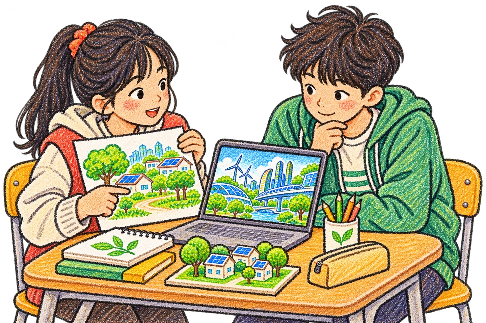
| 차시 | 교과 | 학습 주제 | 교과 역량 |
|---|---|---|---|
| 1~2 | 실과·사회 | 지구촌을 위협하는 다양한 문제 알아보기 | 비판적 사고력 |
| 3 | 사회 | 지구촌 문제와 해결 방안 정리하기 | 의사소통 및 협업 능력 |
| 4~5 | 실과·사회 | 지속 가능한 미래를 위한 SDGs 실천 과제 알아보기 | 문제 해결력 및 의사결정력 |
| 6 | 사회 | 지속 가능한 미래를 위해 우리가 할 수 있는 일 알아보기 | 의사소통 및 협업 능력 |
설계 의도본 프로젝트는 학생들이 빈곤·기아, 난민, 환경 등 지구촌 문제와 SDGs(지속 가능발전목표)를 탐구하고, 생성형 AI 및 에듀테크를 활용해 해결 방안을 다양한 디지털 산출물로 표현·공유하는 과정으로 구성된다. 이를 통해 학생들은 지구촌 다양성을 존중하고 공감하는 다문화 수용성과 글로컬 시민성을 함양하고, 자기 주도적으로 실천 과제를 해결하는 포용적 인재로 성장하는 데 목적이 있다.
| 사회 3. 지구촌 사람들 | [6사12-02] 지구촌을 위협하는 다양한 문제들을 파악하고, 지속 가능한 미래를 위한 해결 방안을 탐색한다. |
|---|---|
| 국어 5. 언어와 소통 | [6국03-04] 독자와 매체를 고려하여 내용을 생성하고 표현하며 글을 쓴다. |
| 실과 6. 데이터와 인공지능 | [6실05-04] 디지털 데이터와 아날로그 데이터의 특징을 이해하고, 인공지능에 활용할 수 있는 데이터의 유형이나 형태를 탐색한다. |
| 단계 · 프로그램 | 차시 | 주요 학습 내용 | 관련 교과 | 학습 자료 |
|---|---|---|---|---|
| et준비하기 |
1~2 |
| 국어 사회 실과 | 생성형AI 멘티미터 태블릿PC |
| xplore탐구하기nite협력하기 | 3 |
| 사회 | 캔바 학습지 태블릿PC |
| 4~5 |
| 국어 사회 | 캔바 패들렛 | |
| ake표현하기 |
6 |
| 국어 사회 | 캔바 패들렛 학습지 멘티미터 태블릿PC |
et①~②ake⑥| 평가내용 | 평가방법 | 매우 잘함 | 잘함 | 보통 | 노력 요함 |
|---|---|---|---|---|---|
| ①~②AI로 지구촌 문제 탐구·표현·공유[6실05-04] [6사12-02] | 관찰법 | AI로 지구촌 사례를 구체적으로 조사하고, 내 삶과의 관계를 창의적으로 표현해 갤러리워크에서 적극 공유함 | AI로 사례를 조사해 내 삶과의 관계를 표현하고, 갤러리워크에서 결과를 공유함 | 교사의 일부 안내로 사례를 조사하고 AI 산출물을 만들어 갤러리워크에 참여함 | 교사의 지속적인 도움으로 사례 조사, AI 산출물 제작과 공유를 차례로 수행함 |
| ③지구촌 문제를 인포그래픽으로 정리[6사12-02] | 프로젝트 관찰법 | 문제의 원인·영향·해결 방안을 정확히 파악하고 핵심이 드러나는 인포그래픽을 만듦 | 원인·영향·해결 방안을 파악하고 이를 인포그래픽으로 정리함 | 원인·영향·해결 방안 중 일부를 파악하고, 도움을 받아 인포그래픽으로 정리함 | 교사의 도움을 받아 지구촌 문제를 파악하고 인포그래픽으로 표현함 |
| ④~⑤SDGs 실천 과제 탐색·AI 안내 자료 제작[6실05-04] [6사12-02] | 관찰법 | SDGs 목표와 연결되는 생활 속 실천 과제를 스스로 찾아 창의적인 AI 안내 자료로 표현함 | 선택한 목표에 맞는 가정이나 학교의 실천 과제를 찾아 AI 안내 자료로 정리함 | 교사의 일부 안내로 실천 과제를 정하고 AI 안내 자료를 만듦 | 교사의 단계별 도움을 받아 실천 과제를 정하고 안내 자료를 제작함 |
| ⑥갤러리워크에서 SDGs 실천 방안 제안[6사12-02] [6국03-04] | 관찰법 | SDGs 목표에 맞는 창의적이고 구체적인 실천 방안을 갤러리워크에서 분명하게 제안함 | SDGs 실천 과제를 구체적으로 정리하고 갤러리워크에서 자기 생각을 분명하게 전달함 | 교사의 일부 도움으로 실천 과제를 정리하고 갤러리워크 발표에 참여함 | 교사의 지속적인 도움을 받아 실천 과제 정리와 갤러리워크 활동을 차례로 수행함 |
| 이주배경학생 평가 시 유의점 | |||||
①~②살았던 지역의 사례를 골라 자기 삶과 연결해 표현하게 한다. |
③그림과 그래프에서 핵심 정보를 고르고 협력한 과정을 살핀다. |
||||
④~⑤거주 경험을 살려 실천 과제를 고르고 AI로 표현하게 한다. |
⑥목표의 뜻을 풀어 주고 실천 과제 발표에 번역 도구를 활용한다. |
||||
| ※ ④~⑤차시는 원 평가표에 ①~②차시 기준이 반복되어 본시 활동을 바탕으로 재구성함. | |||||
6학년 프로젝트 교수·학습 과정안 | ||||||||||||
|---|---|---|---|---|---|---|---|---|---|---|---|---|
융합과목 | 실과, 사회 | 대 상 | 6학년 | 프로젝트 단계 | et (준비하기) | |||||||
프로젝트 | 지구촌 공감 프로젝트(1~2/6) -AI로 그리는 지속가능한 내일- | |||||||||||
성취기준 | [6실05-04] 디지털 데이터와 아날로그 데이터의 특징을 이해하고, 인공지능에 활용할 수 있는 데이터의 유형이나 형태를 탐색한다. [6사12-02] 지구촌을 위협하는 다양한 문제들을 파악하고, 지속가능한 미래를 위한 해결 방안을 탐색한다. | |||||||||||
학습목표 | 지구촌을 위협하는 다양한 문제를 알 수 있다. | |||||||||||
수업전략 | 수업모형 | 협동학습 | 교과 역량 | 비판적 사고력 | ||||||||
다문화 주도성 |
| |||||||||||
☑ | ☑ | ☑ | ☐ | |||||||||
| 단계(시간) | 학습요소 | 교수·학습 활동 | 자료(▶) 및 유의점(☞) | ||||||
|---|---|---|---|---|---|---|---|---|---|
| 소집단 구성 (5′) | 동기유발 | ▣ 학습동기 유발 ◦ 영상을 보고, 학습할 내용 생각해 보기 ∙ 지구촌에 어떤 문제가 발생했나요? ∙ 우리와 어떤 관련성이 있나요? | ▶ 프레젠테이션 ☞ 학생들의 삶과의 관련성을 생각해보도록 조력한다. | ||||||
| 공부할 문제 파악 | ▣ 공부할 문제 확인 ♣ 지구촌을 위협하는 다양한 문제를 알아봅시다. | ||||||||
| 전문가 집단학습 (20′) | 지구촌 문제 사례 조사하기 | ▣ 【활동1】 AI로 알아보는 지구촌 문제사례 ◦ 지구촌 문제 사례 조사하기 ∙ 지구촌에 발생하고 있는 문제 사례에 대해 AI를 활용하여 스크래핑 해봅시다. ∙ 사례 중 관심있는 사례에 대해 원 자료를 살펴봅시다. | ▶ 태블릿PC, 패들렛 ☞ 교사의 안내에 따라 반복적으로 연습한다. | ||||||
| 전문가 집단학습 (20‘) | 지구촌 문제 사례와 삶과의 관련성 탐색하기 | ▣ 【활동2】 AI로 그리는 지구촌 문제사례 ◦ AI를 활용하여 지구촌 문제 사례 안내 자료 작성하기 ∙ 문제 사례와 우리 생활과의 관련성을 표현하기 위한 프롬프트를 작성해봅시다. ∙ 관심 있는 문제 사례를 AI를 활용해 다양하게 표현해봅시다.
| ▶ 태블릿PC, 학습지 ☞ 여러 대륙의 나라를 골고루 선정하며, 다양한 갈등, 환경 등 다양한 사례가 제시될 수 있도록 한다. | ||||||
| 소집단 학습 (30‘) | 갤러리 워크 | ▣ 【활동3】 갤러리워크 ◦ 갤러리워크 준비하기 ∙ 갤러리워크를 위한 소개자료를 작성해봅시다. ◦ 갤러리워크 활동하기 | ▶ 태블릿PC, 학습지 | ||||||
| 개별 평가 및 보상 (5′) | 학습내용 정리하기 | ▣ 학습내용 정리 ◦ 배운 내용과 느낀 점 이야기하기 ∙ 오늘 공부하면서 알게 된 점을 멘티미터에 입력해봅시다. ∙ 오늘 공부하면서 느낀 점을 발표해봅시다. | ▶ 멘티미터 | ||||||
▣ 차시 예고 ♣ 지구촌 문제의 원인과 영향, 해결 방안을 인포그래픽으로 정리해 봅시다. |
대상 | 6학년 | 교과서 | 사회 146~155쪽 | |||||||||||
|---|---|---|---|---|---|---|---|---|---|---|---|---|---|---|
프로젝트 | 지구촌 공감 프로젝트(3/6) | xplore(탐구하기) nite(협력하기) | ||||||||||||
본시 성취기준 | [6사12-02] 지구촌을 위협하는 다양한 문제들을 파악하고, 지속 가능한 미래를 위한 해결 방안을 탐색한다. | 본시 관련교과 | 사회 | |||||||||||
학습목표 | 지구촌 문제의 원인과 영향, 해결 방안을 인포그래픽으로 정리할 수 있다. | |||||||||||||
수업 모형 | 문제해결학습 모형 | 교과 역량 | 의사소통 및 협업 능력 | |||||||||||
수업전략 | 수업 의도 | - 본 수업은 이주배경학생을 포함한 모든 학생이 다양한 지구촌 문제를 세계 공동체가 함께 해결해야 할 문제로 인식하도록 하는 데 목적이 있다. - 지구촌 문제와 관련하여 모둠별로 수집한 자료를 공유하고 매체자료를 함께 제작·발표하는 과정에서 의사소통 및 협업 능력을 기르고, 다양한 지역의 상황과 관점을 존중하며 문제해결에 참여하는 다문화 주도성을 함양하고자 한다. | ||||||||||||
다문화 주도성 |
| |||||||||||||
☑ | ☑ | ☑ | ☐ | |||||||||||
이주배경학생 지도계획 | - 이주배경학생이 지구촌 문제와 관련된 내용을 쉽게 이해할 수 있도록 충분한 시각 자료와 보충 설명을 제공한다. - 자신의 경험과 배경지식을 자유롭게 활용하며, 모둠 내에서 적절한 역할을 선택해 모둠원과 협력하여 자료 제작과 발표에 적극적으로 참여하도록 지원한다. | |||||||||||||
| 단계(시간) | 학습요소 | 교수·학습 활동 | 자료(▶) 및 유의점(☞) | |||||||
|---|---|---|---|---|---|---|---|---|---|---|
| 문제 상황 파악 (5′) | 동기유발 | ▣ 학습동기 유발 ◦ 인포그래픽을 보고 지구촌 문제 파악하기 ∙ 다음 자료가 나타내는 지구촌 문제는 무엇일까요? - 해양 플라스틱 오염 문제입니다. ∙ 자료에서 어떤 정보를 알 수 있나요? - 그림과 그래프를 통해 바다의 플라스틱 쓰레기 문제가 심각하다는 것을 알 수 있습니다. ∙ 이처럼 정보를 글과 그림, 그래프 등으로 알기 쉽게 나타낸 자료를 ‘인포그래픽’이라고 합니다. | ▶ 인포그래픽 그림자료 ☞ 이주배경학생의 국가와 한국이 공통으로 겪는 지구촌 문제를 제시하여 문제에 함께 공감할 수 있도록 한다. | |||||||
| 공부할 문제 파악 | ▣ 공부할 문제 확인 ♣ 지구촌 문제와 해결 방안을 정리해 봅시다. | |||||||||
| 학습활동 안내 | ▣ 학습활동 안내
| |||||||||
| 문제 원인 확인 및 정보 수집 (7′) | 자료 수집하기 | ▣ 【활동1】 인포그래픽 자료 모으기 ◦ 인포그래픽의 구성 살펴보기 ∙ 다음 인포그래픽에는 어떤 내용이 담겨 있나요? - 대기오염의 원인과 영향, 해결 방안이 담겨 있습니다. ∙ 정보를 쉽게 이해할 수 있도록 어떤 방법을 활용했나요? - 그림, 그래프, 핵심어, 색과 도형 등을 활용했습니다. ◦ 모둠별로 조사한 자료 모으기 ∙ 모둠별로 맡은 지구촌 문제에 관해 조사한 자료를 모둠원에게 소개해 봅시다. - 저는 사막화의 원인과 영향을 보여주는 사진과 지도를 찾아보았습니다. | ▶ 인포그래픽 그림자료, 조사 자료 ☞ 빈곤과 기아, 난민, 환경 문제 등 모둠별 지구촌 문제를 사전에 선정하고, 관련 자료를 조사해 오도록 한다. |
| 단계(시간) | 학습요소 | 교수·학습 활동 | 자료(▶) 및 유의점(☞) |
|---|---|---|---|
| 해결 대안 제시 (8′) | 문제해결 방법 정하기 | ▣ 【활동2】 인포그래픽 계획하기 ◦ 지구촌 문제 인포그래픽 계획하기 ∙ 조사한 내용을 어떻게 나타내면 다른 사람이 이해하기 쉬울지 논의해 봅시다. - 핵심 내용을 짧은 글로 정리하고 그림과 그래프를 활용하면 좋을 것 같습니다. - 지구촌 문제의 원인, 영향, 해결 방안(개인·공동체)을 나누어 나타내면 좋을 것 같습니다. ∙ 모둠별로 공유한 자료에서 인포그래픽에 담을 핵심 내용과 시각 자료를 선정하고, 제작에 필요한 역할을 나누어 봅시다. | ▶ 조사 자료, 활동지 ☞ 모둠원 모두가 역할을 나누고 협력하여 인포그래픽 제작에 참여하도록 지도한다. |
| 문제해결 (15′) | 문제해결 및 공유하기 | ▣ 【활동3】 인포그래픽 만들기 ◦ 지구촌 문제 인포그래픽 만들기 ∙ 모둠별로 캔바를 활용하여 지구촌 문제와 해결 방안이 잘 드러나도록 인포그래픽을 만들어 봅시다. - 글과 그림, 그래프가 내용에 알맞게 사용되었는지 확인합니다. - 특정 국가나 사람에 대한 편견이 담긴 표현은 없는지 살펴봅니다. ◦ 모둠별 인포그래픽 발표하기 ∙ 인포그래픽을 활용하여 지구촌 문제와 해결 방안을 발표해 봅시다. ∙ 모둠별 발표를 듣고 새롭게 알게 된 내용을 써봅시다. | ▶ 캔바, 태블릿PC, 활동지 ☞ 인포그래픽 템플릿을 제공하여 핵심 내용 정리에 집중하도록 한다. |
| 평가하기 (5′) | 학습내용 정리 | ▣ 학습내용 정리 ◦ 활동 소감 나누기 ∙ 오늘 공부하면서 느낀 점을 말해 봅시다. - 지구촌에 다양한 문제가 있고, 이로 인해 어려움을 겪는 사람들이 많다는 것이 안타까웠습니다. - 앞으로 지구촌 문제에 더 관심을 가지고, 문제 해결을 위해 제가 실천할 수 있는 일에 참여하고 싶습니다. | ☞ 지구촌 문제에 대한 공감이 지속적인 관심과 생활 속 실천으로 이어지도록 유도한다. |
| 차시 예고 | ▣ 차시 예고 ♣ 지속 가능한 미래를 위한 SDGs 실천과제를 알아봅시다. |
판서 | 3-(2). 지구촌의 문제와 해결 | ||||||||
|---|---|---|---|---|---|---|---|---|---|
♣ 지구촌 문제와 해결 방안을 정리해 봅시다. |
|
| |||||||
| |||||||||
평가 계획 | 평가내용 | 척도 | 채점 기준 | 평가방법 |
|---|---|---|---|---|
지구촌 문제의 원인과 영향, 해결 방안을 파악하고, 인포그래픽으로 정리할 수 있는가? | 매우 잘함 | 지구촌 문제의 원인과 영향, 해결 방안을 정확히 파악하고, 핵심 내용이 잘 드러나게 정리할 수 있다. | 프로젝트, 관찰법 | |
잘함 | 지구촌 문제의 원인과 영향, 해결 방안을 파악하고, 인포그래픽으로 정리할 수 있다. | |||
보통 | 지구촌 문제의 원인과 영향, 해결 방안 중 일부를 파악하고, 도움을 받아 인포그래픽으로 정리할 수 있다. | |||
노력 요함 | 교사의 도움을 받아 지구촌 문제를 파악하고, 인포그래픽으로 정리할 수 있다. | |||
이주배경학생 평가 시 유의점 | 한국어 표현의 유창성이 아니라 지구촌 문제와 해결 방안에 대한 이해, 핵심 정보의 선정 및 협력 과정에 중점을 두고 평가한다. | |||
3차시 학생 활동지 · xplore 탐구하기 · nite 협력하기 · 실력
| 구분 | 핵심 내용 | 활용할 시각 자료 |
|---|---|---|
| 원인 | 그림 / 사진 / 그래프 / 지도 / 기타 | |
| 영향 | 그림 / 사진 / 그래프 / 지도 / 기타 | |
| 해결 방안 | 그림 / 사진 / 그래프 / 지도 / 기타 |
| 모둠 | 지구촌 문제 | 새롭게 알게 된 내용 |
|---|---|---|
6학년 프로젝트 교수·학습 과정안 | ||||||||||||
|---|---|---|---|---|---|---|---|---|---|---|---|---|
융합과목 | 실과, 사회 | 대 상 | 6학년 | 프로젝트 단계 | xplore(탐구하기) nite (협력하기) | |||||||
프로젝트 | 지구촌 공감 프로젝트(4~5/6) -AI로 그리는 지속가능한 내일- | |||||||||||
성취기준 | [6실05-04] 디지털 데이터와 아날로그 데이터의 특징을 이해하고, 인공지능에 활용할 수 있는 데이터의 유형이나 형태를 탐색한다. [6사12-02] 지구촌을 위협하는 다양한 문제들을 파악하고, 지속가능한 미래를 위한 해결 방안을 탐색한다. | |||||||||||
학습목표 | 지속가능한 미래를 위한 SDGs 실천과제를 알 수 있다. | |||||||||||
수업전략 | 수업모형 | 문제해결학습 | 교과 역량 | 문제 해결력 및 의사결정력 | ||||||||
다문화 주도성 |
| |||||||||||
☑ | ☑ | ☑ | ☐ | |||||||||
| 단계(시간) | 학습요소 | 교수·학습 활동 | 자료(▶) 및 유의점(☞) | ||||||
|---|---|---|---|---|---|---|---|---|---|
| 문제상황파악 (5′) | 동기유발 | ▣ 학습동기 유발 ◦ 영상을 보고, 학습할 내용 생각해 보기 ∙ 지구촌에 어떤 문제가 발생했나요? ∙ 우리와 어떤 관련성이 있나요? | ▶ 프레젠테이션 ☞ 학생들의 삶과의 관련성을 생각해보도록 조력한다. | ||||||
| 공부할 문제 파악 | ▣ 공부할 문제 확인 ♣ 지속 가능한 미래를 위한 SDGs 실천 과제를 알아봅시다. | ||||||||
| 문제의 원인 확인·정보수집 (20′) | SDGs 알아보기 | ▣ 【활동1】 SDGs 알아보기 ◦ SDGs의 의미와 목표 알아보기 ∙ SDGs의 의미에 대해 알아봅시다. ∙ SDGs의 17개 세부 목표를 살펴봅시다. | ▶ 프레젠테이션 | ||||||
| 문제의 원인 확인·정보수집 (20‘) | SDGs 목표를 위한 실천 과제 탐색하기 | ▣ 【활동2】 SDGs 목표를 위한 실천 과제 탐색하기 ◦ SDGs 목표 선정하기 ∙ SDGs 중 관심 있는 목표를 선택해 봅시다. ∙ 선택한 목표를 위해 가정, 학교 등 일상 생활에서 실천할 수 있는 과제를 탐색해 봅시다. | ▶ 태블릿PC, 학습지 ☞ SDGs의 17개 목표를 골고루 선택할 수 있도록 안내한다. | ||||||
| 해결대안제시 (30‘) | SDGs 실천을 위한 자료 만들기 | ▣ 【활동3】 SDGs 실천을 위한 자료 만들기 ◦ AI를 활용하여 SDGs 실천을 위한 자료 만들기 ∙ SDGs의 목표를 위한 실천 과제를 알리는 자료를 만들기 위한 프롬프트를 작성해봅시다. ∙ AI를 활용해 다양하게 표현해봅시다.
| ▶ 태블릿PC, 학습지 | ||||||
| 문제해결 (5′) | 학습내용 정리하기 | ▣ 학습내용 정리 ◦ 배운 내용과 느낀 점 이야기하기 ∙ 오늘 공부하면서 알게 된 점을 멘티미터에 입력해봅시다. ∙ 오늘 공부하면서 느낀 점을 발표해봅시다. | ▶ 멘티미터 | ||||||
▣ 차시 예고 ♣ 지속가능한 미래를 위해 우리가 할 수 있는 일을 알아봅시다. |
대상 | 6학년 | 교과서 | 사회 156~158쪽 | ||||||||||||
|---|---|---|---|---|---|---|---|---|---|---|---|---|---|---|---|
프로젝트 | 지구촌 공감 프로젝트(6/6) | ake 표현하기 | |||||||||||||
본시 성취기준 | [6사12-02] 지구촌을 위협하는 다양한 문제들을 파악하고, 지속 가능한 미래를 위한 해결 방안을 탐색한다. [6국03-04] 독자와 매체를 고려하여 내용을 생성하고 표현하며 글을 쓴다. | 본시 관련교과 | 사회 국어 | ||||||||||||
학습목표 | 지속 가능한 미래를 위해 우리가 할 수 있는 일을 알 수 있다. | ||||||||||||||
수업 모형 | 협동학습 모형 | 교과 역량 | 의사소통 및 협업 능력 | ||||||||||||
수업전략 | 수업 의도 | - 학생들이 지구촌 문제와 지속 가능발전목표(SDGs)를 바탕으로 실천 과제를 탐구하고, 생성형 AI를 활용하여 퀴즈·게임·포스터·영상 등 다채로운 디지털 산출물로 구현하는 과정을 통해 이주배경학생을 비롯한 모든 학생이 자신만의 시각과 역량을 주도적으로 발휘하도록 한다. - 완성된 산출물을 공유하고 성찰하는 갤러리워크 활동을 통해 동료의 실천 아이디어를 깊이 있게 이해하고 존중하며, 지구촌 다양성에 대한 공감을 바탕으로 지속 가능한 미래를 함께 실천하는 글로컬 시민성을 기르도록 한다. | |||||||||||||
다문화 주도성 |
| ||||||||||||||
☑ | ☑ | ☑ | ☐ | ||||||||||||
이주배경학생 지도계획 | - 본시 산출물 정리 및 마무리 단계에서 생성형 AI와 디지털 번역 도구를 활용하여 언어적 제약 없이 자신의 SDGs 실천 아이디어를 명확히 표현하고 완성할 수 있도록 조력한다. - 세움 성장 카드를 활용하여 학생의 한국어 수준을 사전에 파악하고 자료를 준비한다. | ||||||||||||||
| 단계(시간) | 학습요소 | 교수·학습 활동 | 자료(▶) 및 유의점(☞) | |||||
|---|---|---|---|---|---|---|---|---|
| 소집단구성 (5‘) | 동기유발 | ▣ 학습동기 유발 ◦ 그레타 툰베리의 영상 살펴보기 ∙ 이 영상 속 주인공은 무엇에 대해 이야기하고 있나요? - 기후 변화로 인한 심각성을 이야기하고 있습니다. - 지구촌 위기에 대한 심각성을 이야기하고 있습니다. | ▶ 프레젠테이션 | |||||
| 공부할 문제 파악 | ▣ 공부할 문제 확인 ♣ 지속 가능한 미래를 위해 우리가 할 수 있는 일을 알아봅시다. | |||||||
| 학습활동 안내 | ▣ 학습활동 안내
| |||||||
| 전문가 집단학습 (10‘) | 갤러리 워크 준비하기 | ▣ 【활동1】 (갤러리워크)준비하기 ◦ 모둠별 갤러리워크 소개자료 작성하기 ∙ 모둠별 갤러리워크를 위한 소개 자료를 작성해봅시다. - 지속 가능한 미래를 위한 SDGs ◌번 ◌◌◌◌목표입니다. 이를 위해 우리는 일상 생활 속에서 ◌◌◌◌를 함께 실천해야 합니다. ◦ 갤러리워크 리허설하기 ∙ 짝과 함께 갤러리워크 위한 리허설을 해 봅시다. 도슨트로서 자신이 제작한 자료를 제시하고 그에 알맞은 설명을 해 봅시다. | ▶ 태블릿PC, 학습지 ☞ SDGs의 목표와 관련하여 실천 과제를 제시할 수 있도록 한다. |
| 단계(시간) | 학습요소 | 교수·학습 활동 | 자료(▶) 및 유의점(☞) | |
|---|---|---|---|---|
| 소집단 학습 (20‘) | 갤러리 워크 실천하기 | ▣ 【활동2】 (갤러리워크) ◦ 갤러리워크 활동하기 ∙ 지속 가능한 미래를 위해 우리가 할 수 있는 일들에 대해 도슨트의 설명을 듣고 실천을 다짐해 봅시다.
| ▶ 태블릿PC, 학습지 ☞ 도슨트의 실천 방안을 갤러리의 생활 속에서 어떤 방법으로 실천할 것인지 구체적인 이야기를 나눌 수 있도록 조력한다. | |
Tip ･ SDGs의 목표 중 모둠별로 선택하여 이를 위해 생활 속에서 학생들이 실천할 수 있는 내용을 선정하고, 바이브코딩을 활용한 퀴즈와 게임, AI를 활용한 웹툰, 동영상, 포스터 등으로 제작한다. ☼ 생성한 자료는 학급 자료 아카이브(패들렛)에 업로드하여 학급 학생들과 공유한다. 교사 제공 학급 공유 게시판 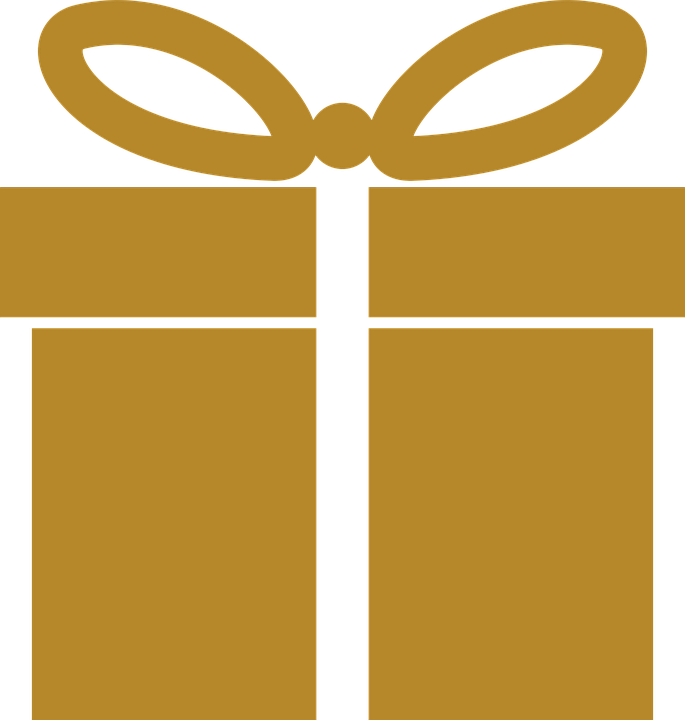 갤러리워크 사전활동 | ||||
| 개별평가 및 보상 (5‘) | 학습내용 정리 | ▣ 학습내용 정리 ◦ 배운 내용 정리하기 ∙ 기억에 남는 낱말을 멘티미터 설문에 입력해 봅시다. - SDGs, 지구온난화, 기후위기, 에너지 절약 등 ∙ 지속 가능한 미래를 위해 다함께 실천합시다. | ▶ 멘티미터, 태블릿PC, 학습지 ☞ SDGs의 목표를 위한 실천과제를 학생들이 생활 속에서 함께 실천할 수 있도록 독려한다. | |
| 차시 예고 | ▣ 차시 예고 ♣ 세계의 인구 분포 특징과 인구 성장 과정을 알아봅시다. | |||
판서 | 3-(2) 지구촌의 문제와 해결 | ||||
|---|---|---|---|---|---|
♣ 지속 가능한 미래를 위해 우리가 할 수 있는 일을 알아봅시다. | 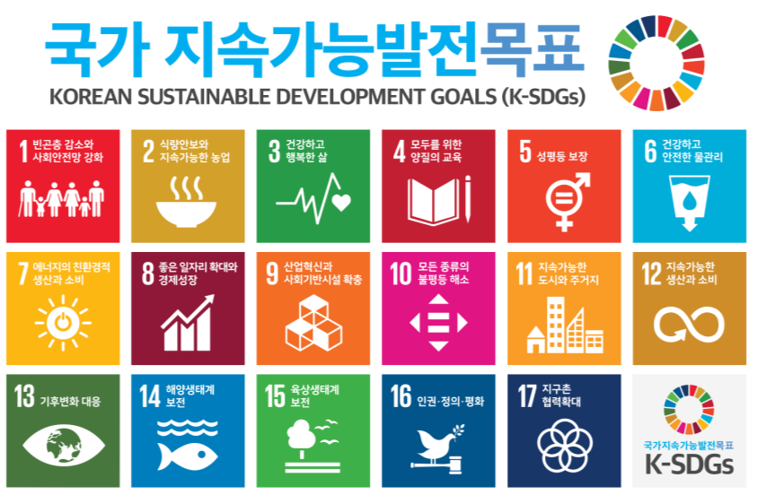 |
| |||
|
평가 계획 | 평가내용 | 척도 | 채점 기준 | 평가방법 |
|---|---|---|---|---|
지속 가능한 미래를 위해 SDGs 목표와 관련하여 실천과제를 제시할 수 있는가? | 매우 잘함 | SDGs 실천 과제를 창의적·구체적으로 정리하고, 갤러리워크에서 실천 방안을 명확하고 적극적으로 제시할 수 있다. | 관찰법 | |
잘함 | SDGs 실천 과제를 구체적으로 정리하고, 갤러리워크에서 자신의 생각을 분명하게 전달할 수 있다. | |||
보통 | 교사의 부분적인 도움을 받아 SDGs 실천 과제를 정리하고, 갤러리워크 발표에 참여할 수 있다. | |||
노력 요함 | 교사의 지속적인 조력을 받아 실천 과제를 정리하고, 갤러리워크 활동을 단계적으로 수행할 수 있다. | |||
이주배경학생 평가 시 유의점 | 이주배경학생이 SDGs의 목표에 대해 이해하기 어려울 수 있으므로 자세한 설명으로 이해를 돕는다. | |||
6차시 학생 활동지 · ake 표현하기 · 강점
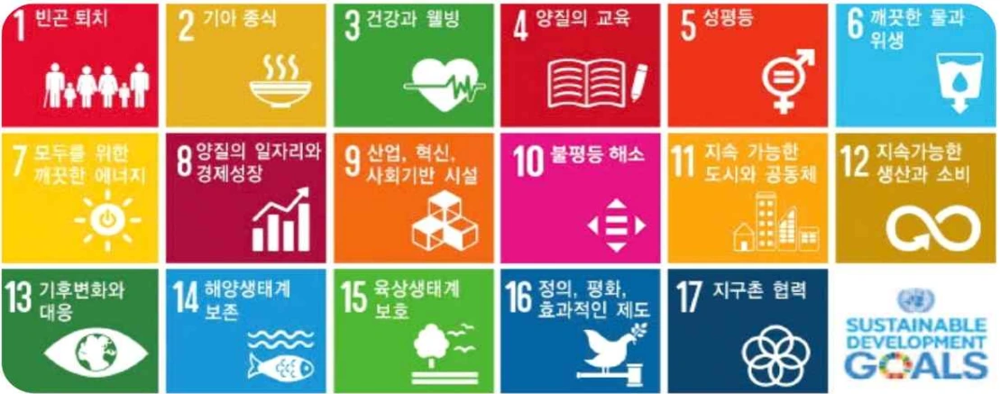